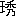

序詞
炭売のおのが妻こそ黒からめと。吟ぜし秀句ならなくに。黒き小袖に鉢巻や。其の助六がせりふに云う。遠くは八王寺の炭焼。
売炭の
歯欠爺。近くは
山谷の
梅干婆に至る迄。いぬる天保の頃までは。
茶呑咄しに残したる。炭売
多助が一代記を。
拙作ながら
枝炭の。枝葉を
添て
脱稿しも、
原来落語なるを
以て。小説
稗史に
比較なば。
所謂雪と炭俵。
弁舌は飾れど実の薄かるも。
御馴染甲斐に
打寄る
冠詞の
前席から。ギッシリ詰る
大入は、誠に
僥倖当り
炭。俵の縁語に評さえ
宜を。例の若林先生が。火鉢にあらぬ
得意の速記に。
演舌るが儘を書取られしが。写るに速きは
消炭も。三
舎を
避る
出来栄に、
忽ち一部の
册子となりぬ。
抑この
話説の初集二集は
土竈のパットせし事もなく。
起炭の
賑やかなる場とてもあらねど後編は。
駱駝炭の
立消なく。
鹽原多助が忠孝の道を炭荷と
倶に重んじ。節義は
恰も
固炭の固く
取て動かぬのみか。
獣炭を作りて酒を
煖めし
晋の
羊が
例に
做い。
自己を節して費用を省き。天下の
民寒き者多し独り
温煖ならんやと
曰いし。
宋の太祖が
大度を慕い。
普く慈善を施せしも。始め蛍の
資本より。炭も
焼べき
大竈と成りし始末の
満尾迄。御覧を
冀うと
言よしの。
端書せよとの
需はあれど。筆
持すべも
白炭や。
焼ぬ昔の雪の枝炭屋の妻程黒からで鈍き作意の
炭手前。曲り
形なる飾り炭。
唯管炭のくだ／＼しけれど。
輪炭胴炭点炭と重ねて御求めの
有之様。出版人に
差代り。代り栄せぬ
序詞を。
斯は物しつ。
三遊亭圓朝記
［＃改丁］
扨申上げまするお話は、鹽原多助一代記と申しまして、
本所相生町二丁目で薪炭を商い、天保の頃まで伝わり、
大分盛んで、地面二十四ヶ所も所持して居りました。其の元は
上州沼田の
下新田から六百文の
銭をもって出て参りました身代でござります。其の頃の
落首に「
本所に過ぎたるものが二つあり津軽大名炭屋鹽原」と歌にまで
謡われまして、十万石のお大名様と一緒に
喩えられます位になる其の
起源は、
僅かの
端銭から取立てまして、五代目まで続きました。其の多助の身の行いの正しいのと、孝行なのと、
殊に商法の名人で経済に長じていることは、立派な学者でもかなわん程で、多助は別に学問もありませんが、実に
具わって居りますので、今に
浅草八
軒寺町の
東陽寺という寺の墓場に鹽原多助の石碑がありますが、其の石碑に実父鹽原
角右衞門、養父も鹽原角右衞門と法名が二つございますが、実父も養父も同姓
同名でござりますから
種々と調べて見ますと、上州沼田の下新田にまだ縁類も残って居りますから
聞糺しますと、実父角右衞門は
元と
阿部伊豫守様の御家来で、八百石を
領りました者ですが、何ういう訳か浪人して行方知れずになりました。其の角右衞門の家に勤めました
岸田右内という御家来がありまして、其の者が若気の至りで、角右衞門の
御新造の
妹おかめと密通をして家出をいたし、
本郷春木町に
裏家住いをいたしまして、名も
岸田屋宇之助と改め、旅商いをして居りますが、実に恋は思案の
外でございます。右内は忠心の者でございますから、旅商いをしながらも、旦那様は
何方にお出でか、どうかお目にかゝりたいと主人の事を片時も忘れたことはありません。ふと沼田に主人の居る事を聞いてから、日光の
中禅寺の奥へ三里入ると温泉がありますから、商いながら参りましたが。其の頃は開けませんから、湯場も鶴の湯と
川原の湯と二ヶ所で、宿屋もあります。其の中に
吉見屋という宿に泊りましたが、道連は
堺屋傳吉という岸田屋の宇之助と
旅商人仲間で、
両人は
仲好でございますから、両人はこれから沼田へ山越しをしようと云うので、道で聞きますと、山道でとんと往来がありませんので、
極難所ですから案内者がなければいけませんと聞いて、其の
夜の
中に案内者を頼みまして、
翌朝になると、
宇「傳吉さん案内者は」
傳「今聞いてるんだが、モシ／＼宿の旦那、御案内者は宜しゅうございますかね」
主「はい／＼心得ましたが、
昨夜はどうも、
商にお出でなすって多分のお茶代を戴いて済みません、
何卒明年も御心配なくなア」
傳「いや、ほんの心ばかりです、此の宇之助さんは沼田へ
行きたいという、私も煙草を少し仕入に
往こうと思うのだが、
大分道が知れにくいそうだから、
昨夜から案内者をお頼み申したのだが、ありましたかえ」
主「はい／＼案内者はもう頼み置きました、お弁当も
拵えましたから」
傳「
何卒強そうなものを頼んでおくんなせえ」
主「えゝ
強いのを頼みました、これ
磯之丞々々々」
傳「磯之丞というのが案内者ですか」
主「左様でございます」
傳「弱そうな名で、なまめいた名ですなア」
主「なアに頑丈なものでござりやす」
という所へ出て来たのは、
丈は五尺七八寸もあって、
臑に毛の生えて居る、熊をみたような男がのそりと立って、
案内「へい御案内しやしょう」
傳「どうも芝居なら磯之丞なんというと、
突転ばしがする役だが、こりゃ
強そうだ、そうしてお前は素足かえ」
案「えゝ素足です」
脚半も
穿かないで、
単物に小倉の帯をちょっ切り結びにして、鉄砲を
担いでおります。
傳「モシ／＼腰にある毛の生えた
巾着はなんだえ」
案「これは狐の皮で
拵えたんでがんす」
傳「こう、どうだえ、狼は出やしますまいねえ」
案「狼は出ねえが、
蟒や
猪が出まさア、なアに出ても
飛道具ウ持っているから
大丈夫でござりやす、あんた方の荷物をお出しなせえ」
と二人の荷物を
連尺のような物で脊負い、其の上に
鉈を付けて出かけて
往く。
主「左様なら御機嫌宜しく、磯之丞気をつけて上げろ」
傳、宇「左様なら、御機嫌宜しく」
と
暇乞いをして西の方へ出かけましたが、花野原を二三町往きますと、ちょろ／＼流れがあって、別に
路とてはなく、沢を渡って歩く、と七八町まいりますと、これから山手へかゝるに従い、熊笹が生えていて、歩くたびにゴソ／＼として、朝露に袖を濡らしまして、段々と登るほどに熊笹は
丈を越し向うが見えず、
傳「おい／＼案内さん、少し待ってくんな、狼が出ても
蟒が出ても分らねえじゃねえかえ」
案「狼が出ても大丈夫でがんす」
宇「こんな所はどの
位あるえ」
案「まだ廿町ばかりありやす」
傳「どうも驚いた、熊笹も
鮓屋にあると随分
粋なもんだが、
此様なにあっちゃア
不意気なもんだのう」
と話をしながら漸く登りますると、是れから
金精峠と申して実に
難所で、樹木は
榧松と
羅漢柏の大樹ばかりで、かれこれ一里半ばかり登りますと、西の方は日光の
男体山、
此方は
白根山が見えまする。
傳「どうだい、ひどい所だねえ、どうだえ、何んとか云ったッけ、磯之丞さん、ひどい所だねえ、
此様な所じゃアないと思ったが、これじゃア
蟒も出ましょう、どうだい宇之さん」
宇「ひどい所でございます、
私も是程とは思いません、是れから又登るのかえ」
案「これからアはア
下ります」
と云いながら、これより一里ばかり下りますと、
渓の
流で、どう／＼ッと流れる。山には草に花が咲いて居りますが、見馴れぬ草で、名も知れない草の花が咲いております。
渓の水で
咽喉を
湿おして、それから一里半ばかりも登りますと、見上げる程の大樹ばかりで、
両人は
草臥れたから大樹の根にどっかり腰を掛けて、
傳「宇之さん弁当を
遣おうじゃないか、案内さん弁当を出して下さい」
案「ハア随分草臥れやす」
傳「お前はよく馴れてるから草臥れないようだねえ」
案「
私なんざア年中
斯ういう所を歩いてるから、
平地は
却って歩きにくい」
といいながら
両人が弁当を
開けると、大きな
握飯が二つと、梅干の堅いのが入れてある。
傳「
何うだい、大変大きな
握飯じゃないか、もっと幾つにもしてくれゝばいゝに、梅干は
真赤で堅いねえ、あゝ
酢ぱい、
案内者さんの握飯は大きいねえ」
案「
私アこいつを半分喰って、また
明日半分喰うのだ」
傳「
苛いねえ、茶か何か貰いてえものだねえ」
案「茶も何もありやしねえ、六里の間
家がねえから」
宇「それじゃア水を汲んで来てくんねえ」
案「水もありやしねえ」
宇「それでも
先刻流れていたじゃアねえか」
案「ハテ山の上から
搾れて
打落してめえるだから、下にはあるが、山の上には水はありやしねえ」
宇「
苛いねえ、すっぽり飯を喰うのだ」
と小言を云いながら弁当をつかって、さア／＼
下りましょうと、これから二里ばかり下りますと、里近くなったと見えて水がどうどッと流れて、雑木山があって、向うに薪をこなして居るは此の山村の
杣と見えて、
傍の方に
山菅で作った
腰簑に、
谷地草で編んだ
山岡頭巾を
抛り出してあって、
燻ぶった薬鑵と茶碗が二つと弁当が投げ出してあるを見て、
傳「宇之さん、水のある処へ来ると茶があらア、向うに
杣だか何だか居るようだぜ、申し少々お願い申しますがね、私共は日光から
山越をして来ましたが、
此処に茶か何かありますが、戴けましょうか」
杣「はい、ぬるくなりましたろうが、宜しければお飲みなさい」
宇「モシ、あなたのお宅は此の近所ですかえ」
杣「はい、これより二里ばかり下でございます」
傳「それじゃア此の薪は
背負って
下るのですかえ」
杣「いゝえ、此の難所を薪を担いでは下りられません」
傳「それじゃア馬の脊で
下しますのかね」
杣「いや馬では
猶いけません」
傳「それじゃア
何うしますえ」
杣「この谷川へ
投り込んで置きますと、ちょうど
翌日の昼時分に
私共の村に流れて着きます」
傳「へえ、のんきなものですなア、お茶を一つ戴きますよ」
と云っている所へ雑木山から出て来たのは、その
杣の女房と見えて、歳ごろは二十七八で色白く鼻筋通り、
山家には稀な女でございます。細帯に両裾を
端折り、亭主の手助けをして居りますものと見え、両人とも中よく働いて居りますを見て、
傳「宇之さん、こういう山の中の女だから
猶お目立ちやすが、
斯様なにくすぶって居るが、これを江戸へ持って往って磨いて見ねえ、どんな紙屑買が見倒しても奥様の
価値があるぜ」
宇「へえ成程、いゝ人柄ですねえ」
と思わず宇之助が見ると、八年前に別れました主人鹽原角右衞門夫婦ゆえ、
宇「お懐かしい、どうして
此様な処にお出でなさいました」
と女の側にばら／＼と駈寄りまして、
草原へ手を突きますと、
お清「おやまア
右内だよ、旦那岸田右内でございますよ」
鹽「おゝ右内か、懐かしかった」
と云われて右内は涙ぐみ、
右「えゝ、そんなお
身形にお成りなさいまして、
此様な山の中にお出でなさいますか、お
情ない事でございますなア」
鹽「いやもう浪人して、別に
便る所もないから、此の村に元家来の
惣助という者がいるから、それを便って来て、少しは山も
田地も持っていたが、四ヶ年あとの
出水で押流されて、どうも仕方がないから此の通り秋は
樵をして、冬になれば
猟人をして
漸々に暮している、実に尾羽打枯らした此の姿で、
此所で逢おうとは思わなんだのう」
右「へい／＼
私が家出をしましたのは八年あと、其の時はさぞ御立腹をなさいましたろうな」
鹽「其の
折は悪い奴、主人の妹をそゝのかし、家出をいたすは
不埓者と云っていたが、此の五六年此の
方懐かしくて、実に逢いたく存じていたな」
清「そうして妹のおかめは無事でいるかえ」
右「へい達者でございます、お宅を家出しましてから、只今では本郷の春木町に
裏家住いをして居ります、
外に斯うという事も存じませんから、只今では斯うやって旅商いをいたして居りましても、あなたにお目にかゝってお
詫事をして戴きたいと、
旦暮存じて居りましたが、
此様な山の中においでとは存じませんが、沼田の方にいらっしゃるという事ですから、日光から
山越をしてまいりましたも、
若しや貴方にお目にかゝられる事もありましょうかと、
神仏を信じて居りました甲斐があって、お目にかゝる事が出来ました」
と涙拭えば、
鹽「
伴もある様子だが、今晩は私の
家へ泊ってはくれまいか」
右「へい、泊っても宜しゅうございますが、
商人仲間の
伴が有りますから、あの男を先へ帰しましょう」
と話していると、
傳「おい宇之助さん／＼、おや、あの女にへい／＼お辞儀をしているよ、弁当の余りでも貰う気じゃアねえか、宇之助さん
何うしたい」
右「私は今少し訳のある人に逢って、今晩泊らなければなりませんから、あなたは
明日沼田の
大竹屋という宿屋へお泊りなすって下さい、事に寄ったら二日ぐらい遅くなるかも知れないが」
傳「
左様かい、それじゃア先へ往っているよ、お前が三日位かゝっても待っているよ、それじゃア磯之丞さん先へ
往こう」
とこれから別れて、案内と
両人連立ってまいります。
此方は三人で女房が薬鑵を
提げて、右内が脇に附きまして、
漸々山道を小川村へ二里ばかり
下りて、横に又四五町入って見ますと、屋根には板の上に石を載せて嵐を防ぎ、実に見るかげもない山住いで、中へはいると大きな囲炉裏が切ってあって、竹自在へ
燻ぶった薬鑵がかゝって居ります。留守居をして居りますのが多助という、八歳になる角右衛門が一人子ですが、これが後に鹽原多助と申して、天下に名高い人になります者ですから、自然に
他の子供とは違いまして、おとなしやかに居ります。右内は
如何に
御運が悪いとて、八百石取のお身の上が、人も通わぬ
山中の
斯様な
茅屋に
住っておいでになるのか、お情ないと気の毒そうに上って来ました。
右「誠に思いがけなくお目にかゝりましたなア」
お清「あの、右内や、お前が屋敷を出る前に産れた多助という
悴はこれだよ」
右「えゝ、あのお
坊様でございますか、お
父様によく似ていらっしゃいます、
私は右内でございますが、あなたは御存じございますまいなア」
多「何だか知んねえやい」
右「どうもまるで
田舎語になっておしまい遊ばしたなア」
と涙を拭き、
右「成程猟師の
家のようでございますなア」
鹽「何しろ一杯つけな」
と是から女房が支度をするのに、
前川で
捕れた
山女に
岩魚という魚に、其の頃会津辺から

る
味淋のような
真赤な酒で、
鹽「えゝ、これは奥州から来る
石首魚という魚の干物だ、一つお食べな」
右「へゝ、どうも御新造さまのお酌で恐入りますな、
私が家出をしましたのは矢張八月
朔日、其の年の三月のお節句に、お客様の帰った跡で、御新造様のお酌でお
白酒を頂戴した事などを、かめとお噂をして居りました、家出をしたのも、かめが
懐姙を致しました故でございます、只今では七歳になり、名をおえいと申します」
清「おゝ
左様かえ、お前に似てもかめに似ても
好子だろうが、見ることも出来ないのう」
右「それでも
彼が
裏家住いに馴れて、誠に当節はよく馴れて居ります、
働のない
私でございますから不自由勝で、へい、妙なお酒ですなア」
清「お前は
喫べた事はないだろう」
右「へい、甘いような
酢ぱいような変ですなア、へえ、これが会津から来るので」
鹽「あの、
其方の親父
右平は屋敷に永年奉公をしてくれて、其の悴の其方も屋敷に勤めて居たのだから、家来とは云いながら家来でない、殊には
私の妹を女房にしているから弟も同様でのう」
清「旦那様は故あって御浪人あそばしても、お固い御気性だから、二君に仕えずと云っておいでだが、此の悴はどうか世に出したいと思っているが、私の甥に当る戸田様の御家来で
野澤源作という者が宇都宮の藩中だから、それへ頼もうと思って、
度々手紙をやった処が、どうか重役に相談して世話をして上げますから、それに
就て、どうか話をしたいから出て来いと云って、返事を寄越したが、四年あとの山水で田地から諸道具衣類まで皆流されてしまったゆえ、今ではどうする事も
出事ず、今お金が五十金あれば、江戸のお屋敷へお住込が出来るのだから、
此処で私がお頼みだが、かめと
両人でどのようにも才覚して送ってはくれまいか」
右「へい、どうか致しましょう」
鹽「馬鹿ア云うな、
旅商人の右内に五十金出来よう筈はない」
清「それだって
良人、これに頼むより他に仕方がございません、それに右内は家出をする時、
家のお金を廿金持って逃げておいでだよ」
右「えゝ誠に恐入ります、只今では金子の出来よう筈はございませんが、来年の三月までお待ち下されば、どうにか致しましょう」
清「来年の三月じゃ遅いじゃないか、是非今年の
中にと云っても、雪があって来られまいが、どうか今年の中に送っておくれ」
右「なに、どうか致しましょう、なアに子がなければおかめを勤め奉公に売っても、え、これは御新造様の前で、なにどうか致しましょう」
と口には云っても右内が今の身の上では才覚の出来よう道理はございませんが、どのようにも才覚しようと考えながら、其の晩は
寐まして、翌日立とうとするを彼是と引留められまして、昼少し過ぎに
漸々振切って出立しますと、
此方は親子三人で
須賀川の
堤まで送ってまいりました。
右「左様なら御機嫌よろしゅう」
と云うので
此方も見送る、右内は見返りながら、金の出来よう筈はないが、
神仏の
恵で、何うか才覚したいものだと考えながら、うか／＼と大原村という処へ掛りました所が、大きに
草臥れましたから茶店に腰を掛けて休んでいると、
其処へ入って来たお百姓は
年齢四十四五で、木綿のぼうた
布子に羽織を上に着て、
千草の股引で、お
納戸色の
足袋に
草鞋を
穿き、
客「誠に久しく逢いません」
婆「おやまア角右衞門さん、おあがんなんしよ」
角「ちょっと来てえと思うが、秋口になると用が多くって来られねえで、まアあんたも達者で」
婆「まことに
此間もあんたの方へ向けてやったら、
演劇を見せてくれると云うから、
遣った所が、角さんなればこそ世話アして見せてくれて、
娘子を遣ったら
宜く世話アして呉れやした、
帰って来てどんな狂言だったと云うも、何だかしんねえが弁慶縞の
衣物を着たお
侍が出て来て、脇差のあたまへ
徳利を
提げていたが、
余程酒の好きなお
侍で、跡から
機織女が
緒手巻を持って出て来たところが、其の
娘子を
侍が脇差で突ッ通すと、女が
振髪打って
眼睛まわしてほっこりきエッたって云いやんすから、跡で聞いたら
妹脊山の狂言だッて」
角「はい、碌に
構えませんでハア、
家のお
爺さんは居やんすかなア」
婆「へい、居りやんす、
新田の角さんが来やしたよ」
爺「へい、あんた無沙汰をしやんした、あんたに見せべえと思っていた
青爪で、三
歳五ヶ月になる馬で、いゝ馬だ、今見せるから待って下せえ」
角「あゝ馬かえ」
爺「マア物を見なせえ」
と云いつゝ引出して来たのは実に
駿馬ともいうべき名馬で。
角「やア、いゝ馬でがんすなア」
爺「あんた、此の馬は実に珍らしい馬でね、
えら一つ起して、
嚔一つした事がねえ、どんなに引いて引まわしても、足に
血溜一つ出来る馬じゃアねえ、見なんせえ」
角「まア見べえか」
と云いながら歯を見たり爪を見たり、前足を撫でたり、暫く見て居りましたが、
角「こりゃア買いてえねえ、
幾許だアな」
爺「五両
五粒だッて」
角「
高えなア」
爺「
高えって五両五粒がものはあらア」
角「そうけえ、
己ア今金はあるが、千鳥村へ
田地の
掛合に来たんだから、田地が
売買にならなければ
帰りに直ぐ買って
往くから、何しろ手附を置いて往くから、馬を置いて下せえ」
と懐から取出す胴巻は、木綿か
紬か知れませんが、つる／＼とこいて落ちた金は七八十両もありましょうか、其の中から一両出して、
角「さア此処へ置きやす」
と残りの大金を
懐中へ
括し附けまして、
角「
外へ売らねえように、左様なら」
婆「左様なら、
帰りにお寄んなんしよ」
先刻から
両人で話をしているのを岸田が見るとはなしに、其処へ落ちたのは大金、あゝ有る所には有り余るものだ、あの金さえあれば主人を世に出し、
御恩報しも出来るものをと思いますと、
面皰の出るほど欲くって堪らないから、うか／＼と思わず知らず
追貝村まで
彼の百姓の跡を
尾けて来ました。百姓はそれと知らず
谷合までかゝりますと、
右「もし旦那え／＼」
角「なんだえ」
右「へえ先程大原村の茶店で馬を買ってお手附をお出しになる時、側に茶を
喫んで居りました
私は
旅商人でございます」
角「はい」
右「始めてお目にかゝって恥入りますが、
私は元は武士でありましたが
商人になりまして、岸田屋宇之助と申します、
私の主人が故あって浪人をして、此の先の小川村に住んで居りまして、
昨日図らず逢いましたところ、五十両の金があれば世に出られるから才覚をしてくれと云われましたが、
私の只今の身の上では、
迚も才覚は出来ませんから、心配している所へ、あなたが手附をお出しになった時見た金は、七八十両はあると思います、誠に押付けたお願いですが、
屹度御返却申しますから、来年の三月まで五十金拝借はなりますまいか」
と云われて角右衞門は驚きまして、そっと懐へ手を入れ胴巻を押えながら、
角「なに五十両貸してくれと、己は
数坂越を幾度もするが、
汝エような
盗賊がいるから旅人が難渋するのだ、さア名主へ連れて
往くから来い」
宇「
盗賊なんのと云うものではございません、名前までお明し申す程でございますから、お得心下されば、これから主人の所へまいりまして、両人で
連印の上拝借します、どうも主人を世に出さなければ済みません、神かけて御損は掛けませんから、
何卒来年の三月までお貸し下さい、印形を押して証文を入れますから、なア申し」
角「馬鹿野郎、五十両という大金を
汝がような始めて逢った奴に
誰が貸す、主人のためだの忠義だなんと云やアがって、己が金へ目を附ける
盗賊め、さア名主へ来い、
往かねえか」
と拳を固めて右内の
横面を
打ったから、顔から火の出るようだが、
右「ア
痛た／＼、御尤もでございますが、明かして願うのですから、
私の身体は主人のためなら十や廿
打たれましても
厭いません、主人は立派な侍で、あんな所へ置く人ではありません、江戸表へ参りさえすれば、百石取りぐらいになるのは造作もございません、主人さえ世に出ればお金の融通も出来ますから、もっと早く御返却致します、
何うぞ貸しておくんなさい」
角「黙れ、
汝え己に
打たれるか」
右「へえ、お
打ちなさい」
角「さア此処へ来い」
と
髻を取って引寄せて、二十ばかり続けて
打ちましたから、実に頭の割れるほど痛いが
耐えて、
右「それで貴方御承知なら主人の所へどうか御一緒にお出で下さい」
角「馬鹿野郎、まだ金を借りたいと云うか、名主へ連れて
往くのは面倒だから
打のめしたんだ、
往けったら
往かねえか」
と云いながら力に任せて右内の胸を
蹶て、
横面をポーンと
打ったから、其処へ倒れました。日頃柔和な右内だが、余りのことと思わず道中差へ手をかけて角右衞門を
瞋む。
角「
汝ア脇差見たようなものをさしていて、己を斬る気か」
右「なに斬る気はございませんが、
打たれゝば金を貸してやると仰しゃったから打たせたのに、打った上に土足に掛けて金も貸さず、
私も武士の禄を
食んだもの、見ず知らずの土民に
足下に掛けられましては捨ておかれません、何うあっても貸されませんか」
と
威して取ろうと思いまして、ピカリと引抜く刀の光りに、百姓だから驚きまして、トッ／＼と逃出したから、右内は跡を追掛けて
往きますと、
彼の百姓は運悪く木の根へ
躓いて倒れる処へ、右内得たりと上に乗し掛りて百姓の
頬へ
抜刀を差附けて、
右「さア貸しておくんなさい、お前さんは人を土足に掛けるとは
余ではありませんか、さア貸して下さい、どうあっても貸して呉れなければ
拠なくお前さんを殺さなければなりません、さア貸して下さい／＼、さア貸さなければ殺しますよ、お前さんは五両
五粒の馬を買うような立派な人ではありませんか、貸して下さい、貸せないかい／＼」
と責めつけられても百姓は
生命より金の方が欲しいと見えて、「
盗賊々々」と云う声が
谺に響きますが、
誰あっても助ける者はありません。此処は
追貝村の入口で、西の方は
穂高山、東は
荒山、北の方は
火打山で、南の方は
赤城山、山又山の
数坂峠、大樹は生茂って居りまして、
大泉小泉という掘割の岩間に浮島の観音というのがあって、赤松が四五本
川辺へ枝を垂れ、其処に塚が
在って、
翁の詠んだ「夏来ても只一つ葉の一つかな」という碑があります、此の大泉小泉の掘割から
堅科川という利根の
水上へ、ドッ／＼と岩へあたって落します水に移るは夕日影、さしひらめく刀の光り、右内は心がせきますから、サア／＼／＼と責めつけられ、下では只
人殺々々と云っている。此の時向う山を通りかゝりましたのは鹽原角右衞門で、先刻右内に別れてより、家に帰って只うつ／＼と致して居りましたが、「お猟にでもいらしった方が宜しゅうございましょう」と女房の勧めに、鉄砲を担いで山狩に出ましたが、小鹿を見失って帰る折から、向の岸で「
盗賊々々」という声がするが、雑木山の林で生茂って、下は薄暗く、
確とは見えませんが、旅人が山賊に出逢ったに違いないから助けてやりたいと、片膝立って有合わす鉄砲に玉込めいたし、引金へ手を掛けて、現在自分の家来なる忠臣岸田右内と知りませんから、胸元へ狙いをつけましたが、是から何う相成りますか、この次に申上げます。
引続きまする鹽原多助一代記は多助が八歳の時のお話でござります。
彼の岸田右内は忠義のためとは云いながら、心得違いに見ず知らずの百姓が五十両懐中致して居りますを知って、無心を云いかけますと、彼の百姓は驚きまして争いとなり、右内は百姓の転びし上へ乗っかゝり、お
主のためには換えられぬと、
嚇して五十金を奪おうとする。下では百姓が人殺し／＼と云って居りますが、往来は稀な
山村で、名におう
上野国東口の追貝村、頃は寛延元年八月の二日、山曇りと云うので、今まで晴天でいたのが暗くなって、霧が顔へかゝりました、暗さは暗し、向う山では鹽原角右衞門が山賊を打とめ、旅人を助けんと家来と知らず鉄砲の狙いを定めて、ガチリッと引金を引く拍子に、どうんと
谺へ響いて、無惨や右内は乳の上を打抜かれて
一度は倒れましたが、
一方へ刀
一方へ草を掴んで立上り、足を爪立て身を
慄わせ、ウーンと云いながら、がら／＼と血を吐き出しますと、其の血が百姓の顔へ掛りますから、百姓は自分が打たれた心持がして、人殺し／＼／＼と慄えながら云っている所へ、鹽原角右衞門が
独木橋を渡ってトッ／＼／＼と駈けて来ました。
鹽「これサ
御旅人お怪我はありませんか」
角「はい怪我アしたかもしんねえ、真赤な血が出やした」
鹽「それは私が今上の賊を打留めたによって、其の血が貴方にかゝったのだろう、それとも少しは切られましたかな」
角「へえ、道理で痛くも何ともなかった、助かったかな、有難うごぜえやす」
と血だらけになった百姓が仰向いて見ますと、
氈鹿の
膏無しに山猫の皮を前掛にしまして、
野地草の笠を
背負い、八百目の鉄砲を提げて、
鹽「まアお怪我が無くって
宜かったなア」
角「
猟夫さんでごぜえやすか、既に
此奴に殺される所を助かりやした、
私の懐中に金のあるのを知って跡を
尾けて来て、取ろうとするから、名主へ連れて
往くべえと思っていた所が、既に殺される所でがんした」
鹽「いや悪い奴でございます」
と云いながら賊を見ると右内だから
恟りして、
鹽「右内やア／＼、心得違いをしたな、右内やア／＼」
と呼ぶ声が忠義の心に通じましたか、右内は
漸々細き目を開いて見れば、目の前に主人の顔、
右「旦那様々々々」
と云いながら鹽原の手に縋り付く。
鹽「
何故心得違いをした、手前も元は侍ではないか、如何に落ぶれ果て、食うや食わずの身となるともナア、何故其の様なさもしい了簡に成ってくれた、
渇しても
盗泉の水を飲まず位の事は心得ているではないか、何ういう訳で人の物を
奪る気になった、手前とは知らずナ、此の角右衞門が
旅人を助けようとして打留めたのであるぞ、これ許してくれえ／＼」
というに、右内はハッ／＼と息を
吐いて、ものが云いたいが、外へ出る息ばかりで、漸く
微かな声を出しまして、
右「旦那様、八年ぶりで貴方にお目にかゝりました所、
彼の通り見る影もないお身の上、御新造様からも五十金才覚してくれと家来の
私へ手をついてのお頼み、此の旅人が金を所持して居りますのを見て、あなたを世にお出し申したいばっかりで心得違いをいたしました、あなたのお手に掛って死ぬのは本望でございます、永らく御奉公をいたして、御恩を戴いた御主人の妹を連れ出して逃げるような心得違いを致しました右内ゆえ、天罰
主罰報い
来って、只今此の所で旦那様のお手にかゝって死ぬのは
当前でございますが、江戸表に残った女房おかめと、まだ年のいかない娘が此の事を聞きましたら
嘸［＃「嘸」は底本では「嘆」］歎きましょうが、決して
盗賊をして殺されたのではない、旦那様を江戸表へお連れ申したいと思う心得で、
斯様な事を致しましたと云う事を、旦那様から仰せ聞けられて下されませ、あゝ
最う目が見えん、此の世のお別れ」
と云いながらバタリと倒れましたから、鹽原も思わず声が出まして、
鹽「あゝ
不憫な事をした、家内が聞いたら嘸歎くであろう、許してくれ」
と歎くのを百姓が聞いていて、ホロリ／＼と泣出しました。
角「とんだ事になりました、あゝ金を貸せば宜かった、道理で主人のために金が入るだ、主人も
私も印形を
捺いて証文を張るからって名前さえ明かしたが、よもや、嘘だと思うから貸さなかったッけ」
鹽「はい全く
私共の家来でございまして、手前を世に出したいばかりで、此の様な事をいたしました、
何卒御勘弁を願います」
角「御勘弁どころじゃねえ、鉄砲を
打たなけりゃア己が殺される所だ、何とそう云う
良い家来を鉄砲で打ったら嘸悲しかんべえ」
鹽「あなたも不憫と
思召すならば、此の
屍骸は
私一人では持ってまいることは出来ませんが、此処に
細索がありますから、これで
括げて吊りまして、鉄砲の
差荷いで、
一方担いではくれませんか」
角「ハア担ぎますべえ」
と
泣く
［＃「と泣く」は底本では「と く」］／＼担いで小川手前まで帰って来ました。
家ではお清は角右衞門の帰りが遅いから案じて居ります所へ、
鹽「今帰ったよ」
清「お
父様がお帰りだよ、おや／＼あなたお一人でいけないからお手伝いが
入りましたか、
猪でも打ちましたか」
鹽「いや飛んだ物を打ちました、お前が聞いたら嘸驚くだろう、話をするからマア貴方、
此方へお上り」
と百姓を上へあげ、これ／＼の訳だと話をして、
鹽「おせい、間違いとは云いながら、今朝別れた右内を鉄砲で打とうとは思わなかった」
清「
何処に居ります」
と云うから簑笠を
反除けますると、情ない
死状。
清「あゝ、今朝お前に別れる時、金さえあれば旦那様が元の侍になられると無理な事を頼んだから、
私共両人を世に出したいばかりで、
非業な死をさせたのも、
私が
酷く頼んだから心得違いをしたのだろう、あなた何うして人と
獣と見違えました」
鹽「いゝえ、獣と間違えて打ったのではありません、此の方にかゝった山賊と心得て打ったのだ、泣くどころじゃない、お詫びごとを申せ」
清「はい／＼悲しいのに
取紛れ、御挨拶も申しません、これは家来とは申しながら、
私共の妹を女房にして居りますから、家来と申しても弟と同じ事、
後には
七歳になる子もありまして、不憫なものでございます、
何卒忠義ゆえと思召しまして御勘弁なされて下さいまし」
角「
私も斯ういう事になるんなら話合いにしたものを、
打擲るべえと思ったら
此様［＃ルビの「こん」は底本では「こんな」］な事になってしまって、誠に気の毒だ」
多「お
父さん、なんで叔父さんを鉄砲で
打ったかなア、江戸にいる叔母さんだのおえいという
従弟が聞いたら、どんなに怨むか知れねえから、
若し叔母さんが来たら、多助が
間違て打ったと云うから、あんたは殺さねえふりをするが
宜いよ」
鹽「あゝ
宜い／＼、
小児にまで苦労をかけて済まない」
角「誠に年はいかねえが、へえ
八歳ぐれえなもんで、へえ実のなる木は花から違うって、あんたお
侍［＃ルビの「さむれ」は底本では「さむれえ」］えでごぜえやすな」
鹽「取紛れまして、まだ名前も申上げません、手前は鹽原角右衞門と申します浪士で」
角「イヤサ
私が鹽原角右衞門という百姓さ」
鹽「へえ私が」
角「あんた何時から鹽原角右衞門と云いやす」
鹽「何時からと云って先祖から」
角「
私が名前も先祖から」
鹽「手前の先祖は下野の国塩谷郡塩原村の郷士鹽原角右衞門という事が書類に残って居りますが、
精しくも調べては見ません」
角「
私が先祖も野州塩谷郡塩原村で、沼田へ来て鍬一つから今では田地や山も持って居りやすが、それじゃア貴方も、元を洗えば同じ
血統で」
鹽「妙な縁ですなア」
角「縁は縁だが、
此様な事になっては悪縁だねえ、さア此処に金が五十両あるから、これで
身形を整えて、立派なお
士になって下せえ」
鹽「何う致しまして、見ず知らずの貴方に頂戴することは出来ません」
角「だって元を洗えば、同じ
血統じゃないか」
鹽「左様ではございますが、大金を戴く訳はありません」
角「訳がねえッていうが、あんたが鉄砲で
打たなければ、
己ア命を取られて、金も取られてしもうのだ、それを助かったのだから貰って下せえ、あんた此の金で江戸へ
帰らねえと、此の右内どのが犬死になりやす、命を捨てゝも主人を助けてえというのだから、此の事が世間へ知れせえしなけりゃアいゝのだ、貰って早くお屋敷へ
帰って下せえ」
鹽「いえ／＼家来が悪い事を致したのだから、手打ちにしても宜しいので」
角「それでは五十両で
貴方の
大事な物を買って
往きやすべえ」
鹽「はい左様でしょうが、四年
前の山水で
大事なものは皆流されてしまって何もありません」
角「こりゃア
貴方の
悴でしょう、これを
私に下さい」
鹽「何う致しまして、これは一人の悴ですからいけません」
角「お
前方は年が
若えから
未だいくらも子が出来るよ、
己ア四十二歳になるが、いまだに子がねえから、斯ういう子を貰って
往けば、こんな
有難え事はねえ」
清「これは何う致して上げられません」
角「鹽原の子を鹽原が貰うのだから、
宜いじゃないか」
鹽「上げられません」
清「とんだ事を仰しゃいます、家来に無心を申したのも此の悴を世に出したいからでございます、何う致しまして出来ません」
角「よく考えて御覧なせえ、あんたが江戸へ往って此の
家来を
此方へ埋めて、江戸から此の数坂峠を越して追善供養をしに来ることは出来やアしねえ、
私が此の子を貰って
往けば、私は沼田の下新田、此所までは半日で来られるから、
墓参をさせて、追善供養もしようじゃないか、私は三百石も田地があり、山もあり、不自由はさせねえから、
殊には、此の子のためには叔父さんに当ると云うだから、子のねえ昔と諦めて下せえ」
鹽「成程面白い事を云う、親切な方だ、宜しい、上げましょう」
清「何を仰しゃいます、多助を遣って
良人どうなさいますえ」
鹽「宜しい、黙っていろ、これ／＼多助、此処へ来い」
というと、多助はハイと云って、愛らしい
紅葉のような手をついて其処へ坐る。
鹽「これ／＼手前は
私の本当の子ではない、此の沼田のお百姓の子だが、乳がないので藁の上から預かって育てゝくれとのお頼みゆえ、八歳まで育てたから、もう下新田とやらへ帰って、角右衞門様御両親に孝行を尽せ、そうして此の死んだ叔父さんの追善供養をしろ、よ、いゝか解ったか、其のお前を育てた礼として五十両を下すった、此の金子で
私が
身形を整えて江戸の屋敷へ帰るから、よう、よう分ったか」
多「あい、
毎時でもお
母さんが私を抱いて寝ていて、お
父さんが金があれば江戸のお屋敷へ帰れると云うから、あゝ金が欲しいと思っても仕様がねえから、坊が今に大きくなれば稼いで上げべえと思っていたが、それじゃア厭だけれど、此の下新田の叔父さんの子のつもりで
往きやすべえ」
角「あゝ何でも知ってるからいけねえ、どうか聞き分けてくれよ」
鹽「宜く聞き分けてくれた」
清「お前お
母さんが毎晩愚痴を云ったのをよく聞き分けておくれだ、お前も
悪戯や何かすると不孝になりますよ、私どもはないものとお思いよ」
角「
有難えな、それではお達者で、また
此地の田舎のお
父さんの
家の方へも来て逢う事がありやすべえ」
鹽「いや屋敷奉公をすると
便が出来ん、殊にお前の為めにならんから、こりゃ多助、此の親は仮の親と心得て、沼田のお
父さんに孝行をしろ」
多「はい／＼孝行をしますから、早くお屋敷へお帰りなさいまし」
と云われてお清は
堪えかねて泣きながら、
清「寝ますと
踏脱きますから気を
注けて下さるように、どうかお目にかゝりませぬが、御家内様に宜しく、御面倒を願います」
角「なアに心配するには及びやせん」
これから祝いに
酒肴で親類固めに仏の通夜と
酒宴をして、翌日三日の朝、村の
倉田平四郎という名主へ
届をして、百姓角右衞門が多助を十文字に背負いまして、夫婦は須賀川まで送って来まして、夫婦は「どうか道をお
厭いなすッて」
角「へえ、道は気を
注けるから大丈夫でがんす、どうか屋敷へ帰って御奉公をなされたら
便を聞かせて下さいよ」
鹽「
御無音勝でございますから何分願います」
多「お
父さん、お
母さん、達者で屋敷へお帰んなせえよ」
と
後身になって
此方を伸び上って見る。鹽原夫婦も見送り／＼、泣く／＼帰りかゝりますと、向うからわい／＼という声で
大勢駈けて来る其の先へ、
真しぐらに駆けて来たのは
青馬で、荒れに荒れてトッ／＼と来ます。此の道は左右が谷川で、一
騎打で
何処へ
往くことも出来ません。あゝ此の子に怪我をさせては済まないと気をもんでいると、見るより浪人鹽原角右衞門が馬の前に仁王立になって、馬の
轡を押えて百姓に渡すと、幸い此の馬は角右衞門が買おうと云った馬だから、直ぐに馬を受取って、多助を馬に乗せて沼田の下新田へ参ります。浪人鹽原は角右衞門から恵まれた金で支度を整え、名主の所へ別れを告げに参りますと、名主も名残が惜いからお
立祝いをしたいと云うので、村で鹽原に剣術を教えて貰った者もありますから、九月の三日まで留められました。これが鹽原多助の
生立でございます。さてお話替って江戸表に居りますおかめは、娘おえいが毎日お
父様は未だ帰りませんかと云われるので、おかめも案じて居りますと、堺屋傳吉は帰って来まして、
傳「宇之助さんは上州の小川村で
知人に逢って、別れて私は沼田の大竹屋で待っていたが来ないので、何時までもばかり／＼と待ってもいられないから帰って来たが、未だ宇之さんは帰らないか」
と云われたので、
種々心配して
神鬮を取ったり
売卜者に見て貰いなどしたが分らない、殊に借財方から責められて、
迚も身代が持切れませんから、身代をしまいまして、
七歳になるおえいを十文字に
背負いまして、心当りを尋ねようと出立しましたは九月の三日、唯上州小川村と聞いた計りで、女の
独旅でござりますから、
馬士や雲助などの人の悪い奴にからかわれ、心細くも
漸々のことで中仙道の
大宮宿泊り、翌四日は
鴻巣の
田本が
中食です。例の旅費が乏しいから勿論駕籠なんぞを雇うことは出来ず、馬を雇うくらいですが、それも十分には
往きません。漸々田本で中食を
誂えていると、側にいる客は
年齢四十一二になる女で、
衣裳は小弁慶の
衣物に細かい縞の半纒を着ている
商人体のおかみさん、今一人は息子か供か、
年齢は廿一二になる
商人体の人品のいゝ男で、
盲縞の脚絆
甲掛も旅馴れた様子で、頻りに中食をしておりますと、
男「お
母さん、いゝお子でございますねえ」
女「あゝ、いゝお子だねえ、もしえ、おかみさん、あなたのお
娘子でございますか」
かめ「はい、左様でございます」
女「お
幾歳になりますえ」
かめ「はい
七歳でございます」
女「あなたは何処へおいでゞす」
かめ「
私は上州小川村までまいりますのですが、小川村というと何処へ出ましたら宜しゅうございましょう」
男「小川村というのは上州も東口とやら、
山国と聞きましたが、大層遠方へおいでゞございますねえ」
女「お前さんは江戸言葉のようですが、何の御用で小川村へお
出になります」
かめ「はい
私の
良人が小川村に居りまして、それへまいりますが、誠に旅馴れませんから困ります」
女「左様ですか、
私どもは前橋に居りますが、もとは中橋で生れまして、江戸生れでございますから、前橋でさえ寂しくっていけませんに、そんな山の中へおいでになるのは、お一人で
嘸マアお心細いでしょう、ねえさん此処へお出で」
人見知りをしない子ですから、
えい「おばアさん」
と顔を横にして云うから、
女「さア此のお
肴をお
喫り」
かめ「あれさ、いけないよ、
誰方様の所へでも構わずあがって困ります」
女「
私は子煩悩ですが、子と云うのは此の悴ばかりで、女の子はどうも
可愛らしくッて、さア、これをおたべ」
と彼是いう内に
直に馴染みまして、
取附いたり
引附いたりするから、
女「どうせ
熊谷へ泊るつもりで、松坂屋というのが宜しゅうございますから、そこへ泊りましょう、貴方はお
草臥でしょうから、私が
負って上げましょう」
というので、おかめも一人旅で、連が出来たから心嬉しく思っておりますと、最う
悉皆そのおかみさんに馴染んで、おかみさんと一緒に寝なければ聞かない。
女「今夜は私が抱いて寝ますよ」
というので、かみさんが抱いて寐て、翌日出立しました。前には熊谷より前橋へ出ますには本庄宿の手前に
御堂坂と申す所より
榎木戸村から八
丁川岸、それより五
料と申す所に日光一の関所がございます。当今馬車道になりましたが、其の頃は女は手形がなければ通られぬとて、
久下村より
中瀬に出て、渡しを越えて、漸々
堺という所まで来ますと、七つ
下りになりまして、足が疲れて歩かれません。
女「何うしよう、
伊勢崎まで
往けようかね」
男「お
母さん、此の辺には
好い宿屋がないから、伊勢崎の銭屋へ泊りましょう」
女「そうしよう、そうしておかみさんも疲れているから駕籠を、アレサどうせ私どもが乗るんですから、宜しゅうございます」
と云っている
中に、男が暫く
経って、馬を一疋駕籠を一挺頼んで来ました。
男「お母さん、駕籠は一挺ほかありませんから、おかみさんは馬に乗り附けますまいから、おかみさんを駕籠に乗せて、お母さんは馬でお出でなさい」
女「それじゃアそうしよう、お前はお母さんとお駕籠へお乗りよ」
えい「いゝえ、
私ゃ叔母さんと一緒でなくッちゃいや」
かめ「あれまア聞き分けのない事ばかり」
女「それでは仕方がないから、少しの間気味が悪くも乗って御覧なさいな、馬には乗って見ろ、人には添って見ろということがありますから」
かめ「はい／＼乗って見ましょう」
とこわ／″＼乗りますと、乗り付けませんで、殊に道中馬は危ないから、油汗が出て
確かり
捉まっている。シャン／＼／＼と馬方が曳き出す。これから
百々村へ出まして、
与久村から
保泉村へかゝりますと、駕籠より馬の方が
余程後れましたから、心は
焦けど馬は
緩く、
後より来る男は遅く、姿は見えません。其の内雑木山がありまして、左右から生茂りて薄暗い所へ
往きますと、
馬士が立留って、
馬「あんた、此処から下りて下さい」
かめ「此処から下りちゃア仕様がないよ、伊勢崎の銭屋まで
往くのじゃないか」
馬「
私は与久村の者だから駄賃より出越して来たんだから、此処で下りて下せえ」
かめ「私は始めてゞ困るから、跡から兄さんの来るまで待っておくんなさい」
馬「いけねえから下りておくんなせい」
と云いながら無理におかめの腰を押えて引きずり下してしまいました。おかめは道中馴れないから、
かめ「何をするんだ」
と云っても仕様がない、其の
中馬方はシャン／＼と馬を曳いて往ってしまいましたから、
かめ「誠に道中の馬士というものは悪いものだ、あゝ
彼の兄さんは何うしたろう」
とおど／＼していると、雑木山から草を踏んで来る悪者が、物をも云わず掴まえるから、「アレー」という
中に一人が足を
縛え、一人が手を縛え、担いで
行きますところへ通りかゝりましたのは、沼田下新田の角右衞門で、木崎から帰り道、暗さは暗し分らないから、悪者に突き当ると、おかめを担いだなり倒れました。角右衞門は見ると、女を担いでいるから、
此奴は
盗賊だなと、
突然拳骨で
打ちますと、百姓で力があるから、痛いの痛くないの、悪者は驚いて逃げ出しました。
角「おかみさん／＼怪我はありませんか」
かめ「はい、誠に有難うございます、女一人でございますから、どうも
苛い目に逢うところで、お蔭様で助かりました」
角「
全体あんたは何処へお出でになるんで」
かめ「伊勢崎の銭屋へまいります」
角「
私も銭屋へ
往くんだから一緒に
往こう、お前さんお一人かえ」
かめ「先へ娘がまいって居ります」
角「何しろ一緒に
往きなさい」
とこれから伊勢崎へ来て銭屋へ
往くと、左様な娘さんを連れて来たお客はありませんと云うから、ひょっと宿屋の名前でも違いはしないかと、
外の宿屋を捜しても知れないから、角右衞門は、こりゃア此のおかみさんは悪者のために、娘を
勾引されはしないかと思いしゆえ、
角「おかみさん、
娘子さんは器量は
宜いかえ、フウン、親だから
好く見えるだろうが、
七歳とはいいながら、
勾引と云うものがあるから、見ず知らずの子を
可愛がるのは、了簡があってかどわかしたのではねえかと思ってサ」
かめ「はい、私の
良人が帰りませんから、尋ねて参りますのでございますが、
仮令夫に
り逢いましても、一人の娘をかどわかされましては、どうも良人に済みません、何処の御方かは存じませんが、娘を取返すことは出来ますまいか」
角「取戻すことも何も出来ねえが、お
前さんは何処の者だい」
かめ「
私は江戸の本郷春木町に居ります
旅商人の、岸田宇之助と申す者の女房でございます」
角「えゝ、それじゃアお
前は鹽原角右衞門というお
侍の妹で、其の
家来の岸田右内さんのおかみさんで、おかめさんと云いやすんかえ」
かめ「何うして御存じですね」
角「何うしてッて、もう
魂消た、実に不思議な縁さ、
併しあゝ気の毒なことだが、あんたのお
兄さん角右衞門様という人は、小川村に浪人して居るだが」
と云われて驚き、
かめ「あなた、何うしてそれを御存じでございます」
角「
兄さんにも御亭主にも
私が逢わせようが、まだ兄さんは支度も出来めえから逢わして上げやすべえ、心配しねえが
宜うがんす」
と云いましたけれども、沼田の角右衞門は、それでは
夫が非業に死んだ事も知らず、子供を連れて来る道で、娘をかどわかされるとは気の毒な事と、おかめを不憫に思いまして、これから娘をかどわかされた事を、其の地の名主にかゝり、八州様へ願って手配してもらい、おかめは計らず下新田の角右衞門の世話になりますというお話は次に申上げましょう。
沼田下新田の百姓角右衞門は、私用がありまして木崎までまいって帰りがけ、保泉村という処で計らず岸田右内の
［＃「右内の」は底本では「宇内の」］妻おかめの災難を助け、親切に世話をして身の上話を聞くと、これ／＼というから、あゝ不憫なものだ、小川村で非業な死を遂げた岸田右内の
［＃「右内の」は底本では「宇内の」］妻か、殊には夫を尋ねて来る
途で、娘までかどわかされたか、如何にも気の毒な事と心得ましたから、直ぐに伊勢崎の名主へ掛り、八州へ願って、其の悪者をいろ／＼と捜しました所が、三日ほど経ちまして縛られてまいりました悪者三人は、百々村の
倉八と太田の
金山の松五郎、今
一人は江田村の
源藏で、段々お調べになると、其の者共の
申口に、
旅稼の親子連の者に金を三両
宛もらって頼まれたので、何と申すか其の者の名は知れませんと云うので、いろ／＼お調べになったが、親子連れの旅人は更に行方が分りませんゆえ、三人の悪者は江戸表へ送られました。おかめと角右衞門は
日数が長く掛りまして、伊勢崎に長くも
居られませんから、角右衞門が「
私は沼田の下新田の者で、お前の
兄さんにも逢わしてやるから、私の
家へ来なさい」というので、一緒に下新田へ連れ帰りましたが、五日程かゝりましたから、下新田の角右衞門の宅では余り主人の帰りが遅いゆえ、案じくらして居ります所へ、
角「今
帰ったよ」
妻「おや
良人マアこんなに遅くなる訳はねえが、
何処へ
往きやんした」
角「少し訳えあって、飛んでもねえ
間違が出来て、
此方の災難見たような訳で、ハア大きに
日数もかゝったから案じていべえと思っていたが、手紙も出さねえでハアどうも」
妻「そうでがんすか、多助も
父様が
帰らねえって
心配して、五八も案じているし、村でも
心配して、
見舞に来やすから、何も追剥に逢う筈はねえが、久しぶりで往ったんだから、木崎の親類で留められて居るんだんべーって云って居やんした、五八、われえ其所を片付けて
盥をあげろ、戸口に立って居りやんすのは誰だ」
と見ますと、
年齢は廿四五で器量はよし愛敬のある婦人でございますから、
妻「あんた此処えお掛けなせえ、お連れじゃありませんかえ」
角「あゝ、これは己が伊勢崎で
合宿になったおかみさんよ」
妻「はアイー」
かめ「誠に不思議な御縁で、此の
度は
此方の旦那様に助けられまして、
行き所もない身の上で、
可愛そうだと仰しゃってお連れ下さいましたものでございます、どうか行末長くお目を掛けられまして下さいまし」
女房はハイと云ったが、見馴ぬ女、殊に姿といい言葉遣いといい、近所の者でないから、
妻「旦那さん何処から此の方を連れて来やんした」
角「おれが保泉村を通りかけて、此の
内儀さんの難儀を助けてから、余儀なく此の内儀さんの事にかゝって、泊って居るような訳で、五日銭屋へ逗留していたのよ」
妻「へえ、此の内儀さんと一緒に銭屋へ逗留していて、へえ、そうとも知らねえで、
家じゃア案じていたのに、銭屋へ泊って
此様な美くしい内儀さんと五日も逗留して
娯しんでいたんでがんすか、
良人マア
幾歳になるだか」
角「馬鹿ア云え、此の内儀さんに
災難があって、伊勢崎の名主へ掛って、八州様へ頼んでいたのだ」
妻「八州様へ頼んだかお女郎屋へ頼んだか知んねえが、五日銭屋へ泊って
居れば知れたもんだ、ハア、だめな、
家じゃア案じて居るものを、そりょう家を五日も明けてよくのめ／＼と
帰られた義理だかマア」
角「あゝ云う事をいう、マアおかみさん
心配しねえが
宜い、仕様のねえ
婆だ、四十
面をさげて飛んだ事をいやアがって、マア
貴方心配しねえがようがんす」
と云って少しも訳をおかめにも云わず、又女房にも云わないから、おかめは居にくうございます。四五日経つ
中、雪が降りまして、道が絶えてしまいましたから、角右衞門はおかめを小川村へ連れて往って、鹽原角右衞門に逢わせたいと思っても、連れて
行くことが出来ませんので、其の年も暮れて、翌年寛延二年三月になりまして、角右衞門はおかめを連れて、小川村の鹽原の所へ尋ねて
往きますと、鹽原は去年九月の三日に此の村を出立したと云うから、あゝ、それでは直ぐに支度をして立った事かと思い、角右衞門も仕方がないから岸田右内の墓場へまいりますと、まだ新らしい卒塔婆が立ちまして、村の者が手向けますか、
香花はたえずに上げてあります。其の石塔の前へまいりまして、
角「もしお
内儀さん、此処へ来なせえ、お
前の御亭主に逢わせてやるから此処へお出でなんしよ」
かめ「誠に不思議な御縁で、あなたがお助け下すって、今年まで御厄介になって居りましたが、兄も江戸表へ出立しましたとの事ですが、
私の夫岸田屋宇之助は此の村に居りますか」
角「はい、これがお
前の御亭主でがんす」
かめ「はい、何処に居ります」
角「そこに
徹巖忠操信士と書いてある、これがお
前の亭主さ」
かめ「えゝ、それでは
私の亭主は、あの
亡りましたのですか」
角「訳をいうのも気の毒だから、今までは云わなかったが、云わなけりゃア分らねえから云うべえが去年九月の二日、
私が用があって金を持って千鳥村まで往くと、あんたの御亭主が
後から来て、もし旅人さん／＼というから、はいと云って振りかえると、私が主人の為に五十両
入るだから貸して呉れゝば、主人が江戸へ
帰れる、損は掛けねえから貸して呉れろと手をついての頼みだが、見ず知らずの者に
其様な事を云うのだから、
盗賊だと思って
打ち
撲るべえと思ったら、お
前の御亭主が脇差を抜いて
追掛る時に、私が
打倒んだ上へ
跨がって殺すべえとするから、一生懸命に人殺しい／＼と云うと、其の時
向山を通り掛けたのは
貴方の
兄さんで、鹿を
打遁して
帰る
路で、
私等を見て
盗賊が旅人に掛ったのだと思って、鉄砲を撃って、其の玉が宇之助さんの胸へ当って、現在自分の
家来と知らずに
兄さんが鉄砲で
打ったと云って、おい／＼泣きやんすから、
私も気の毒になって、
死骸を小川村へ送って往って身の上話をすると、あんたの
兄さんも、
私も元は先祖が一つで、一人は沼田へ出て百姓になり、一人は阿部様の
家来に成って又此処で巡り逢おうとはハア実に驚いた訳で、不思議な縁でがんすから、
私が五十両遣るべえと云った処が、受けねえと云うから、何うしたら宜かんべいと思って、岸田が犬死になって可愛そうだから、
独息子を
無理無体に貰って来たのが
家にいる多助さ、あんたの為には甥でがんす、
其処え又
貴方を
私が助けて、
家に連れて来て見れば伯母甥が斯うやって一つ所に来て、
委しい話をすると云うのは、前世からの約束と諦めて、あんたも御亭主さんの死んだ事は、何時までも鬱々と思っていて身体にでも障るといけねえから、諦めておくんなんし」
かめ「誠にそう云う事とは知らず、連の者が先へ帰って来ても
良人では帰って来ませんから、何うした訳かと案じて居りましたが、田舎では其の地に長らく居りますと、養子にすると云う事を聞きましたから、
良人も
外へ養子にでも往ったのではないか、女房子を振捨てゝ、
他へ養子に
入るとは
余り情ない不実な人と怨んでいたのは
私の
過まり、
良人が
左様いう訳になりまして、
唯た一人の娘を
勾引されましては生甲斐のない身の上、
寧そ一思いに死にとうございますから、
先刻来る道にありました谷川へ身を投げて死にますから、
貴方はお先へお帰り下さいまし」
と泣倒れますから。
角「そんな馬鹿な事を云うもんじゃねえ、あなたの娘は
勾引されても、死んだか生きているか知んねえのだから、それよりも
私が
家へ
帰って多助と
両人で娘の行方を捜し、私も亦捜してやるから、手分をして尋ねたらおえいさんとやらにも逢えねえという訳もねえから、今早まって命を捨てるよりも、
生ていて、死んだ宇之助さんの
菩提を弔うのは
貴方と多助ばかりだ、
何卒私の云うことを聞いて下さい、よう／＼」
と云われて、おかめは「はい／＼」とばかりで泣いて居りましたが、角右衛門の言葉も捨兼ねて、是非なく
両人で沼田へ帰って参りましたが、
扨お話
両つに分れまして、鹽原角右衞門は其の前年の九月の三日に小川村を出立致しまして、沼田の御城下に泊りまして、翌日は前橋に泊り、其の翌日が熊ヶ谷泊りで、それから鴻の巣、桶川と中仙道を下りましたが、
足弱の連で道も
捗取りませんので、天神橋へ掛りますと日はトップリ暮れ、足は疲れましたから御新造は歩けませんから、蔦屋という茶屋へ寄りました。
鹽「誠に困ったものだなア、足は痛むかな」
清「へい、幾ら薬を付けても
癒りませんので困ります」
鹽「誠に
草鞋喰と云うものは悪いものでな、其の癖山道は歩きつけていたが、
平地は
却って
草臥るというのは何ういうものだろう、これ／＼女中、これから大宮宿までは
幾程あるな」
女「これから一里四町ありやんすが、ハア日は暮れてお困りでがんしょう」
鹽「当家では泊めて呉れまいかな」
女「こゝな
宅ではハア
堅うごぜえやすから、どんな馴染のお客でも泊めましねえから
三味線や芸はいりやしねえよ、
私どもは
堅え
家でなくっちゃア勤まりましねえ、其の代りにゃアこゝな家は忙がしくて、庭の
中を一日に十里
位の道は歩くから、夜は草臥れて
顛倒ってしまうのサ、それから見ると熊ヶ
谷の女共は
柔え着物を着ていて楽な代りに、
此家へ来ると三日も勤まりやせんで、ハア誠にどうも何もごぜえやせん、玉子焼に
鰌汁に
生節豆腐でハア」
鹽「よし／＼、何でも
好いから早く」
と云うので、此の
家で支度を致しまして、
鹽「これ／＼女中勘定をしておくれ、これお清、此の包をお前持って往ってお呉れ、これは
端銭で出して置くから、これは
私が持って
行く」
と云いながら荷を分けて居りますと、側にいた
年齢廿二三で
半合羽を着ている
商人体の男が、草鞋の
穢れたのを
穿いて
頬冠りをしながら、此の男も出に掛りますと、
突然傍にあった角右衞門の風呂敷包を
引攫って
迯げましたから、角右衞門は驚きまして、
盗賊待てと云いながら追掛けました。彼是一町余りも追掛けて、加茂宮村という所から西へ別れて
加村まで三町ばかり追掛けましたが、鹽原は最早間に合いませんから 脇差にあった小柄をズッと抜いて
手裏劒に打ちますと、
打人は名におう鹽原角右衞門の腕前ですから、狙い
違わず悪者の右の太股へ立ちましたから、アッと云って畑へたおれました所を、角右衞門は悪者の
髻を取って
引仆し、
鹽「やい
盗人、
旅中の事ゆえ助けて遣るまいものでもないが、包をよこせ」
悪「はい／＼
貧の盗みでございます、どうか命ばかりは助けて下さい」
鹽「黙れ、貧の盗みだなどと申し、左様な事に
欺されるようなものではない、今度は
免して遣わす、以後たしなむか」
と云いながら、側にあった
榎の根株へ
頬片を
擦り付けますから悪者は痛くて
堪りません。
悪「どうか御勘弁を願います、
盗賊ではございません、実は
私の
母親が眼病で難渋して居ります、それに
七歳になる妹がございまして
生計に差支えますから、母親に
良薬を
服ませる事が出来ませんので、
何卒して良薬を服ませて癒して遣りたいと思いまして、実は
今日鴻の巣まで薬を買いに参りまして、天神橋の蔦屋で休んでおりますと、旦那様が荷物をお分けなすって、これだけは
端金で出して置くと仰しゃったのを側で聞いておりまして、
不図悪い了簡を出して、お包を持って
迯げましたが、中にお書付でも
在ってはお気の毒でございますから、今晩のお泊りへ持って出て返そうと思って居りましたのでございます、誠に悪い事を致して済みません、どうか御勘弁を願います、足が痛くて歩けませんから、どうか小柄をお抜きなすって下さいまし」
と泣きながら申しますと、
鹽「成程賊という者は様々のことを云うものだな、
先刻荷物を
攫って
往く様子が貧の盗みとは思えんわい」
悪「いえ
真実の
盗賊ではございません、其処が
私の
家でございますから、嘘だと思うなら往って御覧なすって下さい」
と
云ながら、ダク／＼血の流れる足を
引摺って、
上総戸のもとにいざり寄り、
悪「お
母ア、お前の眼病を治そうと思って飛んだことを致しました、此のお
侍様にお
詫言をしておくれよ」
と云いながら戸を明けますと、四十三四の母が眼病の様子にて、其の側に
七歳ぐらいになる女の子が居ります側へ這いより、
悪「お母ア／＼、お前の病気を癒そうと思って済まねえ事と知りながら悪い心を出して、此処にいる旦那の荷物を
奪ろうとする所を
捕まって、今お詫をしている所だ、お母アお前もお詫をしておくれ、お母ア／＼よう／＼」
母「何か
悴が不調法を致しまして申訳がありません、
何卒お
免し下さいまし」
鹽「これは手前の宅か」
と云って居る所へおせいも駆けて参りまして、
鹽「よくお前来たねえ」
清「はい、様子が分りませんで心配になりますから参りましたが、アノ包はございましたか」
鹽「なに、包は
奪られはせん」
母「
何方様でございますか、さっぱり見えませんが、どうか御勘弁を願います、不届至極な奴でございます、サアこれへ来い／＼」
といいながら悴の
髻を取って引寄せまして、三つ四つ続け
打に
撲ちました。
惡「お
母ア勘忍してくれ／＼」
母「勘忍して呉れと云って、コレ手前も元は禄を取った者の子ではないか、
仮令如何に貧乏すればとて、人様の物を
奪っては亡なったお
父様に済まない、どういう了簡でそんな事をした」
と泣きながらむしりついて
打擲しますから、側に見ていた鹽原角右衞門も気の毒に思いまして、
鹽「お
母免して遣って呉れ、これが貧の盗みだという事だから、
併し
仮令親の為でも人の物を取るのは宜しくないぞ、以後
斯様な事があってはならんよ、これは少しばかりだが、
小児が怖い／＼と云って泣いているではないか、さ、これは
聊かだが小遣いに遣るから何か好きな物でも
母に買って遣れ、だがそれと知らず気の毒なは足に手裏劒を打ったから
嘸痛むであろう、余程痛むかな、それは貴様が心得違いをした故仕方ない、よし／＼これで別れる」
母「どう致しまして、悴が悪い事を致したのに金子を戴くなんぞという事は出来ません」
鹽「少しばかりだが取って置け」
惡「はい／＼お
母さん折角の思召だから戴いて置きな」
母「面目次第もございません」
と云いながら親子の者が夫婦を見送りまして礼を申します。
此方も取急ぎますから出て
行きました。親子は
上総戸の所まで鹽原夫婦を見送り、雨戸を
閉て、顔見合わせ、
彼の
母親は眼病だと云ったのが眼をパッチリ明きまして悴に向い、
母「間抜、
どじをふんじゃアいけねえじゃねえか」
惡「えゝ
悉皆遣り損なってしまった」
母「
躄に成ってしまって高飛をする時どうする積りだ」
惡「此の小柄は滅法に
痛えや、お
母ア
彼奴は今夜大宮の栗原へ泊ると云ったから、今夜
後から往って
意趣返しに仕事をして来るからよ」
母「よしねえ／＼、お
前のすることは何ても
どじばかりで仕様がねえ、又遣り損うといけねえから止しねえよ」
と親子で争っている所へ、ガラッと戸を明けて来たのは
繼立の
仁助という胡麻の灰。
仁「お母ア何しろ此処にいる事は出来ねえ、あの子を
勾引した事から
づきがまわったという訳は、
百々村の
倉八と
金山の
松と
江田村の
源藏が捕まって、己達へ足がついて来たから、
直に逃げなくっちゃアいけねえぜ」
母「それ見ねえな、躄に成って何うするんだい、此処に薬があるから附けねえな」
仁「どうしたんだい
小平兄貴、やア何うしたんだ」
小「なアに詰らねえ仕事を仕損なって」
母「此の野郎は遣り損って足へ小柄を刺されて、痛くって逃げる事が出来ねえ、本当に
半間な野郎で仕様がねえよ」
小「其代りにゃアこれから此の小柄を持って行って、足を痛められただけの
仕返しをしなくっちゃならねえ」
と言っている所へガラリッと戸を明け、鹽原が息を切って参りまして、
鹽「今小柄を忘れて行ったから返して呉れ」
と云われたから、今まで眼を明けて居たおかくは急いで眼を
閉いでしまい、小平もまご／＼して、
小「へい小柄は此処にあります」
と差出すのを受取って鹽原は脇差へはめて、
鹽「考えて見れば誠に気の毒な事をしたな」
と云いながら急いで帰って
往きました。
母「これだよ、する事為す事半間じゃねえか、
彼の侍の金を取って、足へ小柄を刺されやがって、これを取りに来ればハイと云って渡すんだもの仕様がねえじゃねえか、この
どじさをよ」
仁「そうサ、小平兄い
失錯遣っちゃアいけねえぜ、
何しろ此処には長くは居られねえから、是から信州路へ掛るにゃア秩父へ
直に
山越して逃げよう」
と悪者三人相談して、
勾引したおえいを
脊負いまして、此処を逐電致しましたが、悪事というものは
遁れ難いもので、再び追手に掛りますというお話になります。
此方は鹽原角右衞門夫婦、其の
夜は大宮宿の栗原と申す
旅籠屋に泊り、翌七日江戸に着し、
本郷春木町に参りまして、岸田宇之助方を尋ね、妹おかめに逢い、右内が変死の事と、其の事より沼田の百姓角右衞門に五十両貰い受け、支度をして帰府致した事を知らせようと右内の
家を捜しますと、近辺の者の申すには、おかめは宇之助さんが帰らないから
世帯をしまい、此の月の三日に子供を連れて
旅立したと聞いて鹽原夫婦は残念に思いましたが、返らぬ事
故、
直に
筋違橋内戸田能登守の家来
野澤源作と申す者は、妻お清が従弟どちなれば、是を便り戸田侯へ奉公ずみ致し、新地五十石にて馬
り組に召抱えられましたが、翌寛延二
己巳の
［＃「己巳の」は底本では「已已の」］四月、御主人は
野州宇都宮より肥前の島原へ国替仰付けられ、鹽原も戸田侯の御供を致しまして国詰の身と相成りましたから、とんと沼田下新田の角右衞門方へ
音信は打絶えましたが、再び実子多助に
り逢いますお話は、一息つきまして申し上げます。
引続きますお話は鹽原多助一代記でござります。是は文化文政の頃まで
大評判のもので本所相生町に居りまして地面の廿四ヶ所も持ち、炭薪の大問屋でございますが、わずかの間に儲け出し、斯様な
大身代に成ったと申しますが、なんでも其の頃は未だ世の中が開けぬ時分でございますが、当節は追々開けてまいり、仕合せの事には大火という者が
頓とございません、是は
家造りが
石造或は
店蔵に成ったり、又は煉瓦造に成りましたので、マア火事がございましても、焼ける道が塞がって居りますから、大きな火事がございませんが、開けぬ昔は折々大火がございました事で、
丑年の火事、
午年の火事、或は佐久間町の
三味線屋火事など
種々大火もございました。其の中で一番大きいのは本郷丸山本妙寺火事、目黒
行人坂の火事、これは
皆様方も御案内の事で、それに赤坂の今井谷から出まして、麻布十番から古川
雑色綱坂を焼払い、三田寺町、
聖坂から三
角へ掛け、田町へ出まして、これが品川で鎮火致しました、大きな火事でございましたが、これが宝暦十年二月四日の
夜に出まして、一日おいて又六日に出火致しましたのが神田旅籠町から佐久間町を残らず焼払い遂に浅草
茅町二丁目まで延焼し、見附を越して両国へ
飛火致し、両国一面火になって、
馬喰町を焼き、横山町三丁目残らず、
本町通りを出て日本橋通りから江戸橋の方へ焼け、四日市小網町一面の火になり、深川へ飛火いたし、深川一面の火となり、漸く鎮火致しました。すると、其の翌晩また芝
神明前から出火致しまして、芝
片門前本芝残らず焼払って、お浜で鎮火致し、たった二日の間に江戸大半を焼き尽しましたが、これは開けぬ昔のお話で、只今斯様な事はございません。田舎のお話も此の時分のお話を致しますと、とんと嘘のように聞えます。沼田下新田などと申しますと甚しい山国の片田舎のようで
［＃「片田舎のようで」は底本では「片舎田のようで」］ございますが、只今では沼田から前橋まで人力車で参られ、前橋から汽車に乗り、ピイと上野まで忽ちに来られ、一日の内に東京から
往復が出来まする事で、追々開けて参りました故、これからは鉄道が日本国中へ蜘蛛の巣を掛けた様になりますそうですが、マア
何の位便利になるか知れませんが、其の頃は
一寸旅立するにも中々
億劫な事で、田舎のお方が江戸見物に出るにも泣きの涙で出ましたもので、江戸ッ子が上方見物に
往くにも実に億劫なことに思い、留守中何ういう事のあろうも知れぬ、万一これが永い別れになるかも知れないと云って、水盃などをして、
刺青だらけの
侠な兄いが、おい／＼泣きながら川崎
辺まで送られてまいり、
朋輩「そんなら達者で往って来なよ」
男「お
母の事を留守中何分頼む」
なぞと云って泣き出しまする。これが遠国へでも
往くのかと云うと、僅か百三十里ばかりの処へ
往くにも此の通りでございますが、
現今では大違いで、「君鞄を提げて何処へ」「いや
鳥渡亜米利加まで行って来ます」などと云うような訳で、隣の
家へでも
行くように思っていらッしゃいますが、其の頃沼田下新田と申しては随分山国の片田舎でございました。さておかめは角右衞門に連れられて此処へ参りまして、一年半ばかり居ります
中に角右衞門の女房が
歿かりましたが、角右衞門も未だ
老朽る年でもなく、殊に
縁合になっているおかめさん、多助さんにも叔母さんに当るそうだから、これを後添に直したら宜かろうと村の者等が
切りに勧めまするが、角右衞門は中々堅固な人だから容易に承知せず、あんな年の違っている若い女を女房に持っては世間へ対して誠に宜しくないからと云って聞入れませんのを、そうでない、
貴方の跡目相続をする多助さんの叔母なり、殊に
彼の子を可愛がって宜く世話をしなさるから女房に持つがよいと、分家の者始め村方一同の勧めに、止むを得ず承知いたし、不思議な縁でおかめを
後妻に直しました。これから十二年経ちましてのお話で、丁度宝暦十年に相成りますから、角右衞門は年が五十四歳になりました。五八という奉公人を供に連れ、江戸見物ながら余儀ない用事があって国元を出立致し、馬喰町に宿を取って居りますると、二月四日の大火で、赤坂今井谷から出火し、品川まで焼け込んで鎮火したと申しますから、
怖ねえこんだと思って居ると、又一日
隔って神田旅籠町から出た火事は、
前申上げました通り故、角右衞門も馬喰町を焼け出され、五八は大きな包を
脊負ってせっ／＼と逃げ出しましたが、往来々々アリャア／＼などと云いながら、大きな荷を
担いで右往左往に駈け
る。
此方からはお
使番が馬に乗って駆けて来る。仕事師は
纒を振り
鈎をかついで威勢
能く繰出してまいる騒ぎに、二人はまご／＼しながら漸く逃出しましたが、
行き所がありません。
五「旦那さん
怖ねえじゃねえか、
一昨日大けえ火事があって、又今日こんな火事が始まるとは怖ねえこんだ、江戸は火早いと云いやんすが、こんなに大けえ火事がこう続いてあるとは
魂消やした、火には
追掛［＃ルビの「おっか」は底本では「おっかけ」］けられるようだよ、
危えとも
危えとも、あんな何うも先の尖った鳶口を担いで駆けていやすから、頭へでも
打つけられて怪我でもしては
大変でがんす、旦那さん何処へ逃げやすか」
角「己も始めて江戸へ出たのだから困った、仕様がねえが此の間一度尋ねた小網町の積荷問屋な、
彼処へ
行くべい」
とこれから小網町へ参りますと、此の火事が日本橋から江戸橋、四日市、小網町へ焼け込んで参りましたゆえ、角右衞門は又此処を焼け出されました。
五「
怖かねえ処だ、江戸てえ所にゃア二度と再び来る所じゃねえ、火に
追かけられて居るんだねえ、旦那さん何処へ逃げべえか」
角「仕方がねえ、
外に
往き
所もねえから深川の
出船宿へでも
行くべい」
と深川高橋までまいり、ホッと一息
吐く間もなく、又此の火事の
飛火がしまして、深川一面の火となり、火の粉がばら／＼落ちかゝりますから、
五「旦那さん、又何処へ逃げべえねえ」
角「何処へも
行きようがねえ」
五「あゝ二度と再び来る
所じゃありやしねえ」
角「仕様がねえ、馬喰町は焼けてしまったから、板橋へでも往って泊るべえ」
五「板橋まで焼けて来やしねえか」
角「そうしたら沼田へ
帰るべえ」
五「沼田まで焼けて来たら何うする」
角「馬鹿言え」
と言いながら二ツ目の橋を渡り、お竹蔵
辺までまいり、ホッと一息吐きながら
後の方を見かえせば、天は一面に梨地の色を現わし、火事の明りで往来を見え透き、人々皆疲れて
一人も出るものはなく、往来はパッタリ止ってしまいました。
夜も段々と更け、以前のお竹蔵前で当今交番所のある所から割下水の方へ掛りますと、女の金切声で、「アレー人殺し／＼」というから、角右衞門は気が付き向うを
屹と見ますると、
一人の悪者が島田髷の女を捕えて
打擲するのみならず、娘の持ったる包を
引攫って逃げ
行きました。跡に娘は泣き
仆れて居りましたが、何思いましたか起上り、前なるお竹蔵の
大溝へ身を
跳らして飛込もうとする様子に驚き、角右衞門は
［＃「角右衞門は」は底本では「角右術門は」］親切な男ゆえ、駈け寄って
突然娘の
帶際取って引留め、
角「おい
娘子、お
前此の
溝へ飛込むのか、身投じゃねえか、何だか様子は知んねえが、男がお
前の荷物を攫って逃げ、それに大そう
打たれた様子だが、一体何ういう訳でがんす」
娘「有り難う存じますが、どうぞお放しなすってくださいまし、
私は深川の火事で焼け出され、
母親と一緒に逃げて参りまする途中、
母親にはぐれ、
一人で此処までまいりますと、跡から附けて来た悪者が
突然私を
突仆し、
撲ち打擲致しまして、大事な荷物を持って行ってしまいましたが、
彼の中には
金子も入って居り、殊に大事な櫛
笄や衣類も入って居ります故、あれを取られましては
母親にどんな
苛いめに逢わされ、殺されますか知れませんから、
寧その事死のうと思うのでございます」
角「まア待ちなせえ、
私は田舎者で、始めて江戸へ出て来たもんだが、宜く物を考えて見なせい、
盗賊に荷物を取られるくらいは災難とはいいながら
些細の事だ、此のマア
大けえ江戸の火事を見なせえ、何千軒とも知んねえ
家が焼け、土蔵倉を落す中で、
盗賊に包を取られた
位はなんでもねえに、
母親に済まねえからと云って此の溝へ飛込んでおッ
死ぬとは、年はいかねえが
余まり分別がねえ話だ、お
前様がお
母様に逢って斯ういう訳の
災難で取られたと云って、あんたが
詫事をしたら、お
母様も聞かない事もあんめえ」
娘「でも何うぞお殺しなすって」
角「馬鹿な事を云わねえもんだよ、あんたがお
母様に云いにくければ、
私が一緒に往って詫事をして上げべえから、あれさ、マア心得
違えをしちゃいけましねえ」
と
留るも
肯かず、娘は泣いて身をもがき騒ぎまするに困り果て、
角「仕様がねえな、五八や／＼、
此処へ
来う」
五八「
何んだかねえ」
角「早く
此処へ出て
来う、何処え往った」
五八「
己ア人殺し／＼と云うから、
怖かなくって
堪りやしねえから、
此処に
引下って居りやすのだ」
角「今此の
娘子が身い投げようとして、留めても
肯かねえから
此処え来て手伝って
押えてくれ」
と言われ五八出て参り、
五八「なに身い投るって、止しなせえ、止すが
宜えよ、此んな
小けえ
所へ
這入って死ねるもんじゃアねえ」
角「なアに
母様に済まねえから身い投るだって」
五八「よすがいゝよ、死んじゃア命がなくなるよ」
角「
当然の事だ、娘ッ子
私ア田舎者ですが、此の火事に焼け出され、
彼方此方迯って、包を
背負たまゝ泊る所もねえので、此処らをうろ／＼して居る所だが、
貴女の死のうとするのを見掛け、どうも此の儘見捨てゝ
往く訳にゃアいきやしねえから、
貴方の
家まで一緒に送って上げやんしょう」
娘「有難うございますが、
私も焼出されて
家はないのでございます、赤坂の火事で焼け出され、深川櫓下の親類共へ参って居りますと、今晩の火事で焼けてしまい、
行き
所はございません」
角「仕様がねえ、困ったもんだアねえ、どうか捜したら知んねえ事もあんめえ」
五八「何うか捜したら知んねえ事もあんめえ」
角「
私らも馬喰町から焼出され、小網町から高橋の方へ逃
って泊る
所もないが、何しろ此処は往来だから、マア一緒にお出でなせえ」
五八「此処は往来だから、マア一緒に来なせえ」
角「なんだ同じ事ばかり言っていやアがる」
と三人連立ち、山の
宿へまいり、山形屋と申す宿屋へ泊り、段々娘に様子を聞くと、
「
私は三田の三角のあだやと申します引手茶屋の娘で、お梅と申す者でございますが、おかくと申す母と二人で深川櫓下の親類内に居りますると、又焼出され、逃げる途中
母親にはぐれてしまい、
先刻の男に包を
奪られましたが、あの中には金子もあり大切な櫛簪に衣類も入って居りますから、あれを
奪られた事を母が聞きますれば、どんなに詫びても許す事じゃアございませんから、
何卒身を投げますからお見逃しください」
とばかり云って居りますゆえ、角右衞門も困り果てゝ、
角「困ったもんだねえ、何しろ捜して見ましょう」
と
外に仕様がございませんから、当てもないことでございますが、三田の三角へ尋ねに
行きますのに、若い娘を一人置いて、心得違いな事でもあってはならんと存じまして、五八を附けて置き、角右衞門は出掛けまして、三角から深川を
彼方此方と三日の間捜しましたが、とんと心当りもなく、鼻の穴を黒くして、埃だらけになって帰ってまいりました。
五八「お帰んなんし、旦那さん知れやしねえかね」
角「知んねえよ、どうも困ったもんだ、あの何とか云ったっけね、
姉さんまア
此処えお
出なせえ、あんたも知っての通り、今日で三日の間捜しやすが、なにしろ焼け原べいで尋ねる所もなし、自身番へかゝって尋ねても何うも知んねえ、誠に困ったもんだが、斯んな事を云って気にしちゃアいけねえが、是程の火事だって、なんぼ
私らが田舎者だッて、こうやって手間をかけて尋ねて知んねえ訳はねえが、何しろ大火の事だから、お
母様も
己と同じ五十の坂を越している人、殊に女のこっちゃアあるしするから、殊によったら焼原へ突飛されて、おっ転んだ上へ人がぶち乗って、マアそんな事もあんめえが、焼け死んだような事があったら、
貴方の身の上は何処へ連れて
参ったら
宜いか知んねえから、それが
心配でなんねえ」
娘「御親切様、有難う存じます、
私共の
母親は事によったら焼け死んだかも知れませんが、焼け死にますれば、
私の身体は身抜けが出来て、
却って
仕合でございます」
角「馬鹿なことを云うもんじゃアねえ、年イいかねえって、
母様に小言云われるのが
辛えもんだから、焼け死ねば
宜いなんぞと、
苟めにもそんなことを云っちゃア済みやしねえよ」
娘「いえ、本当の
母親ではございません、嘘の母親でございます、それに心得違いな人で、悪い事ばかり致し、
私は
幼さい内から育てゝくれましたから仕方なく附いて居りますが、ヤレ妾に出ろの、それが
否なら女郎に売るのと無理難題を申し、まだそれ計りではありません、
阿兄と云う者がございますが、私には義理ある兄でございまして、私のような者を捕え
猥らしいことを云いかけますが、仮にも兄弟でそんなことは出来ませんと
衝放ねましたら、私を憎み出し、母親と二人して
虐めますゆえ、四五年前から駈出してしまおうかと思いましたが、参る所もないので、仕方なく悪党の親子の側に
喰附いて居りますが、母親が
焼死にますれば、どんな辛い奉公をしても、私は堅気になりたいと思って居ります」
角「そりゃアえれえこんだが、何か外に親類でもあって、預けて
往く所はありやしねえか」
娘「
私には、親も兄弟もない者を助けて
幼さい内から育てたのだと
母親が申して居りますから、
何にもございません」
角「いくつ位から育てたのでがんす」
娘「
七歳のときから育てたのだと申します」
角「でも実の親が有りやしょう」
娘「あるのでございましょうが、何処に居りますやら一向
私には分りません」
角「こりゃア困ったが、実の
母様の名は何と云いやすか」
娘「なんと申すか存じません」
角「それじゃア尋ねる手掛りがねえが、実のお
父さんの名も知れねえかえ」
娘「
親父の名は
私の
少さい時分懐に抱いて寝ていながら、迷子にならないようにと口で教えたことを
幽かに覚えて居ります、本当か嘘かしりませんが、
慥か本郷春木町味噌屋の裏で岸田宇之助の娘おえいと云えば、はぐれないと云われた事が耳に残って居ります」
角「なに岸田宇之助の娘だと、はてね、そんなら
慥か十三年あと保泉村の原中で賊のために
勾引かされた岸田屋宇之助さんの娘おえいさんか」
娘「はい、貴方はどうして御存じ」
角「これは
魂消た、五八なんとマア不思議なことだのう」
五八「どうもマア不思議なことで、おえいさんが出て来るとは不思議なわけだ、して見ると此の火事も中々
好い火事だ」
角「ええ、まア
心配をぶたねえでも、
貴方の実の
母様は達者でいるから、逢わせてやるべい」
娘「ほんとうのお
母様に逢わせて下さいますと」
角「それには
種々訳があるが、話は
家へ帰ってから
緩くりしべい、己は沼田の下新田という山国だが、お前さんの実のお
母様は己が
家にいるんだ」
娘「どうもマア不思議な御縁で、どうぞお
伴れなすってくださいまし」
角「実に不思議な縁だ、構わねえで
往きやしょう、其の
母様は尋ねないでもいゝ」
と急に支度をして三人連立ち、道ではお榮には何も深い話もせず国へ帰りましたが、国の方では江戸は大火事で、江戸中丸で焼けてしまったようなことを話して居る所へ帰りました故。
かめ「おやまア旦那お帰り遊ばせ、江戸は大火事であったと云いますから、お怪我でも無ければいゝと
何んなに心配をして居りましたろう、なんだか江戸は残らず焼けてしまったようなことを申しますし、又
後で聞けば、観音様は残っているという人もあり、どんなに心配していましたか知れません、五八さん
大きに御苦労だった」
五八「へい只今戻りやした、どうも江戸はえれえ
怖かねえ所で、なか／＼
好い所だと云うのは嘘でがんす、側から／＼火事が
追掛けて来て、
彼方此方逃
って、漸くのこんで
帰ってめえりやしたが、孫子の代まで遣る処じゃアありやしねえ」
角「おかめ、江戸へ往った土産に
好い物を連れて来た、おい
此方へおはいんなんし」
かめ「おや何処から連れて来たの」
というに、角右衞門は娘に向い、
角「こりゃ
己ア
嚊アだ」
娘「これはお初にお目にかゝります、
私は旦那様のお蔭様で
此方へまいりました者、何分宜しくお願い申します」
かめ「そうでございますか、こんな山の中へ宜くマアお
出だねえ、久し振で江戸の
風を見たが、何うもいゝ器量だこと、年は
幾許、なに十九だとえ、オヤそう、焼け出されてそれで、それはマアお気の毒な、旦那これは何処の娘です」
角「これは十三年あと、保泉の原で
勾引かされたお前の娘のおえいだよ、よく顔を見ろ」
かめ「なにえー」
角「これがお
前の実の
母親だアよ」
と云われ、親子は思い掛けなき再会に、おかめは娘の手を取ってつく／″＼顔をながめながら、
かめ「旦那様、どうして此の子を連れて来て下さいましたか」
角「なんとマア不思議なわけで、
此間の火事の時、此の
娘も焼出され逃げる途中
母親に別れ、一人で来る
後から悪者に附かれ、持っていた包を
奪られ、母親に済まないという所から身を投げようとする所へ
己れたちが通り掛り、助けた上で様子を聞けばこれ／＼という話に、己も飛立つばかり嬉しく思い、
直に連れて来たんだが、
何んと嬉しかんべい」
かめ「どうもまア思いがけない事、大層大きくなったんで、
一寸表で逢ったって知れる気遣いはありません、お前が
七歳の時、私がお前を
負い、馴れない旅をして、お前は
勾引かされ、私は悪者のために既に殺されようとした所を、こゝの旦那が助けて下さり、それから後御厄介になり、今でも何一つ不足はないが、暑いにつけ寒いにつけ朝夕共にお前の事を
些しも私は忘れた事はありません、本当にマア幼な顔を見覚えているよ、旦那の前でこんな事を云って誠に済みませんが、
先の
配偶の宇之助さんに誠によく似て居りますよ、どうもマア本当に思い掛けない事で、夢のような心持です、一寸立って見なよ、まア大きくなったこと、そして
風のいゝこと、一寸坐って見なよ、一と
り
りなよ」
なぞといろんな事を申し、
先ず安心して、
先の名を呼ぶがいゝと、これから名をも改め、おえいと呼び、多助とは
従兄同士の事
故、行末は、
※［＃欠字、68-5］わせるの心得で、二月の末から五月の頃まで中よく日を送りました。
一日角右衞門が多助に云うのに、おえいがまだ御城下を見たことはあんめえから、一緒に連れていって見せて
来う。沼田は土岐様の御領地でございます。多助はおえいをつれて参り、見物させて帰ってくると、其の跡から続いて内へ入って来た男は、胴金造りの
長物をさし、
菅の三度笠を手に下げ、
月代を生し、
刷毛先を
散ばし、素足に草鞋を
穿いて、
男「はい、御免ねえ」
五八「ヒエー
何所から来た」
男「鹽原角右衞門さんと云うのは
此方でごぜえやすか」
五八「へい、此処でごぜえやす」
男「今こゝの
家へ二人連れで
這入った若いお方は
此方の若旦那でございますか」
五八「へい、今こけえ
這入ったのは
己ア
家の息子どんの多助さんだが、なんだえ」
男「その若旦那と一緒に附いて
這入った美くしい
姉さんは此の
家の娘でございやすか」
五八「
己ア
家のおえいさんと云う娘さんだが、なんだえ」
男「へい、そうですか、そんならお前さんのところの娘に
違えねえのだね、おいお
母ア、こっちへ
入んねえな」
婆「はい御免なさい」
と云いながら這入って来た婆アは、年頃は五十五六で、でっぷり
肥り、頭を
結髪にして、細かい
飛白の
単衣に、
黒鵞絨の帯を前にしめ、白縮緬のふんどしを長くしめ、
鼠甲斐絹の脚絆に、白足袋麻裏草履という
姿ですから、五八はいろんな人が来るなアと呟やいて居ますと、
婆「角右衞門さんというお方にお目にかゝりてえもんだねえ」
五八「
己ア旦那は高平村まで用があって
往きやして居りやしねえ、若旦那べいだ」
婆「そんなら若旦那に
一寸お目に懸りとう存じます」
五八「多助さん、何んだか知んねえが、
貴方に逢いてえという人が来やした」
というに、奥より出て来る多助は今年
廿歳で、おとなしやかな息子で、慇懃に手をつかえ、
多「
生憎親父は居りましねえが、お
言置で宜しいことなれば、
私が承わり置きまして親父に
申聞けましょう」
婆「
貴方は御子息さんでございますか、只今貴方と一緒に此処の
家へ這入りました娘は、
此方の
娘子だと此の御奉公人が云ったそうでございますが、一体あの娘は
何方からお貰いなさいましたか、それを承わりとうございます」
多「いえ、貰った訳ではございません、あれは
私の
家の
先からの娘でござります」
婆「お
惚けなすっちゃアいけません、ありゃ私の娘だよ、
私しア三田の三角のあだやと云う引手茶屋のおかくという婆アだが、あれは私の大事な
金箱娘、此の二月大火事の時深川を焼出され、
迯げ出す途中ではぐれてしまい、今日が日まで行方が知れないから、
※々［＃欠字、70-3］手分けをして捜がしたが、何うしても知れなかったのが、不図山の宿の山形屋という宿屋に泊っていた客が、娘を連れて沼田のこれ／＼の処へ一緒に帰ったと聞いた故、私も娘がいなけりゃア商売も出来ない事
故、忰を連れて怖ろしい開けない白井
八崎なんぞと云う怖い山越しをして、此処へ来て、沼田の御城下へ宿を取り、三月の間尋ねたが知れぬも道理、こんな山の中に居るんだものを、
阿魔女も
罰だ、さっき御城下でお
前と一緒に歩いていたのを見掛けたから尋ねて来たのさ、こゝの
家の御子息が
悪足になって居るか何うだか知らねえが、どういう訳で、誰に沙汰をしてお前の処の娘にしたか、それを承わりたいので」
多「はい、どういう訳でがんすか、
私から
精しい事を申した所がお聞入れもありやすめえし、親父は留守でがんすから、親父の帰るまでお待ちなすってお呉んなせえ、高平まで参りやしたのですから、明日は
慥か戻りやしょう、待たれやすなら明日まで待ってください」
婆「待たれませんよ、お帰りまで宿を取り銭を
遣っていられるものか、今までどの位路銀を
遣っているか知れねえ」
多「沼田の何処へ宿を取りなさるか、そこを聞かせて下さりャア、親父が
帰ったらお迎いに出すようにいたしましょうから」
婆「出来ませんお
腹がすいたから御膳を御馳走になり、旦那のお帰りまで泊めて置いて下さい、
若衆さん、盥へ水を汲んで来ておくんなさい」
五八「大旦那が留守だから、若旦那がいろ／＼話をするのに解らねえことをいう」
婆「何でもいゝ、私の娘をこゝへ連れて来て、我物顔に娘でございますと云われて、はい左様でございますかと云って
帰えるような人間じゃアございませんよ、田舎じゃア
少さい時から木綿着物で育て、教える事は
糸繰から
機織ぐらいで済むけれど、江戸育ちの娘というものは少さい
中から
絹布ぐるみ、其の上金にあかして芸事を仕込み、これから親が楽を仕ようと思って居るのに、其の恩を忘れ、親を見捨てゝ家出をするような
阿魔女だから唯は置かれないのだ、マア御免なさい」
と云いながら上りにかゝるから、
五八「上っちゃア駄目だ、名主どんにそう云うぞ」
婆「何処へでも往ってそう云え、こっちで名主へ出るのだ、ぐず／＼すると
勾引しの罪に落すぞ」
五八「なに、勾引しとは何んだ」
と云いながら
屹度詰寄るを、
小平「やい／＼何をするのだ、
手前おれのお
母を
打つのか、やい百姓、大間抜け、おれのお母に指でもさすときかねえぞ、まご／＼しやアがると此の
家へ火を付けるからそう思え」
五八「たまげた、火を付けられちゃアたまんねえ」
と五八は江戸の火事で懲りて居りますから驚きました。此の権幕に奥ではおかめとおえいが何うしたら宜かろうと途方に暮れて居ります所へ、角右衞門が帰ってまいりましたが、此の人は名主から三番目の席に坐る家柄と云い、殊に分別ある人ゆえ少しも騒がず落着き払い、
彼の親子連の大悪人お角婆アと道連の小平を向うへ
わし、掛合のお話は此の次に申し上げます。
さて百姓鹽原角右衞門という人は、田地の三百石も持って居りますが、村方で田地の三百石も持っていると大したものでございます。殊に家柄もいゝから、座席も名主から三番目というので、其の頃は家柄を尊びました。其の百姓の家だから旨く往ったら二三百両も
強請って
往こうという権幕で、相手は名に負う又旅お角、是はちょく／＼旅へ出て、昨日帰ったかと思うと又今日旅へ出た、又旅へ出たという所から自然又旅のお角と
綽名を取りました者で、其の子として道連の小平、是も胡麻の灰の
頭分で、
此奴がどッさりと上げ
胡座を掻くと
梃でも
［＃「梃でも」は底本では「挺でも」］動かないという、親子諸共名うての悪党だから、其の権幕の強いのに怖れて五八も
後へ下り、名主へ訴えようとしている所へ帰って来たのが主人角右衞門で、奥へ往って様子を聞くと、これ／＼と云いますと、なか／＼の
沈着ものですから、
直に出てまいりまして、
角「はい、是はお初にお目にかゝります、
私は鹽原角右衞門でございますが、生憎只今高平まで
参って居りやせんでござりやしたが、何かマア訳は知りやせんが、忰や
若えもんどもが頻りに
心配して居りやすが、どういう訳で私の
所へお出でなすって、人の娘をかどわかしたから名主へ届けるというのでがんす、其の次第を一通り承わった上で御挨拶を致しやすが、一体
貴所方は
何処のお方でございやす」
かく「はい、貴方が角右衞門さんですか、お初にお目にかゝります、
私は江戸三田の三角であだ屋という引手茶屋の
主人おかくという婆アでございますが、此の間の深川の火事で娘を見はぐり、行方が知れませんから、只今も申すとおり
漸々の事で突き留めて、怖ろしい峠を越し、此の沼田という所へまいり、宿を取って捜して見たが知れませんで居たが、今日不図御城下
で見掛ける女は娘に
肖ているから、跡を附けて来て見ると、
此方の
家へ這入ったから、此の奉公人に尋ねると、
家の娘だと云いなさるから、それはどう云う訳で他人の娘を
誰へ沙汰をして娘にしなすったか承わりますと、此の奉公人が名主へ訴えるとか
打つとか叩くとか云うから、売言葉に買言葉、果ては遂に大きな声を出しました所、忰が腹を立てゝ大声を出しましたが、
其様な事をしないでも何うでもお話に成る事だが、お前さん一体どういう訳で己の娘だと仰しゃいますか、それを承わりたいねえ」
角「なーる程、ハイ御尤もの次第でござりやす、実はお話をしない事は
訳りましねえが、少しマア用向が有って、今度初めて江戸へ
参り、馬喰町へ逗留して居りやすと、御案内の通り
大けい火事、
私も始めて火事に逢いやした事ゆえ、誠にたまげやして、
彼方此方逃
って、本所のお竹蔵へかゝると、美しい
姉さんがお竹蔵の
溝へ身い投げて死ぬべいと云う処を、私がお助け申して段々仔細を聞いて見れば、これ／＼でお
母にはぐれ、悪者のために包を
攫われました、中には大事な櫛
笄もあり金も
入って居りやすから、あれを取られては何うもお母に云訳がないからおっ
死ぬと云うから、マア待たっしええと、いらざる事だが私も見兼て、マア兎も角もと宿屋へ連れて往って、それから
貴方の行方を捜したとも捜さねえとも、三日の間焼原を探しやしたが、どうしても貴方の行方が知れやしねえ、困ったもんだと思ったが、何処へ預けると云う処もなく、親類もないというし、仕方がねえから
私の
家へ
連って
参って段々様子を聞くと、親御もなく兄弟もないというもんだから、
私の娘にするより外に仕様がねえじゃアあんめえじゃねえか」
かく「お
惚けなすってはいけませんよ、何だとえ親の行方が知れないから、お前さんは自分の娘にしたとお云いだが、それが立派なお百姓さんの御挨拶でございますかえ、承わりますれば此の村方でもお前さんは名主から何番目へとかへ坐るとかいう立派なお家柄で、田地の三百石もお持ちなさる立派なお百姓さんが、何の挨拶だ、
仮令親の行方が知れないと云っても、其の町内に自身番も有れば名主もある事だから、それ／″＼へ掛って名主へでも預けて帰らなければ、本当の親切とは云えない、私がこれから
彼の
阿魔女で少し息をつこうと思って居たに、大事な娘を
攫われたお蔭で
家を持つ事も出来ないから、
岡引に頼んで金を
遣い、娘の行方を尋ねて貰ったが知れない、その内
漸々山の宿の宿屋で、沼田の是々の二人連の百姓が、斯う云う娘を連れて国へ帰ったと云うから、跡を附けて来て見ると、沼田から三里も引込んだ処とは知らず、宿銭を
遣って長い間捜し、漸々突留めてお掛合をすると、そんな御挨拶、又阿魔女も阿魔女だ、親が知れないからと云って、ずう／＼しく此処の娘になって居る了簡が
悪いや、
他の娘を一晩でも泊めて見れば
瑕を附けたとしか思われませんから、私はもう連れては帰られません」
角「そんなら
私の方へお貰い申しやしょう」
かく「貰うなら貰うように、私の方へ話の
極りを附けて、得心の上で貰うようにおしなさいな、只は上げられませんよ」
角「なアる程、是は御尤な次第だが、
貴方が愛想が尽きて
私の処へ呉れるなら、貴方から
慥かに娘にくれたという書付を一本お貰い申していもんだが、たゞは上げられないとは何ういう訳でがんす」
かく「旦那、お金を三百両おくんなさい」
角「なに三百両とえ、そんな事を云ったって出来ねえ相談だ、何故三百両呉れろと云うのでがんす」
かく「何故と云って二月から五月まで
他の娘を
引攫って、
斯様な山の中へ連れて来て居るんだよ、私は引手茶屋をして居るから娘が居なくっては商売をすることも出来ねえから長休みをするのみならず、路銀を
遣って山の中へまで尋ねて来てサ、はい上げましょうと云って江戸へ帰られますかえ、呉れろなら上げまいものでもないから、それだけの
入費をお出しなさいな、私も十九まで育てた
埋草をしなけりゃなりませんよ、金が出来ねえなら直ぐお返しなすって下さい、連れて帰って女郎にでも何にでも
打ち売って埋草をするから」
角「誠にお気の毒でございますが出来ません、どうもハア三百両は
迚も上げる訳には
参りやせん」
かく「旦那、ただ
参りませんで済みますかえ、そんなら何故
他の娘を無沙汰で連れて来たよ」
角「親に無沙汰で連れて来た其処は重々済まないが、何分親御の行方が知んねえもんだから、
拠なく連れて来やしたので」
かく「親の行方が知れないから連れて来たという訳で済みますかえ」
角「誠に済まねえが、全体
彼は
貴方の娘に
違ねえのかえ」
かく「私の娘だから私が路銀を
遣って
態々追掛けて来たのさ」
角「それがサ、あのお梅という
娘は
七歳の時に保泉村の原中で
勾引かされたお
榮という娘だが、何うしてそれを
貴方が娘にしなすったえ」
と云われおかくは
悸とし、
かく「はい、貴方は何をお云いなさる」
角「何も云いましねえ、あれは岸田屋宇之助と云う
旅商人の娘ですが、
母親が亭主の帰りの遅いのを案じ、あの
娘をつれ、亭主の行方を捜して小川村まで来る
途で、親子連の胡麻の
灰のために
勾引かされた娘だが、それを何うしてお
前さんは娘にしたか其の次第を承わりていもんだ」
かく「どうもマア思い掛けない事をおいいなさる、
勾引かされたか何だかそんな事は知りません」
角「お
前さん
惚けたって
無益だよ、おかめ此処へ来て
一寸お目にかゝれ」
と云われ、怖々ながら出て来るおかめとおえいは、角右衞門が居るから大きに気丈夫に思い、おかめはズッと進み出て、
かめ「おい、おかくさんとやら、お前忘れはしまい、十三年あと鴻の巣の田本で
中食をした時お前さんと道連になり、やれこれ云っておえいを可愛がり、それから駕籠へ乗せて来ると、保泉の原中で此のおえいを攫い、よくも此の年月娘にして居なすったよ」
と云われ、
かく「おや、おかみさん、どうもマア」
と云ったが、実母のおかめが此の
家にいるとは思いがけない事ゆえ、
流石のおかくも仰天して、言う事も前後致し、おど／＼しながら、
かく「誠に何うもマアおかみさん、
思がけない処でお目に懸りました、あなたは何ういう訳で
此方にいらっしゃいますか」
角「これにはいろ／＼訳があって、今は
私が
嚊に持って居りやすよ、それから火事場でもってからに
母親にはぐれておっ死のうとする娘を助けて連れて来ると、私がほんとうの娘だという訳よ」
かめ「マアどうもいけしゃア／＼よく
他の娘を
攫っておいて、
強談がましい事をおいいだが、
誰に沙汰をして他の娘を自分の娘におしだよ」
かく「まアおかみさん、そう仰しゃればお腹も立ちましょうが、私も旅なれない事
故、あの
折はお前さんにはぐれたから、どうか捜してお前さんに渡そうと思って、
彼方此方と捜しましたが、どうしても行方が知れず、あの子に聞いても
頑是のない
七歳か
八歳の子供ゆえ何も分らず、親類は知れず、仕方がないから江戸へつれて行って私の娘にして育てるのは
当然じゃありませんか」
角「お前さんの云う所も又尤もだ、親を尋ねても知れず、何を聞いても頑是ねえ子供で分らねえから、あんたが娘にしたと云ったねえ」
かく「左様でございますよ、それを
勾引かしたなんぞと云われちゃア詰りやアしません」
角「御尤もの次第でがんす、
私も其の通り火事場で
彼方此方尋ね
り、どうかお
前さんに渡して上げべいと思ったが、どうしても知れず、
外に親類もねえと云い、仕様がねえから連れて
帰って娘にしたんだが、お互の訳じゃアありやしねえか」
かく「お互と云ったッて、それじゃア何うもマアお前さんどうも、江戸から四五十里もある沼田まで連れて来るのは
酷いじゃアありませんか」
角「あんたも保泉村で
勾引かしでもあるまいが、親の行方が知んねえからと云って、江戸まで連れて往って娘にすれば道理は同じ事だ」
かめ「本当にマアおかくさん、なぜ
他の娘を」
角「騒がないでもいゝ、己が云う所があるから、黙っていろ、
扨これは実の
母親でござりやす、あんたも
実親が知んねえから、自分の娘にして居たんだろうから、実親が知れたら
返すだろうねえ」
かく「
返すッたって、どうも
徒は返されません、私も路銀を遣い、こうやって
態々尋ねて来たんですものを」
と言っている側から、道連の小平がしゃばり出て、
小「お
母黙っていねえ、お母は耄碌しているから詰らねえことばかり言っている、旦那えお
前さんは火事場でお母の行方が知れねえから娘にしたと仰しゃるが、
私の方じゃア
七歳の時からお母が丹誠して、お
絹布ぐるみ、其の上にいろ／＼な芸事を仕込んで、これから楽をしようと思っている其の恩義を忘れて、ぬく／＼と
此方の
宅にいる
阿魔女も阿魔女だ、それをたゞ此方の宅へ取上げて、只帰そうといっちゃア、旦那それじゃア話が出来やせん、私も出る所へ出て話を付けやしょう」
角「出る所へ出るなら勝手に出なさいな、だが
全体あの時娘を
勾引かされ、
母様が悪者に慰さまれようとする処を、
私が通り合して助けて遣り、伊勢崎の銭屋へ掛り、手を分けて捜して貰ったが、何分娘の行方が知れないから、八州へ頼み段々勾引しの詮議をすると、馬方の倉八とかいう奴と松五郎源藏という三人を縛って、名主の庭へつれていって調べて見ると、親子連の胡麻の
灰に三両
宛金を貰って頼まれたと白状したから、三人は送られてしもうたが、親子づれの胡麻の
灰の行方が知れず、仕様がねえから、マアおかめを
私の
処へ連れて来て置くうち、縁あって今じゃア女房にしている訳だが、これを表向にするならおしなせえ、伊勢崎の銭屋へ係って調べの
縒を戻せば、お気の毒だがお前達の腰に縄が付くべいという考えだ、それでもいゝなら遠慮はないから出る処へ勝手にお
出なせえ、本当なら
己らが方から出べいと思うんだが、そんな
荒え事もしたくねえから、五両の金を上げべえから、草鞋銭と思って、これで
帰るならば、
最う
紛紜はなしに娘を
返したという書付を一本置いていって下さい」
小「お前さん、そんな解らないことを云っちゃア困るじゃねえか、
七歳の時から育て、路銀を
遣って
斯様な山の中まで尋ねて来て、五両ばかりの端た金を貰って
帰られるか
帰られねえか考えて御覧なせい」
角「
帰られねえけりゃア何うする、
己が方から訴えて調べの
縒を戻せば、五両の金も取れないばかりでなく、腰に縄が付くんでがんすが、五両の金も
遣りたくもないから、いやなら
然うしようか」
かく「どうもお前さん、そんな只どうも」
小「
母親のいう通り、五両ばかりの金じゃア仕様がねえ」
角「
否なら訴える方が宜かんべい」
かく「訴えるがいゝッて、そんな勝手な事を云っちゃア困りますねえ」
五八は先刻から此の様子を見て居って、
五八「旦那さん、こういう奴は
矢張話の
縒を戻して、縄ア掛けて、名主様へ引いて往って、
闇え所へ
押入る方がよかんべい、
鳥渡名主どんの所へ往ってくべいか」
かく「お待ちなさいまし、帰りますよ」
と訴えられては身の破滅だから、五両でも取らぬは損と思い、
かく「小平や書付を書きな」
と云われ、しぶ／＼しながら小平は書付を書き、五両の金を
請取り出て
行きましたが、残念で堪りませんゆえ、どうかして再び
勾引そうと思い、須川村という処へ宿を取って様子を伺って居りますと、
此方は安心致しました。処が六月
月初まりになりますと、角右衞門は風の心持から病が
重りて、どっと床に就きましたゆえ、孝行な多助は心配いたし、
神仏に願をかけ、精進火の物
断で
跣足参りを致しまするが、何分
効験もございません。角右衞門は村方一同に
好く思われて居る人故、代る／″＼見舞にまいるうちに、六月の
晦日頃は
最う息も絶え／″＼になりましたゆえ、家内親類枕元を取巻き
看護をして居り、分家の太左衞門は参りて伯父の看病を致して居りますと、角右衞門は苦しい息をつきながら、
角「太左衞門／＼
一寸こけへ
来う」
太「はい、伯父様
貴方確かりしねえではいけませんよ、七十八十の爺さまではなし、死ぬなんぞという
弱え気を出しては駄目でがんす」
角「駄目だッて駄目でねえッて、今度は何うしても死病と諦めたから、
汝がに
只だ一言
臨終に言い残す事があるから
此処え呼んだんだが、おかめも
此処え
来う、多助も
此処え
来う、おえいも五八も皆呼んでくれ」
というから大勢枕元を取巻きました。
かめ「旦那しっかりなさいよ、
貴方しっかりして下さいよ」
多「お
父さん、気を
慥かに持って達者になって下さいよう」
角「太左衞門己が
血統というは
汝より外にねえ」
太「
私も
若えうちに親父に死なれ、又
母親にも早く別れ、今まで
皆な伯父様の世話になった事は私も心得て居りますから、あんたが達者でいて、わしもこれからちったア
貴方に楽でもさせべいと心得て居りやすから、
弱え心を持っちゃ駄目でがんすよ」
角「実は
此処にいる多助を己が跡目相続に貰った訳というものは、十三年あと八月二日、千鳥まで田地を買いに
行く時、
追貝村でな、今の
嚊のおかめの
先の亭主、岸田屋宇之助という
旅商人、元は阿部様の御家来鹽原角右衞門と云う己と同じ名前の侍の
家来だが、其の御主人の角右衞門様という人は、小川村へ浪人して居った所、八年ぶりで宇之助さんがお目にかゝり、段々の話に何うか主人を再び世に出していと宇之助という人が、己が金を持っていることを知って跡を附けて来て、金を貸してくれろ、主人を世に出してえから貸せと云うから、
己ア泥坊だと思って泥坊々々とがなると、
突然脇差を引抜いて
追掛けて来たから、逃げべいとすると木の根へ
躓ずき、
打転がると、己の上へ乗し掛り殺すべえという訳だ」
太「ハアえゝ、これは初めて聞きやした、成程飛んだ訳で」
角「所がなア、己が下で泥坊々々とがなっていると、其の時向山を通りかゝった
猟人は、鹽原角右衞門という浪人で、己のがなるを聞いて助けべえと思って、現在忠義の家来なり、妹を片付ければ弟も同様な岸田屋宇之助を鉄砲で
打ったえ」
太「はアえゝ、成程
大けえ
間違えになりやんした」
角「それがサ
間違えで、そうすると其の猟人が駆付けて来て、死骸を見て
魂消て、あゝ宇内か知んなかった、己が浪人して居るのを世に出してえと思って金が
欲くなったかえ、そうとは知らず
汝を
打った、あゝ可愛そうな事をしたって、その立派な侍が男泣きに泣くってや／＼」
太「はアえゝ、成程フン、とんだ気の毒な間違いで」
角「するとなア、仕様がねえから己も手伝って其の死骸を鉄砲で担いで、小川村の浪人の内へ行って
名告り合せて見ると、向うも鹽原角右衞門、己も鹽原角右衞門、同じ
名前で不思議に思ったから、段々聞いて見ると、元は野州塩谷
郡塩原村の者と分って見ると、元は己と
由縁のあるものと分ったから、命が助かった替りに金を向うへ遣り、其の時貰って来たのが此処に居る多助よ」
太「はアえゝ、とんだ深い縁でがんす」
角「すると其の年の九月の五日に、保泉の原中でおかめを助け、段々様子を聞けば、娘が
勾引され、亭主が死んだことを聞き、身い投げて死のうとするのを、段々
諭して止めて置くうち、
先の嚊アが死んで、おめえ等が勧めに斯うやって今じゃア女房に持っていた処が、此の二月江戸へ往って火事場から連れて帰ったおえいは、十三年あと勾引された娘だという訳から、斯うして居るのだが、己が
亡い跡では此の多助もどうせ女房を貰ってやんねえければなんねえが、おえいと多助とは十九と
廿年合も
好かんべいと思う、
母親は多助のためには実の叔母なりするから、
血統三人で此の
家を
履めば
大丈夫、そうして太左衞門
汝が後見をして、農作の事から何から万事指図をして
呉れば、此の鹽原の
家は潰れめえと考えるから、己の息のあるうちおえいと多助と盃をさせ、夫婦にして、年に一度も小川村へ往って右内という人の法事供養をさせてくれるように
汝に頼むのだが、己の
考えは悪いか」
太「悪いどころじゃアねえ、誠にはア尤もの訳だが、そりゃア
貴方が
癒った
後の事でよかんべい」
角「癒らねえと思えばこそ盃をさせるのだ、サア
此処へ来て早く内輪ばかりだから酒だけでいゝ、太左衞門
媒人になって早く酌」
と
急立てられ、多助おえいの両人は恥かしそうに坐っている所へ、太左衞門は酒を持って来て、まア嫁ッ子からと云われた時は、何というべき
言の
葉も
岩間の
清水結び染めて、深き恵みに感じつゝ、有難涙に暮れて居りましたが、角右衞門は七月二日
終に
歿かり、戒名は一
庵了心信士と申し、只今に八
軒寺町の
東陽寺という寺に石碑が残って居ります。先ず野辺の送りも済ませてしまい、それから三十五日に多助はおかめおえいと五八を連れて、養父の墓参りに参りました。其の時用事あって太左衞門はまいりません。参詣終りて四人連立ち、帰り道で雨が降出しましたから、
多「五八や雨が降って来て困るなア、
沢山の降りも有るまいが、ひどくなると困るから此の木の下に雨宿りして居るから、駆けて行って傘を取って来てくんな」
五八「へい、往ってまいりましょう」
と急ぎ足で往ってしまうと、いつから附けて居りましたか、道連の小平と繼立の仁助が横合から頬冠りして出て来て、
突然おえいを担いで連れて
往こうとしますゆえ、多助は驚き、一生懸命小平の足にしがみ付き
盗賊々々と云うのを、えゝ邪魔するなと
蹴返せば、多助は仰向けに倒れたが、又起上り取付けば、おかめも驚き取付く所を
横面を
擲倒す、又這寄ってしがみ付くうち、ずる／＼とおえいを仁助が引ずりながら脇道へ入り込む。
えい「アレー人殺し／＼」
と云っても田舎の事ゆえ、助ける者は一人もなく、所へ通りかゝりましたは土岐伊豫守様の御家来
原丹治同丹三郎という親子の侍、湯治に参りまして帰り掛けに、先程から女の声で人殺しと云うは何事なるかと急いで来て見ると、雨の中で
打合が始まり、大の男が女を
捕えて
蹂躙ります様子が烈しいゆえ、見兼て丹治殿が
突然女を連れて逃げようとする仁助の
横鬢を
打つ、
打たれて仁助は
踉ける途端、前足を挙げてはたと蹴られて尻餅をつく、又小平が向って来るやつを扇子を以てトーンと頭を
打ちましたから、両人は呆気に取られて居ります。
丹治「狼藉者、女を
捕えて何をする」
かめ「お蔭様で助かります、娘を
勾引かそうとする
悪い奴でございます、どうか殿様お助け下さいまし」
小「殿様は何も知らねえからだ、あゝ
痛え、滅法に頭を
打たれた、殿様此の
阿魔女は
私の妹ですが、
勾引かして江戸から此の沼田の下新田まで連れて来た事を知り、
母親と二人で掛合に来やしたら、土地の者には
叶わねえ、大勢
万ぜい寄りたかって
私共に赤恥をかゝせて
帰そうとするから、腹が立って堪らねえ、
私が妹を
私が連れて
行くに何も不思議はねえ」
かめ「殿様、なアにこれは私の実の娘でございますが、
七歳の時
彼奴が
勾引かしたのでございます」
小「なに殿様は何も御存じないのだ、
私の妹に違いないのだ、此の間の火事に
母親に放れ、行方も知れねえから段々様子を聞くと、
此所に居る事が分り、路銀を遣い、
此様な山の中まで尋ねて来て、手ぶり
編笠で
帰られましょうか」
かめ「そうじゃアありません、彼奴から私の方へ此の娘を渡したという証文を入れ、印形まで
捺してよこしたから、金子を五両遣ったのでございます」
小「旦那は何も御存じはありません」
丹治「何だか貴様達の云うのは己にはさっぱり分らん」
と云いながらおかめに向い、
丹治「一体どう云う訳だ」
かめ「全くは私が娘で、
七歳の時に
勾引かされた者でございます」
丹治「そうだろう」
と云って居る
後に立っていた
伜の丹三郎は、折々
朋友に誘われ、三田のあだ屋へ遊びに往った事がありますから、お梅も小平も
予て知って居る事ゆえ、
丹三「お
父様、あの男は道連の小平という悪い奴で、胡麻の灰なぞをすると承わって居ります、
母親も余程悪党だそうでございます、嘘でございましょうよ、
慥か其の娘は幼年の時
攫って来たのか知れません、何でも
其奴は胡麻の灰だという事です」
小「何だ人を胡麻の灰と云ったな」
丹三「黙れ、貴様己を知って居るだろう、同役と一緒に貴様の
家へ往った事があるが、胡麻の灰だと云う事だ、ぐず／＼すると手打にするぞ」
と云われて
両人の悪者は
這々の
体で逃げて
行きます。
後に親子三人の者は大喜びにて、マア兎も角もお礼を申したいから、宅へ入らしって下さいと云うので、これから丹治親子を下新田の宅へ連れて帰りましたが、これが多助のために大難の来る起りに相成りまするお話は、
次囘までお預りに致しましょう。
鹽原多助は養父角右衞門が
歿りまして、三七日の寺詣りにまいりました帰りがけ、悪者小平、仁助のためにおえいが再び
攫われてまいる所へ通り掛りましたのは、土岐様の御家来原丹治親子で、危い難儀を救って呉れましたゆえ、実に地獄で仏の
譬の通り、誠に有難いお方様で、どうか
私宅までいらっしゃいまするよう、何はなくともお礼を申上げたいと申し、またおえいは三田のあだ屋に居りました時分、丹三郎がちょく／＼遊びにまいり、馴染ではあるしする所から、打連れ立って多助の宅へ寄り、馳走になりましたが縁となり、是より
度々此の
家へ丹治親子が遊びに参りますると、丹治も年四十五歳なれども
鰥暮しでございますし、おかめも夫角右衞門が亡りまして未だ三十七という年で、少し
梢枯れて見ゆれど、色ある花は匂い失せず、色気
沢山でございます。殊に家来右内と密通して家出をするくらいの浮気ものでございますから、酒の上とは云いながら、遂に丹治と密通致し、おかめは深く丹治を思いまするが、世間の手前多助の前もありますが、忍び／＼に逢うことも
度重り、今ではもう恥かしいのも打忘れ、
公然で逢い引を致しますゆえ、人の
目つまに掛ることも度々あり、おかめは何うか丹治と一つになりたいが、そうするには多助を追出さなければ邪魔になってなりませんが、多助を追い出すには何うしたら
宜ろうと考えますと、又悪智の出るもので、丹三郎も未だ
独身ものなり、どうか丹三さんとおえいと色にでも成ったなら、私も丹治さんと
倶々に末永く楽しめるだろうと思いまして、
主あるおえいに色事を勧め、丹三郎と密通をさせ、親子同志で
姦通をいたし、誠に宜しからぬ事で、多助も薄々知っては居りますが、事荒立てゝは血で血を洗う道理、
家の恥
己の恥、
殊に亡なった養父角右衞門のお位牌へ対して済まないし、あゝ情ない心得違いの
母親、殊に女房おえいまで左様な事を致すとは、犬畜生のような奴と思いまするが、何うも事を表向にする事が出来ません、相手は御領主土岐様の御家来なり、迂濶の事を言い
立ることは出来ませんが、どんな人の
好いものでも、自分の女房を人に取られて腹を立たないものはございませんから、多助も腹が立ちますから
寧そ此の
家を駆け出してしまおうかと思いましたが、いや／＼此の
家を出たならば必ず原丹治親子が此の鹽原の家へ乗込んで来るに違いないが、侍には百姓
業はとても出来ないから、鹽原の
家は必ず潰れてしまうに違いない、どうも此の
家を潰しては八歳の時から貰われて来て育てられ、大恩ある親父様に済まぬ義理、石の上にも三年の譬えもあれば、どうか
此処で優しく孝行を尽したら
終には母の心持も直り、丹治親子を寄せ附けぬことにもなろうかと思い、
母子諸共非道に多助を
虐めるのを怨み返しも致しませんで、優しゅう孝行をすれば猶更附上り、其の年の九月になりました所、益々多助を
悪みます。多助も色白で
短身な、
温順しい
好い男でございますが、田舎稼ぎを致しますからじゝむさく、
家にとては居る事も稀で、月に六
度ぐらいは馬を引いて歩るき、殆ど
家には寄り附きませんから、日に
焦けて真黒になり
日向臭い、又丹三郎は江戸育ちのお侍で男振も好く小綺麗でございますから、猶更多助が厭で実に邪見にする事
全一年、その間一つ寝もせず振付けられても、多助は辛い所を忍び／＼て馬を引いて出ますが、人に話も出来ませんから、泣きながら馬を引いて歩くので、世間の人が泣き多助々々と
綽名を致します位のことで、それでもおかめ
母子は増長して多助を虐め出そうとするうち、丁度八月
朔日の事でございます、丹治
父子が多助の
家へまいりましたゆえ、どうか多助を無いものにしようと思い、おかめは丹治に向い、
かめ「
私もマアこうやってお前さんに何時も御無理なことを願い、貴方もお非番の時には
度々来て下さいますが、お役人様ゆえお泊りなさることも出来ませんけれども、どうかして月に五六
度はお泊め申したいと思って居りますが、世間の手前多助の前もありまして、思う様に参りませんが、本当に此の頃は変に多助が
悪らしくなって来ましたよ」
丹治「斯うやって
父子で度々遊びに来るのは宜しいが、多助も馬鹿でない男だから、
疾より
訝しいと感附いて居るだろうが、来る度に厭な顔もしないで、旦那様
宜くいらっしゃいました、お
母さん御馳走をして上げて下さいよとヘイ／＼云って畳へ頭をこすり附けるようにされるので、何となく来にくゝってのう丹三郎」
丹三「毎度お
父様も
左様仰しゃっていらっしゃるのサ」
かめ「なアに貴方
彼奴だって
私の子ですから私の気に入らなければ叩き出しても宜いのですが、そうもいきませんから、何ぞ仕様があったらばと思って居るんですが、貴方も宜く心掛けて置いて下さい」
と話をしている所へ奥からおえいが手紙を持って出てまいりました。
かめ「旦那様がお
両人来ていらっしゃるのに何をして居るんだよ、マア此処へお坐りよ」
えい「おや旦那様宜くいらっしゃいました、アノお
母さん、多助さんが今朝帯を締める時に袂からこれが落ちましたよ」
と手紙をおかめの前へ出し、
えい「分家のお作さんから多助さんの所へよこした色文で、まア馬鹿／＼しい事が書いてあるの」
かめ「おやまア年頃になるとおかしなもんだねえ、多助がいゝとか何とか云って惚れて居るそうだが、まア旦那此の文を御覧なさいよ」
と云うに、丹治はどれ／＼と云いながら其の手紙を取り、
丹治「成程
少さいうちから
機織や
糸繰ばかりさせて置いて、手習などをさせんから手の書けないのは無理もないが、俗にいう貧の盗みに恋の歌とやら、妙だなア、
鉄釘の
折のようにポツ／＼書いたなア、えゝ、なに／＼……
一筆書きしるし
※［＃「まいらせそろ」の草書体、94-8］……書きしるし
※［＃「まいらせそろ」の草書体、94-8］は妙だな……お
前様にはおえいどんという
にうぶのある身だから……
女房の間違いだろうナ……わしらが深く思いやしても駄目なこんだと思いやんすが、お
前様の顔を一日見ねえば、
恰ら百日も見ねえようでがんすよ……見ねえようでがんすよはおかしいナ……それに
親父が婿を取れと云いやんすから、厭でなりやしねえよ、
明日は
日待だから、蕎麦をぶってがんすから喰いに来ておくんなんしよ、めで
度※［＃「かしく」の草書体、94-12］……フヽヽヽ妙な所へ目出度かしくと書いたもんだなア、これは妙だ、名が書いてある……多助どのへおさく

……アハハヽこれでは丸で
附文のようだ」
と丹治が手紙を読みました故、おかめはこれを
好機会にして分家へ話をすれば、分家の
爺は堅いから多助を追出すのは手間暇いらずだから、斯ういう都合にしましょう、
彼いう都合にしましょうと
密々話をしている所へ、何にも知らず、仏と云われる多助が帰ってまいり、勝手の方から上って来て、
多「旦那さんお出なさいまし、
此間は
私らが留守の所へお出でゞがんしたそうでんしたが、何時もろくな物も上げましねえでお
 々
々べい致しやす、今日は又宜くいらっしゃいやんした」
丹治「おゝ多助か、毎度来て厄介になって気の毒だ、外に馴染もないものだから、それゆえに斯うやって来るのだが、お前も
少さい時から田舎者に成ったけれども、江戸生れだそうだが、斯うやって
江戸子同志で
寄集るとは誠に頼もしいものだ、毎度
種々馳走になって済まない、決して構ってくれるなよ」
多「何も上げる物はがんせん、お
母さん、どうか旨い物を出して御馳走をして上げて下せえ」
と云いながら表へ出にかゝると、
かめ「出て往っちゃアいけねえよ、少し話があるから待ちねえ、お前は本当に呆れたひどい奴だよ、此の節は
家へ寄り附かないと思ったら、分家の娘お作と
私通をして居るね」
多「へい、なんですねえ」
かめ「とぼけなさんな、お作とくっついて居るだろうよ」
多「こりゃアまア魂消たなア、お
母さん誰がそんな事を云いやんした、分家の娘と浮気狂いをした覚えはがんせん」
かめ「おい／＼いくら口の先でしらを切っても、書いたものが証拠だ、これでも嘘だと云うか、これを見な」
と
彼の手紙を多助の前へ
投り出すを、多助は手に取り、
多「こりゃアお作が
己ん
所へよこした手紙だが、こんな手紙があったか、困った奴だナア、まアお
母さん、
私が
所へ此の手紙を送ったか知りませんが、私覚えはござりやせん、どうしてあんた此の手紙を持って居やんす」
えい「多助さん、お前さんが今朝
衣物を着換える時袂から落ちたから、私がお
母さんにお目にかけたのだが、お前さんもあんまりだねえ、私もこうやってお前さんと夫婦にはなって居るものゝ、今日までろくに口もきかないが、
其様なに私が気に入らなければ、お
母さんに話を附けて貰って離縁状を書いて下さいよ」
かめ「おえいは私には
只た一人の可愛いゝ娘、其の連添う夫に
私通をされては世間へ対して外聞が悪いから、世間へ知れない内、
只た今おえいに離縁状を書いて渡して遣っておくれよ」
多「お
母さん、何うぞ御免なすって下せいまし、
仮令書いたものがありやしても知りやせん、
私お作と
私通アした覚えは何処までもがんせん、又おえいに離縁状を出すことは出来やせん」
丹治「これ／＼多助、何もそんなにしらを切る事はない、
此方には書いた物という
慥かな証拠があって母が云うのだ、又男の働きで一人や二人の女をこしらえるのは
当前だから、くッついたらくッついたと云う方が宜しいわナ」
多「
宜も
悪いも
私些とも覚えはがんせん」
かめ「書いた物が何よりの証拠だに、お前が
幾許知らないと云っても
無益だよ、これから分家へ往って話をするから一緒においで」
と云われて多助は当惑致し、
多「分家へ
往くって、これは何うも困りやしたなア、叔父さんは
物堅えから、そんな事を聞かせたら怒って、
私い済みませんで
出入りも出来なくなりやんすから、どうか御勘弁を
願えてい」
かめ「御勘弁だって、
慥かな証拠があって見れば仕様がない、そういう了簡ならばおえいに添わせて置く訳にはいきませんと云って、何時まで
独身でも置かれないから、亭主を持たせるから離縁状をお出しよ、
何故離縁状が書けないのだよ」
多「何故書けねえったって、是れべいはどうあっても書けやしねえ、死んだお
父様の遺言に、
汝とおえいとは従弟同志だから夫婦にしてやるが、
苟めにも喧嘩して夫婦別れをするような事があると、草葉の
蔭から勘当だぞと云いやんしたから、
私も
大概な事があっても父様にめんじて
堪えていて、何一つ云った事はがんせん、
私も我儘ものでがんすが、
家内で物争いが出来て、おえいを離縁しては、何うも死んだ父様のお
位牌へ対して済みやしねえから、おえいに
私が気に入らねえで夫婦に成って居るのが
厭やならば厭やで構いやせんから、
家内は切れても表向だけは夫婦と言わなければ、世間へ対し、分家の叔父様に対して済まないから、何うぞ
然うして下せい」
かめ「それ程義理を知って居ながら、何故分家のお作と
淫事をしたよ、ぐず／＼して居てじれっていな」
と云いながら、
有合せた細い
粗朶で多助の膝をピシイリ／＼と
打ちますから、多助は泣きながら、
多「御免なすって下せえまし」
と言うを耳にも掛けず、これでも言わねえか／＼と二つ三つ続け
打に
打たれて、多助は心の中で、情ないとは思いながらもしおらしく、
多「お
母さん、何うぞ堪忍しておくんなんし」
と下から出れば附け上り、おえいも共にまくり立て多助にくって掛る所へ、這入って来たのは此の
家の分家の太左衞門で、此の様子を見兼ましたから、つか／＼とおかめの傍へまいり、
太「まア待たんしよ、何だ多助、まア／＼
私が来たから待っておくんなんし、やい多助、
汝大え
形をして
母様に折檻されるという様な馬鹿なことが有るか、母様どういう訳だか知んねえが、まア待ってお呉んなんし」
かめ「おや、お前さんがお出でなさろうとは思いませんでした、ほんの
家内だけの事ですが、
余り私も腹が立ちますからつい
暴いことをしましたが、今お前さんの
所へ
往こうかと思って居る
所へ、あの御城内の原さんがいらっしゃって」
太「これはヘイ
毎度多助から承わって居りやすが、
私は一つ村方でも
上下を隔てゝ居りやすから、ろくに此の
家へ
参りやせんから、御挨拶も致しやせん、何分御贔屓を願いやす」
と
慇懃に両手を付きますと、
丹治「いや、とんだ間違いでねえ、手前も迷惑を致した」
太「何か知りやせんが、届かん奴で
意気地なしでがんすから、それは
母親に
打たれるという馬鹿で、多助、
汝此処の
家の相続人で、
汝が此の
家の心棒だ、一軒の
主たるものが
仮令どういう悪い事が
有ったって、母でも無闇に
打たれるという論はない筈だ、何をしくじった」
多「
私悪いでがんすから、叔父さんお
母さんに
詫言して下せえ、お
願えでんすから」
太「何
悪い事を仕たんだえ」
かめ「なにお前さん、どうも人に話も出来ませんけれども、言いましょうが、実はお前さん
処のお作さんと多助と
密通いて居りますねえ」
太「はて、それはどういう訳で」
かめ「親の目つまを忍び逢引するが色事で有りますが、本家分家の間柄で、大それた事をして居りますから、私が厳しく云わなければ世間様へ済みませんよ、是を見て下さい」
と言いながら
彼の手紙を太左衞門の前に置く。
太「はい成程、
己アお作が多助へ送った
文だが、馬鹿なマア
此間まで、
青鼻アくっ
垂して、
柾の葉で笛を拵えて遊んで居たのがハア、こんな事を仕出かすように成ったかえ、ナント馬鹿々々しい事だがのおかめさん、此の手紙の文を読むと、娘が多助に惚れて手紙を送ったか知んねえが、多助が方では知んねえに違いねえというものは、未だ
密通いたとも色事をしたとも文面に証拠はねえのに、之を証拠にして荒立て、事を出かせば、此処の
家も
己ア
家も恥になるからこれは
私に負けておくんなせえ」
かめ「お気の毒ですがまけられませんよ、他の事とは違います、本当に呆れた奴でございます、多助がそういう根性だとおえいが可愛そうでございますから、今の
中に切れ話にして、おえいに実のある堅い亭主を持たせる了簡ですから、離縁状を書いてわたした其の上で、多助をお作さんの婿にするとも何うとも勝手におしなさいよ」
太「まだ色事を出かした訳でもねえのだから、穏便に済ませれば世間へも知んねえから」
かめ「いけませんよ、馬鹿々々しい、
余りな不人情だからお前さん早く離縁状を書かせて下さいましよ、書かせて下さらなければ、私もおえいと一緒に出て
往きますよ」
太「お
前が何も出る訳はあんめえじゃねえか、そんなら是程頼んでも勘弁は出来やせんか、
己ア娘は未だ
主のあるものじゃねえ、
処女でごぜいやす」
かめ「だってお作さんは、
幸右衞門どんの伜の圓次郎さんが養子に
往く約束になって居るじゃ有りませんか」
太「約束になって居りやすが、未だ結納を取交した訳でもなく、唯ほんの口約束だけの事で、婚礼をした訳ではがんせんから、どういう事があっても間男と云う訳はあんめえ、又男の働きで一人や二人の女も出来ねえとも云われねえ、それ
処じゃない、立派な亭主持の身で有りながら悪いことをするものが世間にはいけいこと有りやす、
一昨日店で盆の余り勘定をしていると、
彼処では酒も売り肴もあるもんだから、
若いお
侍が腰掛けて一
杯やっていた、其の人の年頃はそうさ廿二三で、ちょうど其処に入らっしゃる丹三郎様ぐれえの年恰好で、
貴方に
能く
肖ているお方サ、すると女の
艶書の
伝を
児守子に頼んで手紙を其のお
侍に渡すと、お
侍が惚れた女からよこした手紙だから飛立つように喜んで、其の
文を開いて読んでしまい、丸めて袂へ入れた積りで出て往った跡を見ると、其の手紙が落ちて居たが、これは済まねえ訳だと思うが、此の文の文面で見ると、去年のマア八九月あたりから悪い事をしやアがって、今年になるまでくっついて居て、其の亭主が邪魔になるもんだから追出してしまいてえと思い、
科もねえ者へ不義の名を附けようとするだ、
太い阿魔じゃねえか」
と云いながら懐より手紙を取出し、
太「なに／＼名前は丹三郎さま
参るおえいより、何だ手を出さねえでもえゝよ、似た名もいけい事あるもんだ」
おえいより丹三郎さまと聞くより、おかめも顔色変え、
かめ「詰らない事をおしなさるな」
と云いながら太左衞門の持っている手紙を取りに掛る。
太「手を出さなくってもいゝよ、斯ういう悪い事をする太い阿魔があるだが、天命で此の文を落し、
己が手に
入るのは
罰だ、
併しこれも世間へ出せねえ文、己ア娘の書いた此の文も世間へ出せねえ文だから、此の二通とも一緒にして囲炉裏の中へ
投焚べて
反故にすべえじゃねえか、
私に預けておくんなさい、世間へ知れゝば
家に疵が附いて、お互の恥だ」
と云われておかめは丹治
父子と目と目を見合せ、おど／＼しながら、
かめ「お前さんが入って口をきいて下さいましたから、これからは当人も謹みましょうし、実にどうも捨て置かれませんから折檻しましたが、そんなら此の手紙はお前さんに預けますから、どうでも
好い様にして下さいまし」
太「それは
有難いこんだ、これ多助よ、去年の六月
三十日汝え親父が死ぬ時に枕元に
己を呼んで云うのに、おえいは多助と従弟同志なり、今の
母様は多助のためには実の叔母だ、一家に
血統が
寄集り、此の
家を相続するだから、鹽原の
家に取っては此の位な芽出たい事はあんめえから、多助がおえいと夫婦別れでもする様な事が有ったら、
汝え後見人に成って、どうか鹽原の
家に疵を附けねえように頼むと、死んだ
父さまの遺言をば、此の文のように
反故にされてはだめだぞ、馬鹿野郎め、
汝様な意気地なしがあるかい、
二十を越した男が
母様に
打たれるとは
情ねいこんだ、
己ア
家へ
来う、
大えこと小言云わなければなんねえ」
多「
重々済みましねえ事に成りました、どうぞ堪忍して下せえ、お
母様宜く勘弁しておくんなすって有難うがんす、
直にお
宅へ往って御意見を受けます」
太「誠に皆様に御迷惑を掛けやした、左様なら」
と
態と多助に荒々しくいいつゝ引立てゝ太左衞門は帰りました。跡に丹治はおかめと顔見合わして
太息つき、
かめ「どうもねえおえい間抜じゃないか、
丹三さんへ送る手紙を
無暗に
守子などを頼む奴があるものか、いけねえよ、そうして
爺に拾われ困った事をした、なんぼ年がいかないからといって、さわ／＼ばかりして居るよ、気が利かないじゃアないか、多助が帰らないうち丹三さんをお寝かし申しな」
と気を利かして二人を次の間へ遣る。丹三おえいは屏風の
中に入って逢引を致します。跡はおかめと丹治と差向い、
かめ「あの爺はなんぞというとわい／＼云って多助の贔屓をするので私はしみ／″＼多助が憎らしくなりました、旦那
貴方どうか多助の畜生を殺して下さい」
丹治「殺して下さいと云って、殺した
後を何うする積りだ」
かめ「殺してさえ下されば、誰だか知れない、大方
追剥でも殺したのだろうと云って済ませます、当人さえ居なければ名主へ
一寸話をして置きますから、時が経ったら丹三さんは病身でお屋敷奉公は出来ないという所から、おえいの養子によこし下さい、そうすれば貴方は御城内に勤めていらしっても御隠居というので、表向にちょく／＼お
出になるに都合が
好いじゃございませんか」
丹「うっかり村方で
殺ると、百姓共に勘づかれるといかんから
浮かとは出来んの」
かめ「此の五日には多助が
元村へ小麦の俵を積んで
往きますが、日暮方から遣りますから、山国の事ゆえ天気の
好いのは
当にならないから、
桐油を掛けて
往きなと云って、鹽原と大きく書いてあるのを掛けてやりますから、見違える気遣いは有りません、多助が馬を引いて帰って来る時、桐油を
見当に庚申塚
辺でむちゃくちゃに斬り殺して、お屋敷に帰り、知らん顔をしていて下されば、
此方では試し斬りにでも逢ったとか何とか云って極りが付いてから、丹三さんをよこして下されば、三百石持の
主人、それに未だ
些とは貯えもございます」
丹「
跡方の知れるような事が有ってはならんよ」
かめ「大丈夫でございます」
と云われて、そんならばと庚申塚に身を潜め、多助の帰りを待受けて
斬殺す了簡になりましたが、誠に不届な奴でございます。其の日は丹治
父子が帰り、
扨五日になりますと、多助は
何にも知らず馬を引いて諸方を歩いて、夕方帰ってまいりました。
かめ「アの御苦労だが、追々秋ぐちは用が多いから、
直に小麦を積んで往って来ておくれ、また降るといけないから桐油を掛けていきな、あの新しい方がいゝよ」
と云われ、多助は「はい」と云いながら、曳慣れた
あおという馬を曳いて御城下の元村へ参りまする。道は三里あまりで、上下六里の道でございますから、
何程急いでも只今の十時、其の頃の四ツ余程
りました頃で、五日の
宵月は
木の
間に傾きほのぐらく、庚申塚までは三町ばかり手前の所まで参りますと、馬は自然に主人の危難を悟ったものか、足が進みませんで、段々跡の方へ
退りますゆえ、
多「青、困るべえじゃねえか、ヤイ青、荷を
皆な
下してしまって
空身に
成てゝ歩けねえ事はあんめえ、遅く
帰ると
母様に叱られるから急いでくんろよ、そう
後へ
退ッちゃア困るべえじゃねえか、青々どうした青」
と言いながら力を込めて
手綱を引きますけれど少しもきゝません、引けば引くほど馬はだん／＼あとへ
退るから、多助は涙ぐんで馬を引出そうと致しますが、中々動きません。すると
後の方から荷を担いで来る人の足音に、
只見れば幸右衞門の伜圓次郎と云って、今年廿五歳になり、多助とは
極中好しの友達でございます。
圓「其処に居るのは誰だ」
多「圓次どんかえ、
何にねえ
己ア元村まで往った
帰りだが、己ア青が此処で急に
動かなくなって、
打っても叩いても
後いべえ
退って困るだ」
圓「そりゃ困ったナ、
己見てくれべえ」
と云いながら荷を卸し、馬の傍に寄り、
圓「これ青や、どうしたゞ、これ
後へ
退るか足でもどうか成ってるか、痛む
気遣はねえが、多助の
母様は
喧ましい人だから早く往ってやれ、青どうした、
汝塩梅でも悪いか」
そんな事を云っても馬は何とも申しません。
圓「誠に困ったな、
己引いて呉れべえ、ハイ／＼／＼、歩くようになった」
多「誠に有難うがんす、
己手においねえから、何うしべえかと思った、さ一緒に
参りやすべえ」
と
往きにかゝると、
多「あれ、又止ったよ、青どうした」
圓「今
汝え歩いたじゃねえか、どうしたゞ、
動かねえか」
と圓次が引出し、
圓「はい／＼／＼／＼、歩いて来た」
多「誠に
有難え、
平常こんな事はねえ、どんな重い荷い附けても悪い顔をする馬ではがんせん、アレ又止った、青々」
圓「青々」
青の掛合でございます。
圓「何ういうものだが、
己が引けば歩くだから、
己ア此の馬を引いて
往くべえ、
汝此の荷を担いで呉れ」
多「ハア、そうして下せえ、そんなら此の荷は
己が担いで
往きますべえ」
と担いで見ましたが、多助は肩に力がありませんから
蹌めきながら担ぎ出す。圓次は馬を引きながら、シャン／＼／＼／＼／＼と庚申塚へ掛って来る。
此方は先刻より原丹治が刀の柄を握りつめ、裏と表の目釘を
濡して今や遅しと待設けて居る所へ、通り掛りまするという、此の
結局は何う相成りますか、この次までお預りに致しましょう。
譬えにも、
禽獣といえど道有って理なきにあらずという事がございまして、畜生が口をきく訳はございませんが、人間の云う事は分るまいと思うと分りますると見えて、此の頃は
何方様へ参りましても
洋犬が居りまして、其の
洋犬が御主人の
使をいたし、
或は賊を見て吠える所で見ますれば、他人と主人とは
正と自然に其の区別を知って居りますので。今多助が引慣れた青という名馬は南部の盛岡から出たもので、大原村の九兵衞方より角右衞門が買取ったのを、多助が十二歳の時より
労わって
遣って居りますから、庚申塚の前へ来ると馬は足が自然に前へ進みませんのは、丹治が待伏している事を知り、
後の方へ
退りまする。圓次が引けば動き、多助が引けば動きませんゆえ、圓次は右の青を引出し、多助は御膳籠を担ぎ、急ぐ積りでございますが、馬は足早にポカ／＼駆出すように行ってしまい、庚申塚へ掛った時は最早圓次の姿は見えなくなりましたゆえ、余程
後れた様子、多助は重荷を担いで居ります故、七八町も後れましたから、畑中を突切れば道が近いと云うので、荷を担いで桑畑の間をセッセと参ります。
此方は圓次が今庚申塚へ通りかゝる。時は宝暦十一年八月五日、宵闇の薄暗く、木の間隠れに閃く
刄を引抜きて原丹治が
待受る所へ通りかゝる青馬に、
大文字に鹽原と書きたる桐油を掛けて居りますゆえ、多助に相違ないと心得、飛出しざまプッツリと菅笠の上から
糸経を着ている肩先へ斬込まれ、アッといいながら前へ
俯める時、手綱が切れましたゆえ馬は驚きバラ／＼／＼と
花野原を駆出し逃げて
往く。
手負はうんとばかりにのたりまわるを、丹治は足を踏み掛けて刀を取直し、
喉元をプツリと刺し貫き、こじられて其の儘
気息は絶えました。丹治は死骸の
衣服で刀の血を拭い、鞘に納め、急ぎ其の場を
立退き、多助の
家の裏手から庭先へ忍び込みまして、雨戸をホト／＼と五つばかり叩くと、合図と見えておかめは丹治と心得、そわつきながら
密と雨戸を明け、
かめ「スッパリ殺してお呉んなすったかえ」
丹治「手筈は十分だった」
かめ「有難う、まア本当に
万一やりそこなやしないかと、どんなに心配したか知れませんが、
彼奴さえ殺してしまえば是からは自由ですから、今夜はお泊り遊ばせな」
丹「いや／＼泊る訳にはいかん、直ぐ城内へ帰って当分は来ない」
かめ「初七日でも済んだら、とんだ事だったとか何とか云いながら顔出しをなさらないと人がけどりますから、七日でも済んだら来て下さいよ、気を附けてお帰りなさいまし」
丹治は其の儘立帰る。左様な事とは少しも知らず、多助は荷をギシ／＼担いで圓次郎の
家へ遣って参り、
多「伯母さん明けておくんなさえよ、伯母さん」
婆「あい、誰だかえ」
多「多助でがんす」
婆「おやまア、今明けやす、宵から締りを附けて置きやんすよ、さアお這入んなせえ」
多「誠に御無沙汰をしやした、月が替ってから
大く寒くなりやした、なにねえ元村まで小麦い積んで往った
帰り、庚申塚まで来ると馬が
退って
動かねえで困っている所へ、圓次どんが通り掛け、圓次どんが見兼て引いてくれたら青が歩くから、
己馬を引いてやんべいから、
汝荷担いで
帰れと云って、圓次どんは先へ
帰りやしたよ」
婆「圓次は未だ
帰りやせんが、寄り道でもして居るかも知んねえ」
多「己より
余程先へ出た積りだよ」
婆「
後から
帰るかも知んねえから…まア茶ア
一杯呑みなさんしよ、多助さん、村の者が
皆噂して居りやすが、
母様が
邪見で、お前のような
温順な人を
打ち敲きして折檻するとは情ない
母様だ、そんでも怨みもしねえで
母様を
大事にする、あんな
温順な人はねえと噂をして居りやんすよ、どうかマア
軽躁の心を出さなければ
好いと
心配して居りやんすから、身体を
大事にして時節を待つがようがんすよ」
多「はい、有難うがんす、伯母さん
己ア
母親は我儘ものでがんすが、
私も亦遠慮なしに
抗弁事をしやすから、そんで
打ち敲かれやすのだから、
強ち母親ばかり悪い訳ではがんせん、
私が届かねえから小言を云われるので、どうか
心配しておくんなさるな」
婆「その心根が別だよ、
宜うがんす、はい、マア
大事に」
多「伯父さんにも宜く云っておくんなさえよ、左様なら」
と圓次郎の
家を出まして、
我家の門まで来ると、生垣の榎木の所に青がにょきりと立って居りました故、
多「青どうした、
汝独り此処に来て何だ、圓次はどうした、
家へ
帰ったか」
と云っても馬が挨拶は致しませんが、家来のような心持がすると見えます。是れから馬を引いて小屋に繋ぎ、自分は台所口の
上総戸を明けながら、
多「はい、只今帰りました」
という声におかめは驚き、幽霊かと思い、声
慄わしながら、
かめ「どうしたんだえ」
多「誠に遅くなりました、どういう事か
宅の青が庚申塚
辺まで来ると
後へ
退って、
些とも
動かねえで困っている所へ圓次が通り掛り、圓次が引くと青が歩くから、圓次の荷を
私が担いで、荷は今圓次の
家へ届けて帰って来ると、青が表に立っていたから馬小屋へ引込んで、大きに遅くなりやした、御免なせえ」
かめ「そうかえ、道理で帰りが遅いと思った」
と口には云えど腹の内で、
扨は丹治殿は多助と間違えて圓次郎を殺したに違いない、忌々しい事をした。と思案に沈むは実に
悪むべき奴でござります。幸右衞門の
家では圓次郎が帰らぬというので
家の騒ぎは一方ならず、すると或る人の知らせに、圓次郎な庚申塚の前になさけない
死状をして居るというので、急に検使を受け、泣く／＼村方の寺へ野辺の送りを済ませましたが、多助は如何にも気の毒に思い、一緒に来れば宜かったと幸右衞門夫婦に
詫をすると、夫婦は諦めの宜い人で、是も定まる約束ずくだろうから
心配しておくんなさるな。と事なく済みましたが、多助は
少さい内から
仲好の友達のことゆえ、
間さえあれば圓次の
墓所へまいり、墓掃除をいたし、
香花を毎日手向けてやって居りました。丁度十日目のことで、多助は
墓参をして帰ってまいりますと、
かめ「多助何処へ往ったえ」
多「へえ、圓次の
墓参りに
参りやした」
かめ「そうか、
墓参りでもしてやらなければ冥利が悪いから、
度々してやんなよ、圓次も浮ばれやしないのサ」
多「誠に気の毒な事でがんす、
私も
種々訳を話して幸右衞門どんの
母様に謝りやしたら、なに
皆な定まる事だ、因果と云うものがあるのだから
心配しねえが
宜いと云われるだけ、私は気の毒で堪りましねえ」
かめ「誰も居ないから話をするが、圓次郎はお前が殺して、荷を盗んで城下へでも売ろうと云う考えでやったろうな」
多「ヘエ、フウ、どうも魂消やんしたなア、お
母さん、他の事とは違いやす、
私圓次を殺したと誰そんな事を云いやんした」
かめ「誰も云いやアしないが、天知る地知るの道理、
皆な
罰だ、お
前のいう事が
皆間違っているから、宜く考えて見な、此の間帰った時何と云った、馬を
私が引けば
動かず、圓次郎が引けば
動くと云ったじゃないか、引き慣れた馬をお
前が引けば
動かなくって、圓次郎が引いて歩くと云うような間違った話があるものか、大方お前が圓次を殺して、御膳籠に一杯ある荷を盗み、人知れず売ってしまって、小遣にでも仕ようと云う了簡で遣った所、露顕するのを恐れ、旨く拵え事をして圓次どんの所へ荷を返したんだろう、それを馬が
動かないなんぞとずう／＼しい、お前のような怖い人はない、人には云えないが、しまいには親の
寐首を掻き兼ないよ、今日という今日は実に呆れたから、
只た今出て往っておくれ」
多「モシどうぞ御免なさってください、他の事ならどんな事を仰しゃっても、お
母さんの言う事は例え御無理が有りましても、お言葉に背くめえという願掛けでございますが、圓次を殺したとは情ない、
幼さい時から一つ村で
生立って、
殊に仲の
好え圓次を殺し、物を取って城下へ売るなどと何を証拠にしてそんな事を云いなさるか、お情ねえ、
仮令どんな事が有ろうとも神かけて覚えはござりやせん」
と泣声を振立てゝ言うに、おかめは、
かめ「とぼけなさんな、分家のお作とくっついて居るものだから、養子に
行く約束のある圓次を邪魔にし、圓次さえなければ末永くお作と
楽めるという了簡に違いない、
夫程気にいらないおえいを女房に持たして置くのは気の毒だから、
只た今離縁状を置いて出て
往きな」
多「どうぞ御免なさい、此の
家を出ては死んだ
父様のお位牌に済みません、おえいの気に入らなければ
私を亭主と思わねえでも宜うがんす、又
母様も子と思わず、奉公人だと思って台所の隅へでも置いてくだされば有難うがんす、私は
八歳の時から此の
家に貰われて来て、死んだ
父様の丹誠で大きくなりましたから、是から
恩返しをしなければならない身体、今追出されては
恩返しが出来やせんから、どうか堪忍しておくんなさい」
かめ「ならないよ、出来ませんよ、離縁状を書いて出て
往きな、お前が出て
往かれなければ私が出る」
多「あゝ申し、親を出して子が残っている訳にはめえりません、どうか御勘弁なすって下さい」
と云っている傍から、
えい「今お
母さんが云う通り、ねえ去年お
父さんの遺言でお前さんと夫婦にはなりましたけれども、女房らしくしておくれでないから、それ程いやなものを無理にいてはお気の毒でございます、お作さんも圓次さんが死んでしまえば自由気儘だから、好いたお作さんと夫婦におなり、お前さんのような人は怖くって厭だよ、お願だから離縁状を書いておくれ、連添っているのは厭でございます、直ぐ
三行半を書いておくんなさい、黙っていては分りませんよ、サヽ早く書いておくんなさい」
と
母子諸共まくし立てゝ言われ、
流石に柔和の多助も余りの事ゆえ顔色を変え、居丈高になり、声
荒らげ、
多「黙れおえい、お
母さんは何を言っても
己決して言葉返しをした事はないが、
汝まで同じ様に圓次を殺したの、お作と訳があるのと覚えもねえ事を
廉に取って、離縁を取るべえとするか、お
父さんの遺言を
汝忘れたか、従弟同士で夫婦になれば
家の
治りもつくだから、
苟めに
私の遺恨を

んで夫婦別れをするようなことがあると、草葉の蔭から勘当するぞと言わしったことを忘れて、
己を突き出すべいとして、夫婦らしくもねえと言うのは、そりゃア
己が方でいう言葉だ、
汝の方で振付けて居るのじゃないか」
かめ「大層亭主振った利いた風な事を言うな、何の
働が有ってそんな亭主振ったことをいう、本当に生意気だよ、高慢な事をいうな、親不孝め」
といいながら
傍に有った
粗朶を取上げ、ピシリと打たれるはずみに多助は「アッ」といいさま囲炉裏の
端へ倒れる処を、おかめは腕を延ばし、
髻を取って引ずり倒しながら、続け打に
打擲を致している処へ、此の
家の奉公人、忠義者の五八が見兼ねましたゆえ飛んで来て中へ割って
入り、
五「お
内儀さん呆れたものだ、
謂れもないに
何に仕やす」
かめ「多助の事というと出て来やがるよ、お前の知った事じゃねえ、
引込んでいな」
五「
己今聞いて居れば何だとえ、多助さんが圓次を殺し、荷を取って城下へ売ろうとしたとえ、多助さんは人を殺すような人か人でないか、あんたも
大概分りそうなものだ、よしんば人を殺すような悪党でも、あんたのためには子じゃアねえか、あんたの血筋の甥じゃねえか、サそれをお
前さまの口からいうてえ事はねえこんだ、何処までも隠して
陰になり
陽になりして異見をしねえければならねえ処を、親が先へ立って殺したんべい／＼というのが本当に呆れた、多助さん、あんたが出れば此の
家は潰れやすよ、
私附いて居りやすうちはどんな事が有っても出しやせん、出るときゝませんよ、お
内儀さん
大概にしなせえ」
かめ「多助の事と云うと目くじら立って騒ぎやアがる、
己の子を
己が勘当するのは
当然だ、
手前の世話にはならないぞ」
五「はい、
私奉公人でがんす、多助さんは
此家な相続人だよ、お
前様より多助さんの方が先へ
此家へ貰われて来たは、十四年あとの八月で、お
前さまは其の年の九月に来て、其の
翌年先の
内儀さんが死んだから、お
前様を
後添にしべえと、分家の旦那様と
私が勧めたけれども、旦那様は
堅えから、
余り歳が違うから村の者へ外聞が悪いというのを、多助さんには叔母さんの事だから、女房に持ったが宜かんべえと、其の
縁合で
此家へお
前様を入れた時何と云わしった、有難いこんだ、果報やけがすると云ったじゃねえか」
かめ「何を云やアがる、
手前の厄介になるものか、利いた風なことを云うな」
五「利いた風もないものだ」
と声高に言い罵るから多助が、
多「五八は
酩酊って居りやして、強情べえ申しやすが、
皆な
私が悪いでがんすから、どうぞ堪忍しておくんなさい、五八マア
此方へ出なよ」
五「どんな事が有ったっても多助さんは出されません」
かめ「
手前から先へ出て
往け」
五「
私奉公人に違いないが、
先の旦那様に抱えられたゞ、
己出れば此の
家は
打潰れるから出ません」
と言い罵るを、多助は無理に五八を引出し、
傍の座敷に連れ
来り、
多「あんなに
母様に
抗弁し
言をしては宜くねえわな」
五「でも
貴方口惜くってなりやせん、胸が一ぺえになりやすという訳は、あんたの事を世間で泣き
多助／＼と云うから、どういう事だと思って人に様子を聞いて見れば、
母様が悪い顔べえしていて、
堪え兼るから外へ出ては
貴方が泣きながら歩くという訳だ、三百石の田地持の旦那様が
母様の機嫌が悪く
家に居られないから、馬を曳いて外へ出ると、あんたの
内儀のおえいどんまでが一緒になって
貴方を突出すべえとするは、情ねえこんだから、
私云うだけの事は云いやんす、
貴方が出れば原丹治親子が乗込むに
違えねえが、屋敷者だから百姓
業は出来やすめえ、そうすれば此の鹽原の
家は
打潰れるに相違ねえから、多助さん辛かんべえが辛抱して此の
家を出ては成りやせんよ、
私も共に
貴方と一緒になって、どんな
辛え事をしても
家の為めに働きやすから、我慢して居ておくんなさいよ、
家大事でがんすよ」
多「あいよ／＼、五八や宜く
家の為を思って
心配してくれる、原丹治親子の事も知らない訳ではないが、言い立てをすれば血で血を洗うようなもの、世間へ対して
家の恥になる事だから、今までは何にも言わず辛抱して
堪えに
堪えて居たけれども、実に辛くて
堪え切れない事が
度々あるよ、察して呉れや」
五「御尤もでがんす／＼、
私も命がけで
貴方と一緒になり働きやすから、どうぞ詰らない心を出して下さんなよ」
と
真実の心から五八が慰め居りますと、馬小屋で青という馬がヒン／＼と
嘶いて、バタ／＼と荒れる事
一方ならぬ物音に、五八は慌てゝ駈出して往って見るに、繋いである馬がバタ／＼騒いで居りますから、五八が馬の口を取り鎮めておる所へ這入って来ましたは原丹治でございます。これは丹治が圓次を殺した時の顔を馬が見覚えて居たものと見え、怖がってバタ／＼暴れたので、丹治も
訝しく思いながら奥へ這入り、おかめと差向いで何か
密々話を致して居ります。多助は馬の驚いたのに心附き、ハヽア
先達て庚申塚で圓次を殺したのは、丹治が
私と間違えたものに相違ない、これは此処の
家にいる時は殺されるかも知れない、
若し命がなければ
何んなに思っても此の
家の為になる事も出来ない、
八歳の時から住み馴れた村方を
立退くのは辛い事ではあるなれども、
一先ず此処を逃げ去って、知らぬ江戸とやらへ参って、どんな辛い奉公でもして金を貯めた上立帰り、一旦潰れたる鹽原の
家を起さなければ養父角右衞門様に義理が立たん、
余所ながら五八や叔父太左衞門様へお
暇乞をしようと覚悟を
極めて、これから沼田の下新田を
立出るというお話に相成ります。
追々お話が
央ばに相成りますから、これからが面白く成りますが、兎角開けぬ其の昔のお物語は嘘のようなお話が多いというのは、
物成が
極お安く、唯今では物価が
高直で、昔のお値段の事を唯今申すと嘘らしいような事があります。近頃まで湯銭が八銅、髪結銭が廿八銅、寄席のお座料が四十八銅から五十銅でございましたが、当節では四銭と相成りましたから、お高いと心得て居りますと、中には又御贔屓のお方が仰しゃいますに、圓朝や寄席の座料が如何にも安い、それでは国の恥になるから最う少し高くしたら宜かろう、西洋へでも参ると、丁度我国の大道講釈のようなもので座料の一円や二円は取るから、
斯うやって楽屋の者が大勢出て、畳の敷いてある上へお客を坐らせて、僅か四銭ぐらいでは余り芸が
拙いようだから、せめて
一人前五円
宛も取ったら宜かろうと仰しゃいますが、それでは誰も寄席へお
出になる方がございません、仕方がないから四銭という事に致して置きます。昔は
蒲鉾が一本四十文であったと申します。お値段のお安い話ばかり致しますようでございますが、下駄の鼻緒なども昔は二足で三文でございました、それからこちらへ
厄雑のものを二足三文と申す事だそうです。馬も昔は南部の極
長けた所で五両ぐらいのもの、それが只今は
馬流行で、皆さんが乗ってお歩きになりますが、時々横っ倒しに乗っていらっしゃるお方がありまして、危い事で、当今の馬は
何れも二三百円も致しますから大きに模様が違って居ります事でございます。鹽原多助の養父角右衞門の買いました馬は、南部の盛岡の市で五両五粒で買った
良い馬でございます。多助は日々その青という馬を引いて山坂を歩いて居りましたが、田舎では
月待日待という事がありまして、十五夜廿三夜などには村の若い者が皆遊びます。多助も廿一歳の若者ですから、随分遊びたい盛りでございますが、人の遊ぶ中を重い荷をつけて馬を引いて、
数坂峠という山又山を歩いて居りますも、
家に居れば
母親おかめに虐められまして、実に
生傷の絶える事がないくらいの訳ですから
家にとては居りませんで、馬を引いて歩きながらも
種々思合わして見たが、どうも此の
家に長くいる訳にはいかない。情ないかな母とおえいが馴合って、丹治
父子を引入れて逢引するとは、実に犬畜生同様の
致方、殊に
私を附け狙うから丹治父子が此の
家へ
出入る
中は
迚も居る訳にはいかない、命があれば死んだ養父に恩返しも出来るが、命がなくては恩返しも出来ないから、江戸とやらいう所は、どういう所か勝手は知らないが、
一先ず江戸へ出て辛い奉公なりとして、金を貯めた上で国に帰って来て、
若し
家が潰れていたら立て直すより外に仕方がない、
八歳の時から居慣れた沼田新田の村の模様も、これが見納めになる事かと、心の
中で嘆きながら、豆を二俵附け、青を引いて分家の太左衞門の所へ
余所ながら暇乞いに参りました。
多「もし、叔父さん／＼」
太「おう、多助か、何処え
往くんだ」
多「はい、
高平まで豆を附けて
参りやす」
太「おゝ高平へ
往くか、久しく
来ねえから案じていたが、
此間五八が来て
家に
間違えのあった事も聞いていたが、
汝の
母親のような悪人はねえ、宜く勘弁して
堪えているなア」
多「はい、それもこれも死んだ
父様に
恩返しがしてえと思って居るんで、父様のお位牌へ
対し、鹽原の
名前を汚すめえと思って居りやんす、
八歳の時から貰われて来て育てられた恩は一通りでねえ、死んだ父様
計りでねえ、叔父様も
私が
少さい時から多助々々と云って可愛がっておくんなんした御恩は死んでも忘れやせんでハア」
太「べらぼうな、叔父甥と繋がる縁だ、世話アするのは
当然だ、
汝は切るにも切れねえ
血統だから、
辛い事があっても辛抱して居てくんろよ、もしや若い者だから又狭い心を出して遠い所へでも
失走しってしまやアしねえかと思って、
心配でなんねえ、
己も取る年なり、婆アさんも年を取っているし、子と云うものはお作べいで、あんな
厄雑な者だから
汝を力に思って居るんだから、
汝え詰らねえ心を出してくれるなよ」
多「はい／＼、叔父さん人間は
老少不定ということがあるから、若い者でも先へ
逝かねえと堅い事も言われねえ、
私が高平まで
往く
途で、どんな事があって、ひょっと
帰らねえようになり、これが叔父さんの顔の見納めになりはしめえかと思えば、一里でも二里でも踏み出すのは実に
辛え事でがんす」
太「馬鹿ア云うな、今日は月待だから、
己が
家へ泊って、高平へ
往くのは
明日にしろよ」
多「又
往かねえと
母親に叱られますから
参りやすべえ、叔父さん、これから段々寒くなりやすから、身体を
大切にしておくんなんしよ」
太「そんな事を言っちゃア心細くなって仕様がねえ、
婆や、多助が高平まで
往くって寄ったから、
此処え
来うよ」
と言うに、婆アも出て参りまして、
婆「おゝ多助か、
能く来たな、此の寒いのに
往かねえでもいゝから泊って
往きなよ、
此間はお作が
悪戯アして気の毒な事をした、
家なア阿魔を小言いって
打擲えたが、仕様のねえ奴で、堪忍してくんなよ」
多「はい／＼、
往きますべえ、叔父さん、叔父さん、左様だら」
太「それだら何うでも
往くか」
多「はい」
と云いながら出ましたが、これが別れになる事かと
悄々として
往きます。叔父も多助の言う事が心に掛りますから戸口まで駆出して来まして、
太「多助々々早く往ってこうよ」
と云われて多助も泣きながら、
多「はい／＼」
と言って出掛けましたが、叔父の事も心にかゝりますから、心配しながら鎮守の森も、これが見納めか、清右衞門どんの
家の棟もこれが見納めになる事かと見返りながら
［＃「見返りながら」は底本では「見返りなから」］、泣く／＼馬を引いて高平までまいり、銭を二分と一貫受取り、沼田原まで来ると、此の原中に物見の松という松の木があります、是は
戦争の時に物見をした松だと申す事でございます。やがて多助は其の松の根方へ馬を繋ぎ、
叺を卸して
秣を
宛がってどっさり喰わせ、虫の食わないように
糸経を懸けまして、二分と一貫の銭を持って居りますゆえ、大概のものなら
駈落をするのだから路銀に持って
行きますが、多助は正直者ゆえ其の銭を馬の
荷鞍へ結び付けまして、自分は懐にあるほまちの六百の銭を持って
行きにかゝりましたが、日頃自分の引馴れている馬に
名残を
惜み、馬の
前面を二度ばかり撫でて、
多「これ青よ、
汝とは長い
馴染であったなア、
汝は大原村の九兵衞どんが南部の盛岡の市から買って来たのを、
己の
父様に買われて来たんで、其の時
己も
八歳であったが、鹽原の
家へ養子に来る所で、
汝も
己も一緒に来るんで、
己は
汝が背中へ乗って此の沼田へ来て長い馴染、
己が十二の時から
引なれて、斯うやって長い間一つ所に居れば畜生でも兄弟も同じ事、
汝ア達者な馬で、今まで
内爛一つ起して
嚔一つした事のねえ馬だ、それに十六貫目の四斗俵を二俵附けるなら
当前だが、ハア三俵となると
汝え疲れべいと思って、山坂を越える時は
己が一俵担いでやるようにするから、身体も今まで頑丈であって、足い血溜り一つ出来た事はねえ、それに父様が丹誠して、年に三度ずつ
金焼きに遣って置いたから、足も丈夫だ、
己が草を刈って来て喰わせる時も毒な草が
入って居ちゃアいけねえからと思って、
茅草ばかり拾って喰わせるようにしたから、
汝も
大い坂を
越るにも
艱え顔を一つした事はねえで、
家へ対して
能く勤めたから、段々年を取るから楽をさせてやるべえと思っていたが、
己アどうあっても
彼の
家には居られねえ、
汝知ってる通り
家の
母様と嚊アが了簡
違えな奴で、
己を殺すべえとするだ、
汝え知ってべえ、
此間も庚申塚で
己を殺すべえと思って、
間違えて圓次郎を殺した時は、
汝も駆出したくらいだから、
己が居べえと思っても殺されるから何うも居られねえわい、
己はこれから江戸へ往って、奉公をして金を貯めて
帰って来るから、
汝えそれまで達者で居てくんろよ、ヤア、
己が出れば定めて五八も追ん出されべえが、五八が出れば誰も
汝に構う者がねえから、
汝にろくな食い物もあてがうめえ、
汝え可哀そうでなんねえから
己も出めいと思うが、
己が
家に居れば殺されてしまうによって出て
往くんだから、
何卒汝は
辛え所も辛抱して居て、
己が江戸で金を貯めて
帰って来るまで丈夫でいてくんろよ、ヤア、ヤア、青、青」
と誠に我が兄弟か奉公人に物をいう如くに言い聞かせながら、馬の
前面を撫で
摩りまして、多助は堪り兼て袖を絞って、おい／＼泣きますと、多助の実意が馬に感じましたか、馬も名残を惜む様子で、首を垂れてさも悲しげに泣出しまして、其の
涕が雨の如くはら／＼／＼と砂原へ落ちまするのを見て、多助は尚更悲しく、
多「おゝ青、
汝泣いて呉れるか、有がてえ、畜生でさえも
恩誼を知り名残を惜むで泣いてくれるに、それに引換え女房おえいは
禽獣にも劣った奴、現在亭主の
己を殺すべえとする人非人め、これ青、
己が出れば原の
父子が
家へ乗込むで来るに
違えねえ、そうすれば鹽原の
家は潰れるに
違えねえから、
汝辛かんべえが
何卒己の
帰るまで
家に辛抱して居て呉んろよ、よう、よう」
といいながら
行きにかゝりますと、馬が多助の
穿いている草鞋の切れ目を
蹈み、多助の袖を
噛えて遣るまいとするから、
多「あアまだ留めるか、
己も別れたくはねえが、居たくっても居られねえから其処を
離して呉んろよ、よう、よう」
と惜しき別れを無理に振切って別れまして、多助は泣きながらトッ／＼と御城下まで一目散に三里ばかり駈けて参りまして、これからは山越しをするのですが、何を云うにも路用は
僅た六百文、此処らは只今のように開けませんで、
白井八崎の難所を越え、漸くのことで
岩上という処へかゝりますと、
白りっと夜が明けて来ました。此処には利根川の
支流があり、其の
河辺に松の木が五六本生えて居りまして、用水が流れて居り。只今では掛茶屋が出来て、此の用水が県庁の御用水に成って居りますが、其の頃は
極淋しく、水は岩間に当ってドウードッと流れます。松の木の側に
青面金剛という石が建って居ります所に、
両人連れの者が
し合羽を着て、脚半草鞋に旅荷を側へ置いて、
摺火で頻りに煙草を
喫んで居りますのを、多助が見掛けまして、
多「少々物が承りとうございやす」
男「何だ／＼」
多「えゝ、
前橋という所へはどう出たら宜うがんす、
前橋へ
参りますには何う
参って宜しゅうございやしょう」
男「
前橋へ
往くなア此処を構わずずうッと
真直ぐ往って、
突当って左へ曲って又突当ると、向うに橋が見える、それを渡れば
直きだ」
多「はい、有難うごぜえます、お先へ
参りやす」
と礼を云って
往きにかゝりますと、
男「これ／＼待て、
手前は沼田の下新田の多助だなア」
多「ハア
何方でがんすか」
と云いますと
彼の男は、
男「多助久し振りで逢ったなア」
と云いながら被って居た笠を取ったが、多助は心付かず、
只見ますと昨年鹽原の
家へ
強談に来た道連の小平に、今一人は繼立の仁助という旅稼ぎの悪者二人ですから、多助は
恟りしますと、
小「
好い所で逢った」
多「御免なすって下せい」
小「去年
手前の所へごたつきに往って
失錯ったので、お
母も口惜しがって居るから、
手前がおえいと
墓参りに往った
帰り道でおえいを
攫おうと思ったら、侍が邪魔に
入って到頭それも遣り
損って口惜しくって堪らねえ、さア
手前は
前橋へ買物に
往くのなら、三百石の田地持の大尽だから
些たア金も持ってるだろう、身ぐるみ脱いで置いて
往け」
多「はい、買物に
往くんじゃがんしねえ、おえいも
心得違えをしやんして、
私も
家に
居られねえで、
母親に追出され、六百の銭を路銀にして江戸へ往って奉公する身の上でがんすから、
衣物も一
枚でも取られちゃア困りやすから、御勘弁なすって下せえまし」
小「嘘をつけえ、三百石の田地持が六百ばかりの
端銭で江戸へ
行こう筈はねえ、さアぐず／＼すると
打ッ斬るぞ、仁助縛っちまえ」
仁「兄いがあゝ言い出しちゃア
肯かねえから、早く
裸体になって置いて
行きな、出さねえでじたばたすると殺してしまうぞ、
泣顔するねえ」
と云いながら
閃りッと長いのを
引こ抜いて、ずぶりッと草原へ
突立てますと、
多「どうかお
願えでがんすから命だけは助けて下さい、殺されて仕まっちゃア
私い義理ある
家へ恩返しをする事が出来やせん、
私はこれから江戸へ出て辛抱して、国へ
帰って鹽原の
家へ恩返しをしなければ死んだ
父様に対して済みましねえから御勘弁なすって下せえまし」
と泣きながら
掌を合せて拝みますと、
小「やい縁起が
悪いや、神か仏じゃアあるめえし拝みやがんな」
と云いながら草鞋穿の足を挙げて、多助が
両掌を合せて拝んでいる手と胸の間へ足を入れて、ドウンと蹴倒しまして、
顛覆る所を土足で
蹈かけ、
一方の手に
抜刀を持って、
小「出さなければ殺すぞ」
と云うので、多助は実に
危い場合に相成りましたが、何と
斯る善人が
家では
母親や女房に附け狙われますのを、漸く
遁れてまいる道で、又悪者のために
捕まって
斯る
危い目に逢いまするのは、神も仏もないものか、実に不憫至極な訳でございます。これより多助の身の上
如何相成りますか、次囘までお
預りに致しましょう。
引続きまする人情噺しは兎角お退屈勝ちの事でございまして、草双紙でも芝居でも善人あり悪人あり、善人が悪人のために困苦をいたし、後に善人栄えて悪人亡び、失いました
宝が出て可愛い同志が夫婦に成るという是れがどの
跋でも同じようでございます。善悪二つあるかと云うと一つだと仰しゃいます方がありますが、其の一つは何だと云うと無形のもので、とんと形がない、善の魂が悪くなるのは何ういう訳だと伺って見ますと、或るお
物識のお講釈に、先ず早く云えば月に雲の掛るようなもので、これなどは圓朝にも解りますから、成程と云うて感じまして聞きましたが、
唯人が何も思わずに居ります時の心は冴えたる月のようなもので、誠に清らかで
晴々としている所、煩悩の雲が掛り、心の月を曇らせますと申すは、向うでヒラ／＼と青い
札を勘定して居ると、あゝ大層札を持って居るなと思えば、慾張った雲が出て来て、心の月にかゝりますと暗くなります、アヽ
欲いものだと思うばかりならいゝが、何うかして
彼奴を殺して
奪りたいと思えばボツリ／＼と雨が降って来て
真闇になり、又気が附いてあゝ悪い事をした、
斯様な事はふッつりと思うまいと思えば煩悩の雲がすうッと切れますると、
光々とした月になります。又向うに駒下駄の音がして
赤縮緬の
褌が見えると、助平の雲が出て来る、
彼れは何者だろう、お嬢様か娘か、
彼れを口説いて見ようか、口説いても
肯かないといけないから、何処か淋しい所で
押顛がしてやろうかと思えば夕立ちで、ガラ／＼／＼と雷になる。あゝ悪い事をした、止しましょうと気が付けば元のような良い月夜になる、又
向の鰻屋でバタ／＼と鰻を焼く音がすると、あゝ
彼れを食いたいものだと思うと、意地の
穢い雲が出て来る、それを気が付けば元のようになるが、其の雲の掛らんようにするには智慧という風でなければなりません、雲がかゝって来た時、ドッコイと智慧という風で吹散らしてしまうようにしなければいけません「浮雲を払い出でたる秋風を松に残して月を見るかな」という歌があります、これは左様なる事に詠んだ歌ではない、月の事に就いて詠みました歌でございますが、雲を風で吹払った跡は、松が
枝に渡る風の声のみで、
光々明々として月を見ている心になれば、年中間違いはなきものゆえ、悟れば善になり迷えば悪になるもので、迷えば可愛い子を棄て、夫を棄てるように相成りますと申すは、
前申上げました通り、おかめの
心得違というものは恋という煩悩の雲がかゝり、心の闇に迷いまして一通りの間違いではない、原丹治と密通をいたし、現在の娘を
唆かして
己の
密夫の
悴丹三郎と密通させ、それのみならず孝子多助を殺そうとする罪は実に
悪むべきものでござります。多助も
家に
居れば命が
危い、命があれば又鹽原の
家を立て直す時もあろうと思い、住馴れた
家を立出でました。
家では多助が翌日になっても帰って来ないから、おかめの了簡では、
彼奴は江戸へでも往ったか遠い所へでも往ったか、大方
家の辛い所を思って、首でも
縊ってしまったのであろうと、多助の死ぬのを待って居りますと、奉公人の忠義な五八は多助が帰って来ませんから心配して捜して来ましたが居りません。すると沼田原の松の木に青という馬が繋いであると聞きましたから、五八は
直に行って見ましたが、ハテ解らんと思うのは、馬の荷鞍に二分と一貫の銭と馬通いの帳面があるから変に思い、多助が他国へでも
行くならば此の銭を持って
行く筈だが、これへ縛り付けて
行くからは、身でも投げたか、但しは雑木山へでも入って首でも
縊って死んだかと思って、山川を捜したが判りませんので、おかめは心の中で嬉しいが、
外面では五八に言付けて、何処へ往ったか捜して御覧と案じる振で捜させても分りませんので、おかめも内々安心して居りました。すると九月三日に五八が
他所から帰って来まして台所の事をして居ると、
かめ「あの五八や、こゝへ来なよ」
五「お
内儀さん、なんでがんす」
かめ「此処へ来な、アノ其処に膳があるから、それを拭いて置いてくんな、今日は
家にお客があるから、そうして水を汲んだり何かしておくれ」
五「何処からお客が来やんすな」
かめ「何処からお客が来るって、お前の知っての通り多助は此の
家の主人だのに、家出をして行方も知れず、おえいと
両人で此の身代を持って
居られないから、どんな者でもお婿を貰おうと思って居ると、お前の知っている御城内の原さんの御子息丹三郎さんは病身でお屋敷の御奉公は出来ないから、百姓か町人の
家へ養子に遣りたいと云うので、名主からの口入れで相談も整い、今日は婚礼をするので、原さんと名主幸左衞門さんとが来るんだよ、お侍様が百姓の
家へ養子に来るのだから勝手が知れめえから、お前も気を付けて上げな、あの方が此の
家へおいでになるとお前も
仕合だよ」
五「へい何ですか、おえいさんの処え婿が来やすか、こりゃア変だなア、おえいさんには多助さんと云う亭主のある身で、又亭主を貰うと云うか、そんなら女というものは亭主を
両人持ってもいゝかね」
かめ「何を云うのだ、多助の行方が知れぬから、おえいに婿を貰うんだよ」
五「多助さんの行方が知れねえと云うて、多助さんは先月出たべいで、死んだか生きて居るか分らねえのに、おえいさんに婿を取るとは
余り義理を知らねえじゃねいか、
仮令人が婿を世話アしても、一周忌でも済んだら貰うべえと云って断るのが本当だに、四十九日も経たねえのに
家へ婿を取るとはひでえじゃがんせんか、多助さんも此の
家を出たくはねえが、
居られねえから出たんだから、又了簡を取直して帰って来るかも知れねえのに、婿を取って済みやすかえ」
かめ「
彼アいうことを云ってるよ、
彼が帰って来ても構わないよ、親を棄てゝ出るような奴だから最う構いません、私は娘に婿を取らして楽をしようという訳ではないが、多助が居なければ婿をもらうのは
当然だアね」
五「駄目でがんす、婚礼はなりやしねえ、よく考えて見なせい」
かめ「お前が何も知っている訳はねえよ」
五「それでも多助さんが死んだか生きているか知れねえのに、婿を取るというのは情ねえこんだ、これ、多助さんは三百石持の旦那様だのに、
家にいれば小言べえ云われるので、外へ出て泣々歩くから村の者べえじゃアねえ
他村の者にまで、泣き多助と名を附けられるのもお
前さまが宜くねえからだ、多助さんは現在あなたの甥じゃアねえか、それをいびり出して婿を取るという法がありやすかえ、
私い何うしても取らせねえ」
かめ「
彼アいう事を云やアがる、主人が勝手にするんだ、黙っていろ、ぐず／＼いうなら出て
往きな」
えい「奉公人の癖にお
母さんに逆らうなら出て
往きな」
五「出ねえや、出ませんよ、
私ア
先の旦那様に長く御奉公をして、西も東も分らねえものが旦那様の丹誠で、今では馬通いもつけられるように成った恩があるから出られねえ、多助さんが居なければ此の
家は
猶お危ねえよ、マア
貴方考えて見なせえ、御城内の者が百姓の
家へ養子に来ても、何月の
幾日に何の種を蒔けば、何月の
幾日に芽をふくという事を知りアしねえ、
其様な者を婿に取れば
此な
家は潰れるから駄目だ」
かめ「主人の云うのだから出て
往けったら出て
往け」
五「駄目だ、
己れ往って相談して来る所がある」
といい捨て、分家の太左衞門の所へ
往きました。
五「旦那様
内か」
太「おゝ五八か、
此方え
入れ」
五「旦那様は
己ア
家の
何に当るか」
太「馬鹿野郎め、何年奉公をしている、その位の事が知れねいという法があるものか、死んだ角右衞門殿の甥といえば
己独りしかねえ」
五「それじゃア
己ア
家の分家だ」
太「そうよ」
五「其の分家が
己ア
家へ婿の来るのを知んねえで居るかえ」
太「フウン、誰へ婿が来るのだ」
五「それだから駄目だ、多助さんが出たから
宜い気になって、おえいさんに婿を取ると云うのだが、何と呆れ切って物が云えねえ、
彼の仏のような多助さんを追出して、
悪い事をしていた丹三郎を婿に取ると云うので、
我へ膳をふけというから、誰え来ると聞いたら婿が来ると言やアがるし、其の相手は城内の原丹治の悴が婿に来るというから、
私い魂消た、あんた蒲団の上にぶっ
坐っている時じゃアあんめえ、往って掛合っておくんなせえ」
太「何とまア太い阿魔じゃアねいか、何時婿が来ると」
五「今夜来やんす」
太「掛合ってやるべえとも」
五「往って下せえ、なんとマア名主が
媒人だって、名主まで馴合っていやアがるんだもの」
太「これ婆ア、脇差を出せ」
婆「よすが
宜いよ、又五八がそんな事を言わなければ
宜いのに、相手は侍で名主が
媒人だというから、
間違えが出来るといけねえから
往かねえが
宜うがんすよ」
太「黙っていろ、羽織を出せ」
というので、襟巾が三寸五分ある小紋の
白ばっくれたような羽織を着ましたが、前から見ると帯広
裸体で居るような
姿をして、五八と一緒に
憤り切って出掛けて
往きます。
此方は今
内祝言の盃を取ろうとする所へ太左衞門が物をも言わずに上って来て、祝言の座敷へドッサリと坐って、これから談判を致しますというお話になります。
鳥渡一息つきまして。
鹽原多助は実に孝行でございますが、人には幸不幸というものがあり、又始めの内に
極結構な身の上で老年に至りて艱難するものもあり、始めに艱難辛苦をして後に安楽な身の上となるものがありますが、是は仏説で言う因縁でございまして、こればかりは何ういう事か解りません、間が
好いと
好い事ばかりで、間が悪いと悪い事ばかりあるもので、運のいゝ方は
顛んだかと思えば
札を拾い、川へ落ちてガバ／＼していると
金側時計を拾うような事があり、又間が悪いと途中で
手水が出たくなって、あゝ
何所かに手水場があれば
好いと思うと、幸い三疋立ちの
雪隠があるから入ろうとすると、
皆な咳払いをして塞がって居たり、横浜へ
往くのに汽車に乗ろうと思って大急ぎで人力車で停車場へ駆付けると、汽車がピイと出て往ってしまったり、天気が
好いと思って合羽を脱いで外へ出れば雨が降って来たり、芸者を買えばブツ／＼と
憤ってばかりいたり、
総て十分にいかんものでございます。多助のような
好い人は神も仏も附添って居るかと思うと、前囘に申上げたような難渋な目に遭い、自分が曳馴れた馬に別れを告げて漸く岩上村へ掛りますと、胡麻の灰道連の小平と仁助に
［＃「仁助に」は底本では「仁介に」］会って土足に掛けられ、
抜刀を突付けて、さア金を出さなければ殺すぞと云うので、多助は青くなり、
掌を合せ「
何卒免しておくんなさい、
裸体にでも何にでもなるから」と云うのを耳にもかけず、
小平「仁助、剥いでしまえ」
と云うので多助の着物を剥ぎますと、着て居るのは
ぼうた布子で、バッタリと落ちたのは六百文。
仁「兄いほんとに六百しかねえぜ」
小「
手前ほんとに六百しかねえのか、縁起が
悪いや、夜が明けてしまう、
起ろ／＼」
と云われ、多助は
裸体で小平を拝みますと、
小「縁起が
悪い奴だ」
と云いながら、今多助が起き上ろうとする処を土足で胸を
蹴たから
後へ逆さま、利根の枝川の流れへドブウンと落ちまして、多助は流されましたが、川が浅いから漸くの事で這上って来ますと、
両人の者は居りません。着物はなし六百文の銭は
差が切れ、
彼処此処へ散乱致して居りますのを拾い集めて漸く四百
幾文、五百に足りない銭を、これでも命の綱と思い、ずぶ濡れになって前橋の手前まで来ると、少し日があたって来ました。朝日のさすのに
裸体でも歩けないから、
宿の
取付に古着屋がありますから、百五十文出して襦袢を一枚買って、帯がないから縄を締め、あまる銭で
木銭宿へ泊り、
四日路かゝって漸く江戸表へ着きましたが、其の頃は只今と違って
路が難渋でございまして、
殊に多助は江戸の勝手を知りません、何処と云って頼る所がないが、江戸という所は
桂庵と云うものがあって、奉公人の世話をするそうだが、それには
受人がなければいけまいと思い、ふと考え付いたのは、十四年前に別れた実父鹽原角右衞門様は、阿部伊豫守様の御家来であったのが、浪人して後戸田様の家来になって居るとの事ゆえ、尋ねて往って頼んだら、受人ぐらいにはなって呉れるだろう、実のお
母様やお
父様はお達者でお出でなさるか、下新田へ養子に往ってから便りもしないが、何うなすったか逢いたい事と思って、
筋違橋の戸田様の前へ来て、通用門へ掛ればいゝに、知りませんから表門へかゝり、お役人の居る所へズタ／＼の
姿をしてまいりまして、
多「はい、御免なせえ」
役「何処へ
参るのだ、物貰いなら
彼方へ
行け彼方へ行け」
多「はい、少々物が承わりとうございます」
役「物が聞きたければお辻へ
往け、何だ乞食みたような
姿をして」
多「これから乞食になればなるんだが、未だ乞食にはなんねえ、アノ戸田様のお屋敷は此処でがんすかえ」
役「戸田様の屋敷は
此方だ」
多「それでは十四年
前に
此方へ
抱えられた、鹽原角右衞門という方がありやんすか」
役「なに鹽原、ハイ
彼は十三年
前にお国詰になって此のお屋敷には居らん」
多「お国は野州の宇都宮でがんすか」
役「
前は宇都宮であつたが、
松平主殿頭殿とお国換えになって、今では肥前の島原だ」
多「へえ、肥前の島原という所は遠うがんすか」
役「そうサ、島原までは三百一里半あるな」
と云われて多助は
恟り致し、ハアと云いながら思わず知らず
此処へ泣き倒れました。
役「これ／＼
彼方へ参れ、彼方へ参れ」
多「はい／＼、腹ア減らして遣い残しが二十八文、宇都宮なら食わずにでも
往くが、三百里あっちゃア仕様がねえ」
役「ぐず／＼云うな、
彼方へ
行け」
多「はい、
参りやす」
と言いながら出掛けましたが、頼みの綱も切れ果てゝ、これから先きは飢えて死ぬより外に仕様がないと覚悟を
極め、何うか知れないように
淵川へでも身を投げて死のうと思って、日の暮れるまで
彼方此方とうろ／＼歩いて、駿河台の
織田姫稲荷の所へ参りますと、最う腹が減って歩けません、其の内に雨がポツリ／＼と降ってまいりますから、駿河台を下りて
昌平橋へ掛りました。此の昌平橋は只今は
御成道の通りに
架って居りますが、其の頃は
万世橋の西に
在りましたので、多助は山出しでございますから、
頓と勝手が知れません。
多「死ぬべえが此の川は国の川と違って底が見えねえから
深いと見える、此処から飛込むべえか、
彼処から飛込むべえか、何処から飛込んだらつん流されべえ、死ぬには入らねえ廿八文、
此処え
上せて置けば乞食か何か拾って
往くべえから、
此処へ
上せて置くべえ」
と正直に橋の欄干え遣い残しの銭を載せて、
多「あゝ／＼、国で信心していた榛名様や鎮守様八幡様もお情ねえ、
私が死ぬと国の養い親の
家が潰れやす、
仮令家が潰れても
私が生きて居れば立て直すことが出来るが、江戸で奉公するには肝心な受人になる人が三百里先へ往ってしまい、受人がなければ奉公は出来ず、と云って国へ
帰れば
抜刀で
追掛けられて殺されてしまいやすから、
拠なく此処から飛込んで死にやすが、
何卒私が
亡え後は国の
家が立ちますようお守りなすって下さいまし、南無阿弥陀仏／＼／＼」
と
掌を合せて、あわや身を躍らして飛込もうとする
後から、「これ待ちなさい」と多助を抱留めました。此の者は善か悪か次囘に申上げましょう。
お話替って、鹽原の
家では今おえいと丹三郎と婚礼の盃をしようという処へ、分家の太左衞門が参りまして、
太「其の盃を少し待って下せい」
と云われて、
かめ「どうしてお前さん来ました」
と大きに驚きました。
太「はい、驚いたかも知んねえが、
私も驚いた、何ういう訳でおえいが
処へ婿が来るか、私も分家でいて其の訳を知らねえと云う事はねえから、何ういう訳で婿を取りやすか、それを承わりたえ、はい」
かめ「実はお知らせ申したいと思って居りましたが、これが表向きの祝儀という訳ではなし、一旦極りを付けてから、お話をしようと思って居りましたが、婿を取ると申す訳は、先月多助が出てから、女世帯ですから、どうか婿を取りたいと思って居りますと、此処においでの丹三さんは御病身で、お屋敷奉公は出来ないという
処から、お
上へ願ってお
聞済になり、名主様のお口入れでありまして、年頃もよし、おえいは江戸表からの
知己でもあり、丁度宜しいから、お武家様から百姓の
家へ養子に来て下さるのは有難い事で、誠に
斯様な身に取って有難い事はありませんから、取極めました、実は貴方の
所へお話がしたいと思って居りましたが、誠に急な事になりまして、ほんの
内祝言をして、
後で貴方の
所へお話しようと思っておりましたが、今丁度貴方がお出でなすって下すったから、何うかこれへお坐りなすって下さい」
太「はい、そりゃア承わりたいもんだ、おえいには多助という亭主があるのに、何ういう訳で婿を取りやすえ」
かめ「多助々々と仰しゃいますが、
彼は親を捨てゝ
家を出るような奴ですから、
仮令帰って来ても私の
血統だけに世間様へ対して入れられませんから、おえいに婿を取るのは
当然です」
太「こりゃア承わりてえ、此の鹽原の
家の相続人は多助と定まって居やんすというのは、去年六月
晦日の晩に死んだ角右衞門殿の枕元に、
貴方も多助もおえいも五八も
私もいたが、角右衞門殿が
臨終の
際に何にもいう事はねえが、
己ア
家の相続人は多助と
定っている、
此度は
己ア死病と定って居るから、
一言云わねえければならねえと云うものは、多助にも嫁を取らなければならねい、
就ちゃアおえいは多助のためには従弟なり、おかめの為には多助は甥なりするから、おえいを多助の嫁にして此の
家を相続させれば、此のくらい安心な事はねいが、多助は未だ年がいかねえによって、太左衞門
汝え此の
家の後見に成って、
己が
亡え
後を頼むと遺言をして、
私が
媒妁になって、病人の枕元で盃をしやんした、其の遺言にある通り、多助は一軒の主人だから、そりゃア随分南部の盛岡の方に馬のいゝのが出たとか、又山の売物に安いのでもあれば買いに
往きてえが、急ぐんで
家へ知らせる間もなく直ぐに往って来たとか云って、
明日が日帰って来るかも知んねえから、
若しも多助が帰って来て、
私い
無沙汰で何でおえいに婿を貰わせやんしたと
己に云われた時は、
己は一言半句でも申訳がねえ、それだから
私の眼の黒いうちは何うしても此の祝言をさせる事は出来ねえ」
かめ「お前さんは何ぞというと多助々々と仰しゃるが、
何故そんなら一軒の主人が親や女房を捨てゝ出て往ってしまいました、さアお前さんは多助を贔屓にするから、
若し帰って来たらば、お作さんの婿にでも何にでもおしなさい、私は何うしても
彼様な者は
家へ入れません」
太「其の事柄が極った上で婿を取るなら取るもいゝが、極らねえうちは取らせねえ、
己ア分家だに、はい」
かめ「祝言と云っても
内々だけの婚礼で、村へ知らした訳でも何でもありませんわな」
太「
仮令内祝言でも
己ア分家だから内輪だが、内輪の
己に知らせねえという法はあんめえ」
と頻りに争って居りますと、土間の方から五八が、
五「旦那様
確かり遣っておくんなせえ、
村中が付いて居りやすから確かりやってお呉んなせえ」
と呶鳴りますし、太左衞門の申すのは実に理の当然ゆえ、おかめも困って居りますと、其の頃は名主というと威張ったもので、幸左衞門という名主様が、
幸「太左衞門／＼」
太「こりゃア飛んだ迷惑な所へお出でなすって、
嘸お困りでがんしょうが、今申した通りの訳だから、何うか此の
度の処は原さんの処は引取っておくんなせえやし」
幸「これ、今聞いていれば、
汝え分家だと言って此の婚礼を拒む訳はあんめえという訳は、此の村方は誰の支配を受ける、土岐様の御支配で其の御家来の息子さんが此の
家の聟に成ってくれるだから此の上もねえ仕合せ、殊に
外の
者が
媒妁をするのと違って、此の名主が媒妁をするのだから、礼の
一言も言わしなければならねえのに、何ういう訳で
汝ア拒むな」
太「はい、拒みやすな、あんた名主様なら
何故私が処へ話をしやんせん、此の
家には
私より外に親類はありやんしねえ、
小前の者が違ったことをすれば諭してやるのが名主様の役だのに、其の名主様ともあるものが、親類へ話をしねえで済みやすかえ、はい」
幸「それはどうもハア至極尤もな様で、成程どうも尤もだが、只今もいう通り、これが表向の祝言でねえから知らせねえので表向の祝言ならば親類や何かへも知らせ、檀那寺まで届けるんだが、表向でねえから知らせねいので、はい」
太「それじゃア
私は内輪の
者じゃねえかえ、はーい」
幸「内輪の
者には
違えねいが、どうも只今も申す通り、どうも其の御領主様の、どうもその」
と名主も
辞に
支えて仕様がありません。何と云っても理の当然ですから名主も返す辞がなく困っていると原丹治が見かねましたから、それへ出て、太左衞門より少し座を
下って坐りまして、
丹「太左衞門殿
私もとんと心附かなかった、お前の方にはお話があった事と心得、名主様も御繁多でもあり、殊に小前といえば子のように思って居る所から、お前の方へは
後で話をする積りであったかも知れん、お龜がお話をせんと言うのは重々悪いが、
彼は女の事で其の辺に心附かず、実に申訳がない、お前の言うのは理の当然だが、此の婚礼が破談に成っては
何も知らないおえいや丹三郎が可哀そうだ、お前が承知さえしてくれゝば実に此の上もない目出たい事だから、どうか勘弁してやってくれ、此の通り丹治が
首を下げてお詫を致す」
太「これは恐入りやす、マア頭をお上げなさい、至極御尤もな訳でがんすが、又御城中のお侍が百姓に手をついてお詫をする訳はねえが、道に
背くからお詫言をなさるんで、道に背いた事はどうしても通せねえ、
貴方が何と言っても亡った角右衞門の前へ対して、此の婚礼は出来ねえ、又
何も知らねえおえいや丹三郎が不憫だと仰しゃれば
些申したい事がある、おえいや丹三郎さんが
何にも知らねえという訳はがんしねえ、と言うものは、
先達て
店で拾った
文がありやす、
私も焼いてしまうべえと思ったが取ってありやすから、これを表向にすれば
貴方のお役にも
拘わるから、何にも云わずに帰って下せえ」
と云われた時は原
父子は
恟りして、それでは
先達の艶書を太左衞門が
疾に焼捨てた事と心得ていたが、取ってあったか、あゝ困ったものだと思っていると、丹三郎は血気の
壮者ですから心が
逸って、
此奴が居るから可愛いおえいと夫婦になれないと思って、側にあった一刀をズッと抜いて、
突然太左衞門に斬付けますと、其の頃は人切り包丁に驚いたもので、太左衞門はこれを見ると驚き、外へ逃げ出そうとして縁側から転がり落ちて、慌てゝ
厩の方へ逃げると、五八は鋤を
提げて、
五「さア旦那様を殺せば
汝を殺すぞ、多助さんの代りに
己が汝を
打ち殺すだ」
と勢い烈しく
抗いましたから、
丹三はこれに
憶して
後へ
後ると、おえいは嫁入姿の儘で駆出し、可愛い丹三さんに怪我をさせてはならないと思い、
突然に五八の
頭髪を取って
後へ引き倒そうとする所を、前から丹三郎が五八の面部へ切付けましたから、
五「あゝ己を切りやアがったな」
と云う、丹三郎が尚お切ろうとすると、太左衞門は厩の方へ逃げて来ましたが、向うは厩、西の方は灰小屋、
此方は生垣で
路がありませんから、慌てゝ前の方の大豆や小豆などが干してある所へ来て、
莚に
躓いて倒れる所を、丹三郎が
長刀を
揮上げ、一刀に太左衞門を切ろうとする、太左衞門はどうしても
遁れる道はありませんが、妙なもので、厩に繋いである青という馬は、多助が
家を出る時沼田原の松の木へ繋いで因果を含めた処、多助の云うことに感じて泣いたと云うくらいの名馬でありますから、今太左衞門が丹三郎の一刀の
下に殺されようとする有様を見ると、ボーンと厩から
躍出しました。田舎では厩の前に
ませと云う丸太があります。其の
ませを馬が
鼻先で
反ね
除けて外へ躍出して、
突然後足を揚げて丹三郎を
蹴ましたから、丹三郎は
其処へ倒れますと、馬が丹三郎の肩へ噛付きましたから、丹三郎はさも苦しげにヒイと泣声をあげ、七顛八倒の苦しみを致します。これを見ていたおえいは驚いて、アレーと云いながら逃出しますと、馬は尚更暴れておえいを追掛けて、
背後からおえいの髷を
囓えて
後へ引倒して、花嫁の美くしゅう
濃てりとお
粉粧をした顔を馬がモリ／＼ッと噛みましたから、これは全く馬が多助の
讎を討ったようなものでございます。此の
間に太左衞門と五八は表の
店へ往って、来合せていた
若衆にこれ／＼の訳だと話をすると、
平常悪まれている名主だから、名主も原も
打殺してしまえと云うので、是から百姓五六十人が得物々々を持って、鹽原の
家を取囲むというお話に相成ります。
扨また鹽原多助は進退こゝに
谷まり、已むことを得ず今や昌平橋から身を投げようとする所を
後から抱き留められ、
多「
何方さまかは知りませんが、
何卒放しておくんなせえ、生きて居られねえ深い義理にからまる身の上、何卒死なして下せい」
△「コレサ、それだがの、今聞いて居れば、遠い国から出て来て奉公をするのに、
受人がねえから死んでしまうと云うのだろう、死ねば義理ある家が立てられねえとか云ったな」
多「はい、そうでがんす」
男「死んで家が立てられなければ死ぬにゃア及ばねえじゃアないか」
多「それでも
斯うやって居れば腹が減って死んでしまいやすから、どうか放して死なして下せえ」
男「だがサア、其の受人がなくって奉公に置いてくれる人が出来れば
宜いのだろう」
多「はい／＼、こんな乞食のような者を奉公に置いてくれてはがんせん」
男「
己の
家で奉公に置いてやろうが、
斯様な断末場に成ると死ぬ気にもなるもんだが、人間と云うものは少しほとぼりが
脱ると、苦しい事を忘れてしまうものだから、お前が死んだ積りになって働けば置いてやろうよ」
多「はい、お前さん何処から出た、
私ア死ぬ
苦みをして働く事は何とも思いやせん、有難うがんす、どうか置いておくんなせえよ」
男「だがノウ此の心を忘れてはいけないよ、死ぬ時は了簡の出るものだが、少し過ぎれば忘れるものだから、お
前が死ぬ気になって辛抱さえすれば、国へ帰る時は小遣ぐらいは持たしてやるから、私と一緒に来なさい」
と連立って参ります。此の人は神田佐久間町河岸にいる
山口善右衞門という
炭問屋で、
家は八間間口で、土蔵も
幾箇かあり、奉公人も多く使って居ります。
善「今帰ったよ」
というと奉公人が
皆な出てまいって、「ヘイお帰り遊ばせ／＼／＼／＼」
奉「大層お帰りがお遅いからお迎いに出ようと思っていました…これ／＼夜まで乞食が這入って来て困るな」
善「乞食じゃない、それは私が連れて来た人だ、まア
此方へお這入り」
多「へい御免なせい」
善「これ／＼お前其の縄の帯だけ取りなさい、
其処の番手桶に水が汲んであるから足を洗って、雑巾は手桶に掛って居るから、ナニ
湯布がない、サア出てもいゝや、なに湯布も売ってしまった、
此方へ
上んな、どうか
若衆、此の人を
家の奉公人にする積りだから世話アしてやってくんな、国から出て来て頼る所がないと云って、今昌平橋から身を投げようとする所を助けて来たのだ」
奉「へい、それは
御奇特の事でございます」
多「
皆な此処にいるのは番頭さんでがんすか、
私ア遠い山国から出て来て、頼る所もねえから、今身を投げべえと思った所を、
此方の旦那様に助けられましたものでがんす、どうか目を掛けて下せい、又
貴方は番頭さんだから、
斯様な者を置いちゃ為にならねえから追出してしまった方がいゝなんて、旦那に意地を附けねえで下せいよ」
善「そんな事を云わないでも宜しい、質朴で宜しいなア、どうだ腹が
減たろう、なに昨日から食わない、これ小僧台所へ連れて往ってお
飯を食わしてやれ、きょと／＼してはいけないよ、今日は御先代の日なり、誠に
好い事をした」
番「誠によい
御奇特をなさいました」
善「今の男はどうか辛抱をして、義理ある家を立てたいという誠に
好い心掛の奴だから、何うか
皆が目を掛けてやってくれ、物になりそうだ、これ／＼
飯を
喫べて来たか」
多「食い過ぎて坐れねえ、ひょっと追出された時、三百里
往けねえと困るから」
善「何か食べたか」
小「何も食べません、何をやっても勿体ない／＼と云って何も食べません塩物をやったがそれも食べません、お
香物を
甜って
御膳を食べて、一番
終いに香物をガリ／＼と食べました」
善「そうか、妙な男だなア、おい／＼善太郎此処へ来な、これは今
私が助けて来た人だ、何と云ったっけなア、助けて来たから多助か、多助や、これは
家の
悴だから又いろ／＼用を言付けるから」
多「へえ、若旦那様でがんすか、ハア今夜は
貴方の
父様に助けられやした、どうかお目をかけておくんなんしよ、あんたの着て居るのは
和けえ着物でがんす」
善「
家の悴は和けえ着物でなければ着ないのさ、なアにこれは
平常着で、
結城紬だ」
多「へい、これが結城紬でがんすか、結城紬というものは糸を一々手でよって、それを
高機で
軽く
打付けて置くのではねえ、女どもが力にまかせにキイッと締めて織るんだから、容易に出来るもんじゃアねえ、それよを不断に着るのはもっていねえじゃがんせんか、これから
貴方と
両人で一生懸命になって稼いで、此の
家を
大くしねえばならねえ、
貴方も親孝行をして此の
家を大切に思うだら、不断は木綿を着るが
宜うがんすよ、そうして旦那さん、あれじゃア奉公人のお
菜が多うがんすよ、何でも奉公人のお菜は二度はいらねいから一度になせいまし」
などと一々主人の前で申しますから、主人は妙なことをいう奴だと思って居ります。多助は善右衞門を命の親と心得、有り難く思い、寝ても
寤めても恩義の程を忘れず、万事に気を利かして、骨身を惜まず一生懸命にくれ／＼と働き、
子に
臥し寅に起るの誡めの通り、子と云えば前の九ツで、寅は七ツ時でございますから寝る間も何も有りはしません。朝は暗いうちから起きて先ず店の前を竹箒で掃き、犬の
糞などがあっても
穢いとも思わず
取除けて川へ投げ捨て、掃除をしてしまうと台所のおさんどんが起きて釜の下を焚附けると、多助は水瓶へ水を汲み込んで遣り、其のうち店の者が漸く起きて台所へ顔を洗いに来ると一々
手水盥へ水を汲んで遣り、店の土間を掃いて居る
中に店の者がお
飯を
喰べてしまうから、自分が食事を致し、それから直ぐ納屋へ往って炭を担いで、奥蔵の脇の納屋に積み込む、何や彼や少しの
隙もなく働きますゆえ、主人は
素より店の者まで
皆な感心致して居ります。多助は余程奇体な着物を着て働いて居りますゆえ、善右衞門が
善「多助や／＼」
多「はい／＼」
善「お
前はそんな
襤褸の
下った物を着て居てはいかないよ、勇次郎の着物の古いのを遣ってあるのに
何故着ないのう」
多「はい、有難うがんすけれども、とうに着ればハア破れやんすから、
矢張り此の古襦袢の方が
惜気がなくって
却って働きようがんす」
善「働き
宜いったっても
余り
見ともない、それに
跣足で歩くのは止せよ、草履を穿きな、
若し踏抜きでもして三日も四日も休むようではいかんよ」
多「踏抜きはしやせん、踏抜きをしねえように朝
暗えうちに貝殻や小さい砂利だの瀬戸物の
砕片があると、
掘くって置き、
清潔に掃きやんすから
平坦になって居りやす」
善「それでも
余り見っともない、跣足で納屋から往ったり来たりするから、人様が見て、山口屋の奉公人は何だ、あんな
形をさせて置く、
乞食を見たような
形だと云われて外聞が悪いわな」
多「旦那様、そんじゃア人が聞いたら、あれは奉公人じゃない、
乞食がお百度を踏んでいるのだと云いなせえ」
善「そんなことが云えるものか、何か着物はないかえ」
多「旦那様、
此間柳原を通ると
大え古着屋の
家に一
枚買いてえと思った着物が有りやしたから、
価聞いたら六百だと云いやんしたが五百五十文ぐれえには負けべえと思いやすがねえ、買ってもようがんすかね」
善「田舎者だと思って馬鹿にして、
贋物でも売られてはいかないぜ」
多「なに、
私い
悉皆検めやんした、事に依ったら縫目を
解いて裏返して見べえか」
善「それが気に入って着られるなら買って来るが
宜い」
と銭を持たして遣りますと、多助は急いで柳原へまいり、
彼の古着を買取って
直に着て帰って参りましたを善右衞門が見て、
善「フヽ妙な
塩梅だのう、和平どん見なさい、紋付の筒袖は始めてだのう、妙なものだなア」
和「へえー、
異りものですな、アハヽヽヽア、
私も紋付の筒袖は始めて見ました」
善「
選に
選って
轡の紋付を買って来たのは何ういう訳だ、薩摩様の御紋所のようだなア、多助、何かそれがお前の
家の定紋か」
多「そうじゃア有りやせん、旦那様聞いておくんなせい、国を出る時に沼田の原中の一本松へ、長い間引慣れた青という馬を繋いで、名残が惜しいから
暇乞をしながら馬の
前面を
撫て、
己え江戸へ
行き、奉公して
帰って来るまで、達者で居て呉んろと
私い泣きやんして、其の馬を撫でたり
摩ったりしやすと、馬も別れを惜んで泣きやんした、
私も馬の泣いたのを初めて見やんしたが、
大い眼から涙を砂原にパラ／＼と落しやんした時には、
私い人に別れるより辛くって、畜生でさえに斯うやって名残を惜んで泣くかと思いやんした時には、実に辛くって
私い袖びっしょりにしやんしたが、それから江戸へ出ても尋ねる人には逢えず、
外に
知音も無くって
請人になりてもないから、奉公する事も出来ねえで、
寧そ身い投げべえとする所を旦那様に助けられ、今では雨にも風にも当らねえで、
暖けえお
飯を喰べちゃ斯うやって何不足なく居りやんすが、人は楽になると
直に難儀した事を忘れるもんですから、
私い其の難儀を忘れねえ為に、
見当った此の
轡の紋で、少し我儘な根性が起った時には此の紋を見て、馬に別れた時の辛い事を思い出して、それを思えば何でもねえとお手本になりやんすから買って来やした」
善「はい／＼成程々々、感心どうも感心、和平どん特別だのう」
和「誠に感心な事ですなア、妙に
異って居りますよ」
善「まア／＼精出して働け」
多「へい／＼有難うがんす」
と隙間もなく身を
粉に砕き、忠義に働きますゆえ、出入りの者も自然多助を可愛がるものばかりでございます。
斯くて其の年も果て、翌年の丁度九月頃には多助も大きに用向きに慣れて参りましたゆえ、
善「多助や／＼」
多「はい」
善「お前のう
未だ給金を極めなかったが、宜く働いて呉れるから給金を極めようのう」
多「はい、旦那様、
私い給金は戴きましねえ」
善「戴かんではいかんから、給金だけは極めて呉れなければ困るよ」
多「それだけは何うしてもいきましねえ」
善「極めた給金を
蓄めて、国へ帰る時の
資本にして、国の
家を立てるのじゃアないかえ」
多「でも、命を助けてくれた旦那様のために働くのは
当然だのに、お給金を戴いては済みましねえ」
善「それじゃ困るのう」
多「そんなら旦那様
私い一つお願いが有りやすだ、
其処らに落ちてる
廃物を拾い
蓄めて、それを売り、二文でも三文でも旦那様へ預けるから、安い利で
宜いが、
私い国へ
帰るまで預かってお貰い申してえ」
善「拾い
蓄めると云って何を拾うのだ」
多「
何てえ事なしに
廃りになるものは、
烟草の
粉でも草履草鞋の
要らなくって
皆なが棄てるのは、
縄切でも紙屑でも、何でもハア貯めて置いて売りやんす」
善「そんな物を
買人が有るか」
多「何でもハア
廃りにはなんねえもので、釘かけでも拾いやんす、それを売って金を
蓄めやんす」
和「余り拾いたがって、
若し店へ来たお客が落した烟管や烟草入などを拾ってはいけねえぜ」
多「そんな事はしやしません、何でもハア人の
要らなくなって
棄る物べえ拾うので、番頭さんはそんな根性が
些とべえ有りやんすねえ、根性が無くちゃそんな事は云わないもんだ、自分の心に有ると人もそうかと思うものだが、
私のは
皆が
要らなくなって川へ
打投る物べえ拾い集めて
蓄めるんでがんす」
善「何処へ
蓄めて置くのだ」
多「
裏の、屋根が破れて物がはいらずにあるから、板を載せて置きやしたが、
裏の大きな納屋が明いて居りやんして、別に物を
納れないようでがんすが、旦那様
彼処を安い
店賃でお貸しなすって下せいまし」
善「お
前に貸すのに店賃も何もいらん」
多「そんなら屹度
彼の納屋へ物を一
杯詰めても大丈夫でがんすか、其の代りお給金なしで働きやす」
善「感心な事だ、其の志が面白い、貸して遣りますが、
些と
方々のお得意やお屋敷を教えて置かなければいかんが、戸田様のお
邸へ多助を遣ろうかのう番頭」
番「それが宜しゅうございます」
善「多助や」
多「へい」
善「
其処に四俵
大俵が有るだろう、それを向うの戸田能登守様のお屋敷へ持って往って呉んな、御通用門から這入って
鎌田市作様のお宅へ届けるのだ、知れなければ御門で聞きな」
と
請取書を持たせて遣りました。多助は
路草を喰わず、ギシ／＼担いでまいり、戸田様の御門にかゝりまして、
多「ヒエ、御免なせい」
門番「何だ／＼」
多「炭屋善右衞門の所から
参りやしたが、此のお屋敷の御家来に鎌の一
昨日という人がありやすか」
門「なんだ、フヽヽ、鎌田
市作様か」
多「そんだ、よく知ってる」
門「何だ、けしからん奴だ、それは御門を入って板塀に附いて
真直に
行くとお馬場の所に出るから、それへ附いて曲ると裏手に四軒お
長家があるが、二軒目のお宅だ」
多「有難うがんす」
と又ギシ／＼と担いで、教えられた通りまいりますと、鎌田
市作という標札がありましたゆえ、
多「御免なさい」
妻「なんだのう」
多「炭屋善右衞門から炭を持ってめえりやした」
侍「そうか、大きに御苦労、幾俵持って来たえ」
多「四俵持ってめえりやした」
侍「そんなら二俵は此処に置いて、
後の二俵は一軒
隔いてお隣のお
宅まで持って往ってくんな、未だお荷物も片付くまいが、手前方から左様申したと二俵持って往ってくれ」
多「へい、一軒
隔いてお隣かね、ようがんすが、代を貰いていもんでがんす」
侍「
後でやるよ」
多「でもマア斯うやって
請取になって居りやんすから、そんなら二俵
丈け戴いて置きましょう」
侍「あとで一緒に遣るよ」
多「それでも炭取ってしめえに
代をよこさねえで、あとで炭取った覚えはねえと云われても、
私は田舎者で仕様がねえ、主人が
大事だから
代をよこさねいじゃア困る、マアよこせ」
侍「よこせとは何だ、おかしな奴だ、そんなら持って
往け」
と代を投げ出すを多助は受取り、懐へ入れ、
多「そんなら此の二俵一軒
隔いてお隣へ持って
往きますべい」
と
其処へ担いでまいり、
多「御免なせい／＼」
妻「どうれ、誰だ」
多「へい、
私は炭屋の奉公人でがんすが、あの一軒
隔いてお隣の鎌田市作様の処から炭二俵持って来やした」
妻「炭屋の男か、大きに御苦労だのう」
多「おら
家の炭は
宜い
代物べい選んで安く売りやんすから、炭を買うなら得だから、おらア
方でべいお買いなんしよ、
他で買っては駄目でがんすよ」
妻「あいよ、他では取らないよ、此処へ置いては邪魔になるから、開きが明いて居るから
其処へ入れておくれ」
多「そんなら此の戸袋の下へ
納れて置きやす、犬が小便をかけると焚いて臭いから、戸を立掛けて置きやんす」
と云いながら、縁側の方を見ますと、旅荷物に縛り附けてございます荷札に、鹽原角右衞門と筆太に書いてありますゆえ、多助は気が
注きまして、思わずずか／＼と縁側の方へまいりました。
多助は戸田様のお屋敷へ炭を持ってまいり、帰ろうとして不図目に付いた荷札に、実父の姓名があるに、思わず縁の方より
駆より、
多「今出たお
内儀さん」
妻「可笑しい男だよ、お内儀さん／＼と云って何だよ」
と云いながら庭口の縁側の障子を明けて出て来ましたのは、年頃四十五六の人物の
宜い御新造で、
平常着ゆえ
紬ぐらいではありますが、お屋敷は堅いもので紋付を着て居ります。
妻「何か用があるのかえ」
多「此処に荷物が有りやんして、木札に鹽原角右衞門と書いてあるが、此のお方は肥前の島原へお国詰になって往ったお方ではござりやせんか」
妻「よく知って居るのう、当家が鹽原と云うよ」
多「それでは此処な
家は、あの
元と阿部様の御家来であったが、久しく浪人して上州小川村に居て、また此処なお屋敷の御家来になった方で、あんたは鹽原角右衞門様の
御内室のおせいさんと云いやんすか」
妻「あい其の通りだが、どうして知っておいでだ」
と云われ多助は飛立つばかりに嬉しく思い、泣声を振り立て、
多「お
母さま」
と云いながら我を忘れておせいの裾にピッタリと縋って、
多「お懐かしゅうがんした、お
母さま、
八歳の時にお別れ申した
貴方の実の子の多助でがんすよ」
清「おやまア何うもまア思い掛けない、これ多助、見る影もないそんな
姿になって」
と云いながら同じく泣出しました。
多「是には
種々深い訳ががんしての事で、どうかお
父様やお
母様にお目にかゝりていと心掛けて居りやんして、信心をしたお蔭でマアお達者なお顔を見られやんした」
という声を聞き附け、奥より角右衞門が出てまいり、物をも云わず御新造の手を取って奥へ引入れ、縁側の
隔の障子をパッタリと
閉切ってしまいましたから、多助は呆然として、
多「お
母様／＼、今此処え出てお
母さんの手を持って
引張り込んだ人は誰だえ、お母様
若しやお
父様ではござりやせんかえ、お母様／＼、お父様かえ／＼／＼」
角「黙れ、
苟にも殿様のお側近く
勤をする鹽原角右衞門、炭屋の下男に
知己は持たんわい、成程今を
距る事十五ヶ年以前、阿部家を出て上州東口の小川村に八ヶ年程浪人していた其の折、沼田の下新田に鹽原角右衞門と申する百姓が居り、
私と同じ名前の
好みを以て、乳のない所から悴の多助を育てゝくれろと頼まれたゆえ、余儀なく引受け、これなる
清の乳を
哺まして八
歳までは養育したが、もう八歳にもなったから返してくれろとの頼みに依り、早速親許へ引渡した時に、其の方の実父角右衞門より長らく忰が御厄介になり、礼の仕方がないからと云って、
聊かでは有るがと五十金を礼としてくれたればこそ、拙者は其の五十金を持って身支度を整え、借財を払って江戸表へ出てまいり、御当家へお抱えになり、只今ではお側近くを勤め三百石頂戴致して居るも、沼田下新田の角右衞門殿の恩義ではないか、拙者も其の恩義を知らんではないが、御当家へお抱えになると間もなくお国詰を仰付けられ、万里の波濤を隔てゝ居れば、都度々々書面も送らんが、又

じいに便りを致せば其の多助と云うものが八歳まで育てられた事ゆえ、
却って此の方を実の親と心得違いを致し実父角右衞門殿に不孝な事でも有りはせぬかと存じて、
態と心あって便りを致さずにいた、
併し十四ヶ年振りで江戸表へ出てまいり、余り懐かしいから
先達て国へ書面を送りし処、角右衞門の分家太左衞門より返事がまいり、
披いて見ると、角右衞門殿は一昨年歿し、跡目相続を致す多助と申すものは昨年家出を致し、跡方は焼失して鹽原角右衞門の
家は絶えたという返事に
大に驚き、其の返事の如くなれば多助と申す奴は人でなしと只今も申し居る所であるが、
若しや多助と申す者が八歳まで養育されたゆえ、
我を実の親と心得て江戸表へまいり、ずう／＼しく
来るとも、対面は国の角右衞門殿の位牌に対しても相成ろうと心得おるか、そりゃア若い内の事ゆえ女に溺れるとか、
或は酒食に其の身を果し、路頭に迷い、見る影もない姿となり、うろ／＼致しては居ろうかと、朝夕共に此の清と心配致していたが、どうも何とも言い様なき不孝不義の奴、家督人たる者が親の家を捨てゝ国を立去るとは重々の不届者め、
仮令此処へ参ればとて、面会致すような角右衞門と心得居るかえ、目通りはならんから早々出て
往け」
清「誠に御立腹の段は重々御尤もさまでございます、多助お前心得違いをしたろう、若い内には随分有りうちの事とは申しながら、お前より外に鹽原の
家を
続ぐ
可き者はない、其の大事な
家を捨てゝ、若気の至りとは云いながら女に溺れて金子を
遣い果し、
家に居られなくなって家出をしたのだろうが、何とまア浅ましい心におなりだ、今から十五年あとにお前を沼田の下新田へ
遣ってからと云うものは、暑いにつけ寒いにつけ、旦那様も私もお前の事を忘れた事はありませんよ、痘瘡はしたなれど、知らぬ田舎へ行って我儘を云って叱られやしないか、又田舎の事だから手習や学問も碌々出来まいだろうし、どうして居るかと毎日お前の噂ばかりして居ましたが、そんな姿で来たとて、お
父様は中々物堅い御気性だから、お会いになる気遣いはないから、辛抱をして国へ帰り立派に鹽原の
家を相続して出て来れば、其の時はお会いになるかも知れないが、只今の身の上で会おうと云うのは無理な話、そんな見苦しい
姿でうろ／＼して、炭などを担いでお父様お
母様と云われた訳ではあるまい、田舎育ちとは云え
余り分別がないではないか、又お詫びの出来る時節もあろうから早く
往きなさい」
多「はい／＼、
私い中々女などに溺れて金を
遣って国を出た訳ではがんせん、
私いだって国を出たくはねいが、居れば命にかゝる事があって、実は…」
と国の事を言いかけましたが、思い直して、いや／＼
養母やおえいの事を迂濶に御両親のお耳に入れたなら、おかめはお
母様には実の
妹、又女房おえいは実の
姪、此の
母子の悪事を聞かれたら物堅いお
父様やお
母さまが
嘸お驚き遊ばし、御心配なさるだろう、云わずに居ても跡で事の分る時もあろうから、
か御心配を掛けるより
寧そ
何にも云わずに帰ろうと、仏のような心の多助は、
何にも云うまいと思いまして、
多「御尤もでがんすが、
種々深い訳が有ることでがんして、お聞かせ申していが、云うに云われない訳があって云いやんせんが、
後で事は分りやしょう、
私い国い出ねえば命にかゝる事があって、
拠なく出たゞ、出れば
後で
家の潰れる事は知っているが、命い取られては
家を立てることも出来ねえから、
私が江戸へ出て奉公して金を貯め、国へ
帰って
家を興そうと思って江戸へ来ることは来たが、頼るものがゞんしねえで、去年の八月
廿日此のお屋敷へ尋ねて来て、お
父様やお
母様はお達者で居るかと御門で聞いて見れば、お国詰になったとの事で、お国は宇都宮だったのがお国替になって、肥前の島原で三百里も先だと云われ、頼みの綱も切れ果てゝ路頭に迷う身の上となり、仕方がねえから昌平橋から身い投げべいとする所を、助けてくれたは今の主人山口屋善右衞門様、親切に世話をして、
請人なしで奉公人に使ってくれやんしたから、
私い山口屋で十年でも二十年でも死んだ気になって稼ぎ、金を拵え国へ帰って、鹽原の
家を立てる心でがんすから、どうぞ心配なすっておくんなさるな」
角「黙れ、それ程まで恩義を知って居るものが、国の
家を捨てゝ出るかえ、恩義を
弁えて居るなれば町人でも侍でも同じ事だから、今の主人善右衞門と申す者も、命を助けてくれた恩人、殊に主人であるから身を捨てゝ奉公をし、忠義に勤めあげ、手前が金を拵え国へ帰り、一旦絶えた親の家を相続し、親より
勝って立派に家を立てろよ、身を立て道を行い、名を後世に揚げて父母を
顕わすくらいのことは、
八歳のおり寝物語に
度々申聞けてあるではないか、手前も侍の忰、いやなに
仮令百姓の子でも其の位の事は弁えて居るだろう、早く帰れ」
清「
迚もお逢いはないからお帰りよ」
多「はい帰りますよ、
八歳の時にお別れ申しましたから、お
父様やお
母様のお顔を碌に知んなかったが、お母様には今始めてお目にかゝりましたから、お母様の顔は斯ういう顔で斯ういうお姿だという事は覚えやしたが、お父様のお顔は知りやしねえからお顔だけ見せておくんなせい、そうすればお父様が表をお通りなさる時お顔を眺めて、あゝお達者で戸田様に奉公していらッしゃるかと思えば、
仮令言葉は
交せねえでも心丈夫に奉公が出来やんすから、どうぞお顔を見せておくんなせい、やアお父様なに殿様、どうぞお願いでがんすから、お母様なに御新造様どうぞ旦那様へ取次いでお顔を見せておくんなせえよう御新造様」
と我を忘れて縁側に這上って男泣に泣倒れるを、障子の内で聞く鹽原角右衞門も堪え兼る親子の
情合、思わず膝へはら／＼と涙を落しましたが、
流石に武家魂は違ったもの、
屹と思い返して声を
荒らげ、
角「黙れ、早く
往かぬか、何時までも兎や斯う無礼のことを申すか、
苟めにも殿様のお側近くを勤むる身の上で、炭屋の下男に
知己は持たん、ぐず／＼して
居ると障子越に槍玉に揚げるぞ」
多「へい／＼参りやす、突殺されては仕様がねえ、あゝ
有難え親心だなア、自分だって逢いたくもあんべいけれども
義理堅いお人だから、一旦人に呉れたもんだから
己ア子じゃねえと云って、
先方の子と思わせべいとするのだ、
己だって実の子だか嘘の子だか知ってるが、
堅いから槍で突殺すと云いやんしたから、是から槍で突殺された気になり、
死身になって奉公しやすんから、どうぞ
心配しねえで下せい、ハア段々お寒くなりやんすからお体を
大事にしてくだせい、
私い立派になるまでお達者でいておくんなさいよ、左様なら」
とオイ／＼泣きながら御門へやって来ると御門が厳しいから、
門番「これ／＼炭屋の男」
多「へえ」
門「何うした泣顔して、御門切手を戴いて来たか」
多「何もねえ」
門「これ／＼」
という間に無闇に表へ出て、漸く
家へ帰って来る。
善「はい、大きに御苦労だった、戸田様は七万八千石だけあって、お立派だろう」
多「あの屋敷は
私生涯
往くのは厭でがんす、戸田様だけは駄目だ、槍で突殺すと云われやんした」
主「それは大方からかわれたのだろう」
多「からかわれたのではありやしねえ、本当でがんすがねえ、其の槍で突殺すという心根が
有難えもんでがんすねえ、旦那
様槍で横っ腹を
抉られる心持は一通りでは有りやすめえが、始終槍で突かれている気で働けば、どんな苦しい奉公でも出来ようかと思いやすから、旦那
様始終
私が横っ腹を槍で突いてると思ってこき使って下せい」
善「何の事だか分らないよ」
多「誠に感心だ」
と多助は実父の志の深きを有難く心得ましたから、これより多助は命がけで山口屋へ奉公しております
中に、一つの経済を考え出して金を貯める工夫をするお話は此の次に申上げます。
さてお話は二つに別れまして、沼田の鹽原の
家では其の騒動は一方ならず、馬が荒れ出して丹三郎を噛殺しました時には、名主幸左衞門、原丹治もおかめも途方にくれて慌てまわりました。是れは何も馬が多助の
讐を取ったという訳ではございません、馬は鼻の先へ閃めく
刄の光りに驚いて
躍ね出し、おえいを引倒し丹三郎を噛殺すような訳になるも天の
悪しみで、自然に馬が斯様な事を致すような事に成りましたものでございます。丹治は我が可愛い忰を噛殺されましたから
焦立って庭へ飛び下り、馬の脇腹へ刀を突込んでこじりましたゆえ、
流石に
猛き
大馬も其の場へバッタリと
横仆しになる上へ
乗し懸り、力に任せてギューと無闇に
刮りましたから、馬は其の儘悲しい声をあげて息は絶えました。其の
中にわい／＼と
人声が致しますゆえ丹治も観念いたして、
丹「おかめもう
迚も此の
家に足を留めている訳にはいかん、殊に証拠の
艶書を太左衞門が持って逃出したから必ず役所へ訴え出るに違いない、そうする時は迚も斯うしてはいられないから、己も身を
匿さなければならない」
かめ「そんなら旦那お邪魔でしょうが私も御一緒に連れて往って下さいまし」
丹「兎も角も早く逃げる支度をしろ」
と云いましたが、差当り二人の死骸の遣り場がありません所から、右の死骸を藁小屋へ
突込みまして、それから
有合した着替の衣類に百五六十両の金を引出して、逃げる支度をしている
中に、門前には百姓が一杯黒山のように
群り寄り、大声を揚げて口々に名主も原
父子も
此処え出ろ、
打殺してしまえ、打殺してしまえ。と罵り立てられ、丹治おかめは表へ出る訳にいかない処から、一計を案じ、
彼の藁小屋へ火をかけましたが、藁の事ゆえ忽ち燃え移り、屋根裏へ抜けて母屋へ移り、
焔々とばかりに
燃出した時には、火事馴れぬお百姓衆の事ゆえ、大きに驚きまして、丹治の逃げるを追いかける了簡もなく、火を消す方へのみかゝり、ワイ／＼騒いでいる
中に、丹治おかめの両人は
生垣を破り逃げ出しました。名主も逃げ場を失い、漸くの事で生垣を破って逃出そうとすると、
平常小前の者に憎まれて居りますから、百姓衆は手に／＼鋤鍬を
執り、名主を殺せ、名主を殺せ。と云うので、到頭無茶苦茶に殺してしまいました。此の事早くも御領主様へ聞えましたから太左衞門
罷出でて、立派な申開きが相立ち、原丹治
父子の悪事、おかめの不届の次第が分りましたが、鹽原の
家は焼失致し、それなりに済みまして、太左衞門は鹽原角右衞門の位牌を引取り、線香の煙の絶えんように致しました。
此方はおかめ丹治はおえいと丹三郎の死骸を藁屋に
匿し火葬に致しましたが、
茅屋ゆえ忽ちに燃え広がり母屋へ移り、残らず類焼する。此の紛れに丹治はおかめの手を取って須川へ出て、それより大戸村へ出て、それより岩本村へかゝり
蛇平へ出る。これは上州
吾妻郡の
四万の山口と申す所へ抜けてまいる間道で、
猟人か
杣でなければ通らん
路でございますが、
両人は身の上が怖いから
山中を怖いとも思わず、
足弱を連れて漸くのことで山口へ参りました。
彼の辺へいらっしゃった方は御案内でございますが、温泉場で、大久保先生が分析遊ばされた所が、上州第一等の温泉であるという事で、今二人は田村と申す
家へ宿を取り、身隠れをしている内に、九月の末からチラチラと雪が降出しました。此の辺は翌年の三月あたりでなくては雪が解けず、其の間は往来が出来ませんから幸いの
匿れ場所としている内に、因果におかめが懐姙致しました。三十九歳になって子を設けると云うは物の因果で、原丹治も困ったが、まア／＼金を沢山盗んで来たから十分贅沢をして、田村の家に厄介になって居りますと、翌年九月廿九日に産み落しましたは男の子で、名を
四萬太郎と附けましたが、おかめは産後の
肥立が悪く、
漸々のことで十一月になりますると、先ず体も治りましたから、斯んな山の中に何時までも居られる訳のものではない、それにお尋ねの風聞も大抵抜けた様子だから故郷
忘じ
難しの
譬で、二人一緒で江戸へ
往き、どんな暮しでもしようじゃないか、懐に金も有ることだからと、これから二人連立って十一月の五日に
其処を出立しましたが、此の日は少々空模様が悪いのを抜け出し、中の条より村上村に出、
男子山の根方を通り、男子村と申す恐ろしい六里
余の道を越し、横堀という処へ登って来ると、雪がチラリ／＼降り出しました。南の
方には赤城山が一面に見え、
後は男子山、
子持山、北にあたって草津から四万の
筆山、
吾妻山から一面に
榛名山へ続いて見える山又山の
難所で、下は削りなせる谷にして、
吾妻川の
流も冬の中頃ゆえ水は
涸れて居りますが、名に負う急流、岩に当って打落す水音高くごう／＼と物凄き有様でございます。
丹「困った物が降出して来たなア」
かめ「申し旦那、いけませんねえ、是から
北牧まで
何程有りますかえ」
丹「
己も初めてゞ幾里あるか知らん、誠に困るな、幸いに此処に草履草鞋を吊してある家があるから、腰を掛け、桐油を羽織って
往こう、それより外に仕方がない、アイ御免よ、お婆さん茶を一杯おくれ」
婆「ヒヘーおかけなさんしよ、誠に
悪い物が降り出しやした」
丹「これから北牧まで
幾許あるのう」
婆「はい、一里
些とんべいも有りやんしよ、これからは下りにはなりやんすが、道が
難いでねえ、まア
此処えお掛けなせい、お困りでござりやしょう」
丹「誠に困るよ、一里
余では今から
往かれんのう、何処か此の辺に宿屋はあるまえかの」
婆「ヒヘー
此間まで村上に二軒有ったが、本当の宿屋ではがんせんから、北牧の宿屋から
喧ましく云われて
廃めてしまって、今はありやしねえ、どうも北牧までの間には有りやしねえ、お困りでがんしょうねえ」
丹「困った事だ、近処で泊めて貰う訳には
往くまいか」
婆「そうはめえりますめえよ、どういう訳だかお尋ねものがあるの
何のと厳しくって、只の
家へ旅人を
泊る事がならねいというお
触になって居りやんすから、泊る事にはなりやすめえ、
貴方若し困るなら、これから半町ばかり跡へ
帰ると寮が有りやすが、其の寮へ往ってお
泊んなんしよ、
婆さまが一人居て、困る人は
皆其処え往って泊りやんすよ」
丹「其の寮は何処だえ、寮とは何だねえ」
婆「
何にさ寺のこってがんすが、別に檀家もねえ寺で、お地蔵様の堂守に比丘尼の
婆さまが一人居りやす」
丹「往って頼んだら泊めてくれようか」
婆「旅人ばかりじゃがんせん、
商人衆も泊りやすそうでがんすから、泊めましょう」
丹「
左様か、茶代を此処に置くよ、そんなら跡へ帰って横へ半町ばかり入るのだのう、大きにお世話で有った」
と此の
家を立出でゝ跡へ少々戻り、半町ばかり細道へ入って
往くと、破れ堂が有り、其の中に鼻の
打欠けた醜い顔をしている石の六地蔵が建っております。其の左手に家根のない
門形の処を這入って見ますと、破れ屋が有りましたから台所口から這入り、
丹「御免下さいまし」
比丘「はい、
何方でござます」
丹「手前は旅の者でございますが、夫婦で
乳児を抱え、此の雪に逢い泊る処がなく困りました処、
此方へ来てお願い申せば泊めて下さると近辺の者に教えられて参りましたが、どうかお
情にお泊め下さいまし」
比丘「
嘸まアお困りでございましょう、お泊りなさいだが、私も年を取って居りまして人様のお世話も出来ませんし、又こんな庵室の事でございますから、
食物も着て
寐るものもござんしねえし、其の身其の儘でころりとお休みなさるので
宜ければ、其処に清水を
筧で引いた井戸がありますから足を洗って此処へお上りなさい、
盥は台所にありますよ」
丹「はい有難うございます」
とこれから足を洗って上へ通ると、四尺に三尺の囲炉裏に真黒な自在を掛け、
煤［＃ルビの「くす」は底本では「くすぶ」］ぶった
薬鑵がつるしてあります。
丹「実に悪いものが降り出しました」
比丘「さア山国ではねえ時々山から雲が吹出し、雪になるかと思うと又晴れ、晴れるかと思うと又降ると云うので山の事は
頓と分りませんよ、お前さん方は江戸のお方のように思われますねえ」
丹「左様でございます、少々仔細が有って田舎へまいり、此の
度帰り掛けでございます」
比丘「寒いから遠慮なしに
粗朶をくべてお
煖りなさい、何も御馳走はないから」
丹「
難有うございます」
と粗朶をくべて吹きますると、火が移り燃上る
焚火の光で比丘尼
婆の顔を見ると、年頃五十五六ではあるが、未だでっぷり肥ったみず／＼しい婆さんで、無地の
濃花色の
布子に
腰衣を着けて居りますのを、おかめがきっと見て大きに驚きました。三年
前沼田の下新田へ道連れの小平という
胡麻灰を連れ、
強談に来たおかく
婆で有りますから
恟［＃ルビの「びっく」は底本では「びっ」］り致し
かめ「お前はおかく婆さんじゃないか」
と云われおかくも驚き、
かく「これは誠にマア思い掛けない処でお目に懸りました、あなたは下新田の角右衞門様のお
内儀さんのおかめさんでございましたか」
かめ「おかめさんもないもんだ、旦那此の婆さんがおえいを
勾引した
又旅のおかくという
悪婆でございますよ、本当に比丘尼になって、
斯様な処に
匿れているとは
些とも知らなかった」
と云うを聞き、丹治は眼に
角立って、
丹「不届な奴め」
と云いながらずか／＼／＼と詰め寄って
長物へ手を掛けましたが、此の
後は何う相成りましょう。
さて丹治おかめは横堀村の庵室で図らずおかく
婆に逢いましたから、丹治は刀を引付け詰め寄りますと、其の権幕に
流石の婆も悪党ながら比丘尼に成って居ります事ゆえ、逃げもせず
先非を悔いて恐れ入り、手をつきまして、
かく「お腹の立ちますは重々御尤もでございますが、どうぞ
私の申す事を一と通りお聞きください、私も宜い年をして何時までも止まず、親子連れで旅を稼ぎ、悪事の数も仕抜きましたが、段々と思い返して見ますと、我身ながら恐しく思う処へ、忰小平はお縄を戴き、送られまして、此の七月牢死致しましたから、はアこれも悪い事をした
罰と、実に心から洗ったように改心致し、今まで作った悪事の罪滅しのため頭を剃りまして、毎日托鉢をして歩いて此の村へまいり、慈悲ある人のお世話で此の地蔵堂へ入り、堂守を致し、麦や
挽割を戴いて
漸々此処に斯うやって居り毎晩々々地蔵様に向い、若い時分の懺悔を致し、お詫事をして居りまする、此処で又お前さん方にお目にかゝるのも
皆な悪事の報い、実に恐ろしい事でございます、南無阿弥陀仏／＼／＼、どうぞ此の
円顱に免じ勘忍してくださいまし」
と
掌を合せ拝むゆえ、丹治も一旦は
長刀を引付けたが、又思い返し、
丹「何か貴様は全く改心して尼に成ったのか」
かめ「まアどうもまア
彼の小平という悪党は牢死しましたかえ、それからお前も改心しようとは思えないが、本当に改心したのかえ」
かく「誠に面目次第もございませんが、嘘に頭が
剃られましょうか、シテあなた方はこれから
何所へお出でゝございますか、江戸へいらっしゃいますなら、本街道の
中山道口へ出てはいけませんよ、お尋ねの人相書が
って居ますよ」
丹「えゝ人相書が
って居るとえ、それは何で」
かく「何だか貴方のお心に聞いて御覧なさいな、
私は
委しい訳は知りませんが、人相書の次第を聞いて見るに、沼田の下新田の後添のおかめさんが、御領主土岐様の御家来原丹治という人と悪い事をし、
家へ火を
放けて逃げたとか云うので、お手先の人相書が
って居りますから、中山道へは出られません、雪でも解ける間三月頃まで此処に
匿れていらっしゃれば、
些とはほとぼりも冷めましょう、今
往くのは危いものでございます」
と云われて丹治はおかめと顔を見合せ、
丹「実は火を
放ける訳ではなかったが、おかめも亭主の有る身の上ではなし、
私も
独身者ゆえ
遂悪いことをした処、百姓共が大勢寄ってたかって、叩き殺すと鋤鍬を持って取巻かれ、
逃処がないゆえ、実は
拠なく火をかけて逃げたが、人相書が
って居ようとは知らなかった、婆ア多分の礼も出来んが、
両人居るだけの手当をした上に少々ぐらいはお前にも心付を致すから、三月まで此処に置いて呉れまいか、調べになど来る事はなかろうか」
かく「滅多には参りませんが来ても只村役人がお
布令の書付や何かを持って来るだけの事でございます、又お前さん方が泊っている内は他の者は帰してしまいますから、お心置なく
御緩くりと泊っていらっしゃいまし」
丹「婆さん、此処へ来たのは
却って仕合せで有った」
と云いながら懐中から十両取り出して、
丹「これは誠に少しだが、両人の手当にやって置くから、米や薪でも買って貰いたい」
と婆アに渡せば、婆アは大きに悦び、
かく「御心配なさいますな、酒でも買って来ましょう」
とそれより手当を宜くして此処に三日程
匿れて居ました。すると三日目の日暮方婆アが酒を買ってまいり、三人で
酒宴をして居りますと、土間口から菅の深い三度笠を肩に掛け、
し合羽に千草の股引草鞋ばきで、旅慣れた姿の男が入って来ました。これは
繼立の
仁助という胡麻の灰でございます。
仁「お
母家か」
という声を聞くより早く、おかく婆アは飛出し、
突然仁助の胸倉を取り、
横頬を
擲倒す、
打たれて仁助は不意に驚き、
仁「お
母何をするんだ」
かく「何も糞もあるものか、よくのめ／＼と来やアがった、
手前が意地を附けたばっかりで忰を牢死させるようにしやアがって
此奴」
と云いながら又
打ちます。仁助は益々驚き、
仁「あゝ
痛えよ、
何にをするんだなア」
かく「何も糞も入るものか、此処へ来い、名主へ引いて
往く」
とポカ／＼
打ちながら引ずり
往き、
樹蔭へ来ましたから、
仁「何だ何うしたんだ」
かく「何だじゃアねえよ、無闇に這入って来てさ、己が比丘尼に成っている身の上じゃアないか、殊にお客の居るのを知らねえかえ」
仁「何だか
突然にポカ／＼
打つから分らねえ、それに兄いが牢死したと云うのは何だ」
かく「それは出たらめだ、己の云う事を本当にする奴があるものか、お
前を
打ったのは泊ってる奴が二人居るから、いやと云う程
苛く
打たなくっちゃ本当にしないからだ、其の客人は原丹治とおかめという奴で、お
前も知っている下新田の後家で、お梅の実の親のおかめが泊って居るのさ、
沢山金を持ってる様子だが、丹治が己を切ってしまいそうな権幕だったから、改心して尼に成ったと云い、兄いはお縄を受けて牢死したと云って置いたのに、兄いの事を云っちゃア
化の皮が現われるじゃアねえか、お
前も気がきかないのう」
仁「だって何だか知らねえからだアな、
突然に駆出して来て
擲り附けた時は、
己ア何だと思った」
かく「お
前そうして兄いは何うした」
仁「兄いは北牧まで来ているよ」
かく「まア耳を貸しねえよ」
仁「貸して居らアな」
かく「暗くって分らねえ」
と云いながら耳の傍へ口を寄せ、何やら暫くこそ／＼
私語き、
かく「
宜いかえ」
仁「そんなら屹度だよ」
かく「
どじをくまなえように、九ツ過ぎに、
宜いか」
と仁助に別れ、おかく
婆は顔色を変えて這入ってまいり、
かく「
嘸まアお驚きでございましたろう」
丹「驚いたよ、何であんなに腹を立ったのだえ」
かく「
彼奴は仁助という胡麻の灰でございますが、忰より年上だもんですから智慧を附けて、悪い者にしたのでございます」
丹「お前も年上で随分悪党じゃないか」
かく「私の悪い事は前から知れた事ですが、
彼奴のためにどじを働き、忰を牢死させるようになりましたから私には
敵同志で、憎い奴だと思っている所へずう／＼しく這入って来ましたから、捨てゝ置けば此の村の難儀になりますから、私が名主の所へ引張って往ったら、
直ぐに縛られ北牧へ送られました」
丹「あんな悪党は来ない方が宜しい」
なに自分も悪党の癖に。と話しながら酒を
酌み
交し、おかくは丹治を酔わせようと思ってむやみに
盃をすゝめましたからグッスリと酔いまして、もう寝ようと床に就きました頃は雪は
歇みまして、
風音のみ高く聞えます。九ツ過に音のしないように、台所口から道連の小平は
覗きの手拭で面部を深く包み、三尺
余の小長い柄へ革を巻いた
胴金造の刀を差し、千草の股引に脚半甲掛で、仁助も同じく忍び入り、音のせぬように一緒に上りましたが、
盗賊だから馴れて居ります。おかくの寝床へ来て声を潜め、
小「お
母／＼」
かく「慌てちゃいけねえよ、
先刻仁助に云った通りにしねえ、づかれちゃアいけねえよ」
仁「本堂の傍に寝ているか」
かく「本堂の前だよ」
と指図するゆえ、小平仁助の両人は
抜足して参り、丹治おかめの蒲団の間に手を差入れましたは、柳行李の中に金を入れて、毎晩おかめと丹治の間に入れて寝ているのを、おかくが知って居りますから小平に取らせましたが、其の晩に限って金を出しておかめが懐へ入れて置いた事は少しも知りませんから、小平はこれさえ盗めば
宜いと心得、ずッと手を中へ入れにかゝると、原丹治が目を覚し、
丹「
盗賊」
と声を立てるに驚いて小平が逃げ出す、丹治はおのれ逃がさじと枕元の刀を探ると、おかく
婆が昼のうち刀を隠して置きましたから有りません。其の
隙に横合から繼立の仁助が
突然切り附けるを
引外し、手元へ繰込んで仁助の刀を
捻取り、
丹「邪魔するな」
といいながら力に任せて切附ける。天命とはいいながら仁助は其の儘
斬倒される、是を見て小平は堪らんと庭の方へバラ／＼逃げ出すを丹治は
後を追って
往く。其の
間におかめは
盗賊だと察し、怖いながらも一生懸命、
小児をかゝえ、表の方へ逃げ出す跡より、おかくはおかめを追いかけ
行き、谷川
縁の一筋道で樹の根に
蹶き倒れるおかめの
髻を掴んで引摺り倒し、
かく「此の阿魔め、えゝ何を
悶くのだ、べらぼうめ、金を渡してしまえ」
かめ「
母子馴合って私の荷物を盗むのだなア」
かく「元より
手前の身ぐるみ剥ごうと思うからだ、丹治は殺してしまったから…何でも
手前が金を持ってるに違いないからよこしてしまえ」
と取りにかゝる、おかめは取られじと
挑み争い、
かめ「人殺し／＼」
と
呶鳴り立てる、
赤坊はオギャア／＼と泣出しましたゆえ、おかめは思わず赤坊に心を取られ、ばったり落しましたは紺縮緬の胴巻を見て、
かく「金だな」
と云いながら拾いにかゝるを、おかめは渡すまいと互に力を
極めて引合いますると、胴巻が裂けて中からドッシリと落るとたんに封が切れ、
黄金の花が
四辺へ散乱する処へ、丹治は小平の逃げるを一目散に追って来て、此の
体たらくを見て、小平の逃げるに構わず
突然おかく
婆に
一刀あびせかけると、おかくはキャッと声を上げて倒れる其の上へ乗しかゝり、喉元を
刮っている
背へ小平がそっと
り、胴金造りの長いやつを抜き放し、丹治の脇腹目掛けてウーンと力に任せて深く
突込まれ、丹治はウンとそっくり反って身を
顫わす所を足を踏みかけ、
猶も再びごじられて其の儘息は絶えました。如何に悪の報いとは申しながら、繼立の仁助おかくの両人は丹治のために殺され、丹治は又小平のために殺されるという、悪人同士互に修羅の
責苦に
遭うとは実に恐るべき事でございます。おかめは今原丹治の殺されるのを見て逃げる心もなく、
かめ「あれー、人殺し、
誰か助けて下さい」
と云いながら小平の足に
縋り附くを、
小「えゝ邪魔するな」
と足を揚げてはたと蹴る。蹴られておかめはアッとばかりに、恐ろしく削りなせる二三丈もある
崕の下を流るゝ吾妻川の中へ、
乳児を抱いたまゝごろ／＼／＼と転げ落ち、
生死知らずに成りました。小平は刀の
血を死骸の着物で拭い、鞘に納め、
暗夜ながらぴか／＼する
黄金の光を
見当に掻き集め、無茶苦茶に手拭に包んだり
袂へ入れたりして、丹治の死骸を川中へ蹴落し、又悪党でも親子の情で、おかくの屍骸を庵室の庭へ引摺ってまいり、深く穴を掘って、仁助の死骸と一緒に埋め、道連れの小平は多くの金を持ったまゝ
何処へか逐電してしまいました。
お話替って山口屋善右衞門の
家では、多助が毎日
種々な物を拾って粗末にならぬように貯めて置きます。
斯くて其の年も暮れて翌年になりますと、
一日の事で、番頭の和平が、
和「旦那様どうか何を買って戴きたいものですなア、
納屋穿きの藁草履を」
善「はい／＼藁草履は
最う残らず切れましたかえ」
和「へい穿きようが
暴うございますし、殊に此の節は働きものが多いので、鼻緒が切れると
直ぐに川の中へ
投り込んでしまいますので困ります、沢山入りますから、どうか
些と沢山買った方がお為めに宜しかろうと思いますから、百足もお買いなすって下さい」
善「そうかい、それじゃア入るだけ買いなさい」
と話をしているのを、
傍で多助が聞いて居りまして、
多「番頭さん、番頭さん」
和「多助かえ、なんだ」
多「只今これで聞きましたら藁草履がお
入用だそうでんすね」
善「はい
入用だよ」
多「藁草履が
入用なら
私が買って貰うべい」
善「お前藁草履を持っているかえ」
多「はア
些とべい藁草履を貯めやした」
善「そうか、沢山もあるめいが、貯っただけ買ってやろう」
多「どうかお買いなすってください、藁草履は一足
幾許しやすえ」
善「そうさ、一足十二文だなア」
多「十二文とすると、
河岸揚の職人が穿いたり
家のものが穿いたりするから、
平均一日三十足
宛入りやすが、其の
中皆なが鼻緒を切ると桟橋から川の中へ
投り込んでしまうから、
私い竹の先へ釘を打って、それを引揚げて置いて、毎晩
私が鼻緒をたって、ギュウッと
真中を締めて置いた、それに水の中へ
入ったんだから
先より丈夫になって居りやす」
善「感心なものだなア、どうだ番頭」
多「番頭さん、
貴方は
算盤を取って店を
預るものだから聞きやすが、日に十二文の草履が五足で
幾許になりやす」
和「丁度六十文になるのう」
多「ハア六十になれば
年分には
大え事になりやすが、一ヶ月で
幾許になりやす」
といわれて番頭は算盤を取って、
和「えゝ、こうッと、日に五足ずつで一ヶ月に百五十足になるのさ」
多「その
銭は
幾許だアな」
和「えゝと一貫八百七十二文サ」
多「一年で何足になりやす」
和「うるさいのう、こうと、千八百足になるのさ」
多「その金高はいくらだね」
和「うるさいのう、こうと、金三両一分二朱と五百六十文になるのさ」
多「目がはいって居やすか」
和「知れた事よ」
多「それでは十年ではいくらに成りやす」
和「うるさいのう、えゝこうッと、おや、旦那様大きなものでございます、一万八千足になりやす」
多「その金高はえ」
和「うるさいの、えゝゝこうッと、大きなものですなア、金三十四両二分と七百四十八文に成りますが、旦那様大きなものですなア、
微塵積って山となるの
譬の通り、十年で是程になります」
多「はア三十四両二分と七百四十八文あれば、国へ
帰って
家を立てる足しになりやすな」
和「持って来なさい、沢山もあるまい、百足も貯ったか」
と思うと、多助が納屋から横庭へ運んで山の如くに積み上げました。
多「
一昨年からで随分貯った」
善「大変貯めたなア、幾足ある」
多「はア二年貯めたゞから勘定はしねえが三千
足もあんべいかな」
善「これは驚いた、どうだい番頭、感心なものだなア」
和「驚きましたなア、
家でも草履の入る事は大変ですなア」
善「よし、それだけは新しい草履を買った積りで手前の丹誠を買って遣ろうが、金は
私が預るよ、これから手帳を拵えて、一々付けて置きましょう、今日が預り始めだ」
多「金は入らねえ、
先ずこれだけは
余所の物を拾ったのじゃねえ、
家の物を拾ったのだから、これは旦那様へ上げべえ、
私が斯うして人に見せれば
些とは
出方のものも草履を
大事にしべえと思って、お手本に貯めたので、これは
私が銭貰うべえと思って貯めたのじゃアねい、まだそれべいじゃアねい、
大く御奉公をしてある事があるが、それは
最う十年も経ってから見せべい」
善「不思議な男だのう、なんと番頭感心なものじゃアないか」
和「驚きましたなア」
多「番頭さんも
目前べいの勘定で心の勘定がねいから、何が
幾許入るか知りやアしねい、店を預かる番頭さんだから
確かりしなんしよ」
和「はい／＼
畏りました」
と云うので番頭も
大きに気が
注き、主人も感服致し、これから追々多助が他の人に真似の出来ぬ事をいたしますお話は、一息つきまして申上げます。
鹽原多助は計らずも山口屋善右衞門に助けられ、此の
家に奉公をいたして居りましたが、多助の行いの
実明なのに、主人は
素より奉公人一同が感心致しました。其の多助の気の利くことは、主人の用向ばかりでなく、番頭から小僧から、
家へ
出入る者一同から、おさんどんにまでも宜く勤めますが、決しておべっかでするのではなく、
信実に致しますので、番頭が肩が張ったと云えば
直ぐに
後へ
って
打きます。エヘンと咳払いをすれば直ぐに灰吹を持って
往く。風を引いたというと直ぐにお医者を呼んで来る。少し病気が重いと思うと直ぐに早桶を買って来る。まさかそんな事もありますまいけれども、多助は少しも
隙がありませんで稼ぎますのは、追々金を貯めて国へ帰り、
養家へ恩返しをしようと云うので、後には地面の二十四ヶ所も持つようになりますが、そうなりますには
後楯と云うものがなければなりません、
商人が大きくなるには、
資本を貸してくれる
金主と云う者がなければ
大商人にはなれませんものでございますが、
茲に
下野国安蘇郡飛駒村に吉田八右衞門という人が、後に多助の荷主に相成りますが、此の人が三十五歳になるまで江戸へ出た事がありませんのは、此の人の
親父八左衞門は六十以上の年でございますが、総て江戸の取引先きの事を致して居りますから、八右衞門は江戸へ出てまいりませんでしたが、親八左衞門が、不図病気付きましたによって、八右衞門が始めて江戸へ出て参りました。頃は宝暦十二年十二月の十五日、深川八幡の年の市で、其の頃は繁昌致しましたもので、余り込み合うから八右衞門は田舎者の事ですから恐れまして、
高橋を渡って深川元町へ出て、
猿子橋の傍に濱田という料理屋があります。其の
夜は雪がチラ／＼降出し
真闇ですから、
外に余り大勢の
合客はありません様子でありますゆえ、濱田へ上って見ますと、
衝立を立て、
彼方にも
此方にもお客が居ります。八右衞門が
御膳を食べて居りますと、足利に
猿田という処があって、
其処に
早川藤助という
出船宿があります。丁度其の主人が居合せまして、思い掛けないから八右衞門の傍へやって参りまして、
藤「誠に暫くでございました、八右衞門様じゃアございませんかえ」
八「誠にこれは何うも久しぶりで逢いました、藤助どんでがんすか、お尋ねすべいと思ったが、つい無沙汰しましたハア」
藤「
能くお出でになりました、何の御用で」
八「ハア
私もどうか江戸という所へ来てえと思って居たが、親父が達者で江戸の取引は己がするから
汝は
家にいろというから、
家にべえ居りやしたが、大した事でもありませんが、親父が
塩梅が悪いので
手前往って仕切を取って
来うというので、仕切を取りに来ましたよ、
何んに取引先きは神田佐久間町の善右衞門が一番
大えから、
彼処へ往って一晩や二晩は泊って来てもいゝからというが、親父が
塩梅が悪いからハア、早く
帰るべいと思ってハア」
藤「はい、山口屋善右衞門は
大くって荷主を
大事にするのは、あの位な
家は
無い、あの親父も中々荷主を
大事にするが、忰は善太郎と云って年は
若いが、宜く客を
大事にするし、それにまた、番頭の和平が客を
大事にする、第一
彼処の
家は
饗応が違ってハア」
八「そうだって、親父に聞いて居りやしたが、
私の顔を知らねいから向うで金を渡さねいといけねいが、そんな事はあるめいかねー」
藤「なアにそんな事はねえ、
貴方は始めてのことだから親父さまが
往くより
却って
大事にするだんべいよ」
八「親父も、
手前は始めて
往くのだから、これを持って
往くがいゝというので、受取証文を親父が寝床で
書いて、手紙と此の八十両の受取証文を持って来やんしたから、多分渡すべいと思って居りやす」
藤「そりゃア
大丈夫渡しやす、これから佐久間町へ
往くには大橋を渡って浜町へ出れば宜うがんす、
私は花川戸の炭問屋へ、
些とべい預けたものがあって寄らなければならねいから、大橋まで一緒に
参りましょう」
と昔の田舎の衆は大声で話を致したものでございます。是から勘定を済ませ、両人連立って此処を出て、大橋の袂で別れまして、早川藤助はお船倉の方へまいり、八右衞門は大橋を渡って彼是廿間ばかり参りますと、バラ／＼／＼／＼と駈けて来たものがありましたが、其の頃は
商人は皆雪駄を穿いて居りまして、
鰌の鼻緒の
下りの雪駄で駈けて来まして、前へのめる途端に八右衞門の
肋骨へ
彼の男が頭を
打付けましたから、八右衞門は驚いたのなんのと申しまして、其の男も驚きまして、
男「何とも申訳がありませんが、少し怪しい奴が
後から
追かけて参りまして、少々貯えもありますから、大橋の
央ばまで
遁げてまいりますと、
貴方のお姿が見えますから、
追付こうと思って駈けてまいりますと、貴方に突当りまして誠に申訳がありません、御免なすって下さい、何処かへ当りましたかな、
確りなさい／＼」
八「アヽヽヽヽヽアー
痛い、あんたはまア怪我といえば仕方がねいが、人の
横腹へ石を
打っ附けたかなア」
男「石じゃありません
［＃「ありません」は底本では「ありせまん」］、転ぶ拍子につい頭が当りましたので」
八「ひどい石頭だったなア、あゝ
痛い、そんならいゝが、身体が痺れて立てねい」
男「誠に申訳がありません、此処は往来でお話が出来ません、何処か茶屋へでも参りましょう、此処に持合せた薬もありますから」
八「あゝ
痛い、立てねい」
男「そんなら
私が
負って上げましょう」
と
彼の男も怪我とは云いながら気の毒に思いまして、
負うようにして橋の袂の茶屋へ連れて
往きました。
女「入らっしゃい／＼／＼」
男「どうか
姉さん、少し加減の悪い方がお
出になったから奥を貸しておくれ」
女「へえ貴方お加減がお悪いのですか、
嘸お困りでございましょう、お草鞋でございますか、足を拭いて上げましょう」
などと申しますと、
彼の
店風の人が八右衞門の手を取って座敷へ上げまして、
男「誠に申訳がありません」
八「お前さんかい」
と見ますと、木綿物ではございますが、さっぱりした着物に小倉の帯を締め、細かい縞の前掛を掛けて居りまして、色の浅黒い
店風の人です。
八「誠に
貴方は何ういう事で
盗賊に逢いましたか」
男「
私は横山町三丁目の播摩屋という袋物屋でございます、深川までお払いを取りに参りまして、百金受取って帰りましたから、成るたけ賑やかな処を通って来ますと、いやな
風体な奴が
後から附けて来ましたから、
盗賊だと思いましたゆえ、逃げ出す途端に、
貴方に
打かりまして、何とも申訳がありません、これに有合せました薬を湯で溶きましたから召上って下さい」
八「これは誠に有難う、怪我とあれば仕方がねいが、金を持って夜歩かねえがいゝよ、
私ゃア田舎者で、始めて江戸へ出て来たんで、なアに医者にも及ぶめいが、横っ腹が突張って仕様がねい」
女「
貴方些とお横におなりなさい」
男「姉さん此の近処にお医者様はありませんかね」
女「誠にどうも此の近処にはお医者様はございません、浜町まで参らなければございません」
男「そうかい、枕を貸して」
と八右衞門を寝かしまして
彼の男が側で
擦って居りますうちに、八右衞門は
宜い心持になりましたから、すや／＼と
寐まして、暫く経って目が覚めて見ますと
彼の男は居りませんゆえ、起上って
手水に
往こうと思うと立てません、それに舌がつり上って口もきかれません。
八「はせな、
身体が
痺れて
歩けねい、
立す事が
出来ねい、ホリャ困っさな、
女中衆／＼」
と少しも舌が
りません。
女「何うかなさいましたか」
八「今ほこにいた
人は
如何すさな」
女「あの方はお医者様を探して来るから少し貴方を寐かしておいて呉れと仰しゃってお出でになりました」
八「はせな、
己ア
此処へおいさ
包ざの
脇差ざのはぞうしさな」
女「あの包や何かを此処へ置いてはいけないからと云って、お連れの方がお脚半までお持ちなすってお出かけになりました」
八「そらア
盗賊ざア」
女「大きな声をなすっちゃアいけませんよ」
八「
盗賊ざア
盗賊野郎／＼／＼、早く駕籠を呼びにやって呉れ」
と八右衞門は騒いで居ります。又山口屋善右衞門の
宅ではそんな事は少しも知りません。其の頃お
商人方では
夜の四ツ時になれば戸を締めてしまいます、店に小僧が手習をして居ります、
此方には番頭が
帳合を致して居りますと、土間に筵を敷いて頻りに草履を拵えて居りますのは多助でございます。
男「へい御免下さい御免下さい」
小「
何方様ですなア」
男「少し御免下さい」
と云うから小僧が戸を明けると這入って来た男は、
半合羽に千草の股引に草鞋がけで、一本お
太刀を差して、手には小包を提げたまゝ、
男「はい御免なさい」
小「
何方様からお出でゞございます」
男「えー
私は下野国安蘇郡飛駒村の炭荷主八右衞門と申すものでございます」
番「はい／＼
此方へ／＼」
八「毎度親父ばかり出て居りまして、
私が
此方へ参りましたのは初めてでございますが、親父が病気で寝て居りやして、寝床で証文と手紙を書いて、
私が
代に来ましたが、
此方では
何方もお変りはありませんか」
番「えゝお噂には承わって居りますが、宜くどうも貴方がお
出向でございます、毎度主人と貴方のお噂ばかり致して居りました、まアお上んなさい」
八「上っては居られません、
平常なら
宜いが、親父が
煩って居りますから、直ぐに扇橋まで往って船へ乗って帰る積りでござえますから、どうかこれへ証文を持ってまいりましたから、八十金お渡しを願います、
慥かに三貫目炭を送ったからそれ丈の代を戴いて、船賃は
後で宜しゅうございますから、八十金はどうか只今願います」
番「へい／＼」
と云いながら手紙を読上げて見ますと、金を八十両忰に渡して呉れろとあり、受取証文を見ると八左衞門の書いたのに違いないから安心して、
番「若旦那様／＼、
予お噂の八右衞門様がお出でになりました、えゝ、これは
私共の若主人で、今晩は主人は居りませんから
代を致しますので」
八「ハアこれはどうも予て親父から承わって居りましたが、
好い若旦那で、あんたが善太郎様でございますか、番頭どんは和平さまと仰しゃいますか、へえ何うか此の
後ともお心安く願います、それではどうか金子の処をお渡し願います」
番「それでは、
毎でも砂糖と
塩引をお歳暮に上げるんですが、貴方お持ち下さいますか、もし御迷惑なら小僧に持たして上げても宜しゅうございますが、何しろ是非御一泊を願いとうございますが、お
父様が御病気の事では
拠ろございませんで、へえ」
八「へえ結構でございます、田舎では塩引などは結構でございますから扇橋まで持って参りましょう」
番「それでは八十金差上げて、一貫二百文のお船賃は
後に致しまして」
といいながら金の勘定をして居りまして、今渡そうとすると、
多「番頭さん／＼、金を渡すのは容易に渡さねえ方がいゝ、顔を知ってる人じゃアねいし、初めて来た人だから、旦那が
帰って来て話をしてから渡した方が宜うがんす」
番「余計な事を云ってる、お前の知ってる事じゃアねいよ」
多「
後の方から口を出してはすみませんが、
貴方は飛駒村の八右衞門さんに
違えありませんかえ」
八「はい
私はそれに相違ねえが、深くお
問糺しをなさるのは
私を疑ぐんなさるのかえ」
多「それでも
私ア斯うやって
暗え所で言葉を掛けちゃア済まねえが、あんたは本当の吉田八右衞門様に
違えねえかな」
八「本当の嘘のというのは
私を疑ぐるのかえ、こゝに親父の手紙を持って来たのが確かな証拠だのに、何をお疑ぐりなさいますな」
多「本当なら
私が少し承わりてい事があります」
番「これ／＼何を云う、えゝこれは山出しで何も解りませんから、どうかお腹をお立ちなさらないで」
多「まア番頭さん黙っておいでなせえ、
私聞かねいければならねい事があるが、もし八右衞門様とやら、あんたは下野言葉でねえから
私が聞くだが、どうも
貴方は下野の者じゃアがんすめい」
八「
私は下野の飛駒村の者に相違ねえが、お前は何をいうのだ」
多「なアにお前さんの言葉は下野も上州も武州も方々の言葉が
交って居るようでがんす」
番「お前何を云うのだ、黙っていろ／＼／＼」
多「それじゃア番頭さん、
私が
暗い処で何か云っていても分らねいから、
其処へ出やんしょう、これ八右衞門さん、アはゝゝゝ、どうもはア
騙すことは出来ねえもんだ、久しぶりで逢ったが、お
前己を忘れたかい、お
前は道連の小平という胡麻の
灰だっけなア」
小「いよウ」
と小平は
恟り致し、
流石の悪人も
後へ
下りました。
多「嘘は
吐けねえものだなア、小平ハア斯う知れてしまったから、
己は胡麻の
灰だと云って
帰った方が宜かんべい、番頭さん、
此奴は道連の小平という胡麻の
灰でがんすよ」
番「いえー胡麻の
灰かい、それだから夜は戸を明けない方が
宜いというのだ、大変な騒ぎが出来た」
多「アはゝゝゝゝ
既に八十両という大金を
奪られる処だった、去年
汝が
己に
刄物突付けて、
既のことで殺される処を助かって此処にいるだが、
汝はまアだ悪事が
止まねえのか」
小「妙な処で逢ったなア、そうして貴様はどういう訳で此処の
家にいるのだ」
多「どうして居るって、
己ア金を貯めて国へ
帰るべいと思って、此処な
家で稼いでいる処へ
汝が来たから分ったのよ」
小「エーおい番頭さん、
私ア道連の小平という胡麻の
灰で、実は少し訳があって此の書付が手に
入ったから、八十両まんまと
騙り取ろうと思った処が、山出しの多助の野郎に
見顕わされ、
化の皮が
顕われてしまったから、此の儘じゃア
帰れねえ、さア此の大きな
家台骨から突き出されゝば本望だ、さア突出して貰おう」
番「突き出すって、どうもこりゃア困った」
と番頭は頻りに心配致して居ります処へ、此の頃は只今とは違いまして人力がございませんから、駕籠で大急ぎに参りまして、トン／＼トン／＼「ちょっと此処をお明けなすって下さい」と今度は本当の吉田八右衞門という人が、
涎をたら／＼
滴らし這入ってまいり、
只見れば
先程の奴が自分の
形装で居りますから、八右衞門は
突然此の野郎と云いながら、一生懸命に這上がって、小平の胸ぐらを掴んで放しません。
八「此の野郎呆れた野郎だ、己が身体利かねえようにして、己が荷物から脇差から
大事な書付まで盗みやがった、
盗賊々々、此の野郎々々」
小「静かにしろえ」
と云いながら八右衞門の手を
逆に
捻って
其処へ投げ付け、草鞋穿きの儘でドッサリと店先へ上り、
胡坐をかきまして、
小「やい百姓、実は
己ア小平という胡摩のへえだ、上州で
人殺から足がつき、居られねえから其の場をふけ、
猿田船へ乗って江戸へ着き、
先刻濱田で飯を食いながら聞いていると、
手前が此の山口屋善右衞門へ八十両の
為換を取りに来たという事を聞いちゃア
遁さねえ地獄耳、
手前の跡を付けて来て、転んだ振りで荒稼ぎ、
頭突きといって
横腹を頭で
打って息の
音とめ、お気の毒だと介抱して呑ませた薬は
麻痺薬だ、
手前の身体がきかねえうちに
衣類から懐中物まで
引攫って
遁げるのを、
盗人仲間で
頭突というのだ、あの時
攫った書付からまんまと首尾よく八十両、いゝ正月をしようと思った所が、打って違って山出しの多助の野郎に
見顕わされたから、もう破れかぶれだ、さア突き出せ／＼」
と云うので店の者は大きに驚き、
頭を呼びにやるやら何やら騒ぎ致しますけれども、小平は
鉄挺でも動きませんので、持て余している所へ帰って来たのは主人善右衞門で、これより小平を奥へ連れてまいり、意見を致しますお話は次囘までお預りに致しましょう。
山口屋善右衞門の
宅では、道連と
綽号をされました胡麻の灰小平が
強談に参りましたが、只今では強談
騙をする者も悪才に
長けて居りまして、
種々巧者になりましたが、其の頃は強談をする者が
商人の店先へまいり、サア
打き殺せと云ってどっさり坐り込みますと、表へ黒山のように人が立ちまして外聞が悪いから、余儀なく十か廿の金を持たして帰したものですが、只今ではそういう事は出来ません、直ぐに
巡査がまいりまして、ハアこりゃア分署へ参れ、なんと申しますから中々出来ませんが、昔は
大家程こういう事をされると困ったもので、山口屋善右衞門は
宅へ帰って見ると此の騒ぎですから、直ぐに医者を呼びにやりまして八右衞門を療治して貰い、表から
此様な所を
視き込まれてはならんからと云うので、奥へ通そうと申しても小平は何うしても動きませんでしたが、小平も段々考えて見るに、此処で言う事を聞かなければ為に悪いと思いまして、奥の六畳の座敷へ通りました。すると主人善右衞門を始め多助も番頭もまいりまして、
善「これは小平さんとか、始めてお目にかゝりましたが、
私も今帰ったばかりで
委しい事は知りませんが、お前さんは私共の大事な荷主に毒薬を
服ませ、身体を利かなくして証文を持って
騙りをしようと思って店へ来た処が、
宅の奉公人の多助がお前を知っていて
化の皮が
顕われたから突出して呉れろと云うそうだが、悪党の方には何ういう法があるか知らないが、
宅では縄付を出す事は好まない、多助が
見顕わしたのは腹も立つだろうが、そんな事を云っても仕様がないから、私が得心の上で廿両上げよう、騙ったと云えばお前の罪も重くなり、私も心持が悪いから此の廿両を持って帰っておくれ、殊に暮ではあるしするから、これで辛抱しておくんなさい」
小「へい、有難うございやす、これはお初うにお目に懸りました、
私ア小平という胡麻の
灰でございやす、
先刻番頭さんにいう通り、八右衞門という荷主が山口屋へ
為換を取りに
往くと云うから、少しでもそう云う事を聞いちゃア
打捨っちゃア置けねいから、
暴っぽい仕事だが頭で突いて毒を
服ませ、
生空を遣って
此方の店へ来た所が、山出しの多助の畜生に
見顕わされた上からは、
私ア縄にかゝって出るのは承知さ、
私がどじを組んだって外とは違い、山口屋善右衞門さんという立派な
家だから、廿や三十の目腐れ
金を貰って
帰ったと云っちゃア
盗人仲間へ
恥辱だ、さアどうか突出して下せい、
私が突出されゝばお前さんには遺恨はねえが、多助
手前を抱いて往って
臭い飯を喰わせるからそう思え」
多「何処へ抱いて
往くんだ」
小「分らねえ奴だ、牢へ連れて
往くんだ」
多「フウン、牢へ
往くのを抱いて
往くというのか、
手前これで黙って
帰れば、旦那が金を下さるから黙って
帰った方がよかんべえぜ」
小「黙っていろ、此の
才槌野郎め、
引込んで居やアがれ」
善「まア／＼これは山出しで
何にも知らない者だから、そんなに腹を立たないで帰っておくれな」
小「いんや
帰らねえッたら
帰られねえや、どうせ細った
素首だから三尺
高い処へ
板付になって、小塚原か鈴ヶ森へ
曝された時に、あゝ
好い気味だと云って笑って下せえ、其の代りに多助を抱いて
往かなくっちゃア腹が癒えねえのだ」
多「これ小平、それじゃア是ほど旦那様が事を分けて云っても
手前は
肯かねえのか」
小「糞でも
喰え」
多「旦那様、誠に相済みません、
貴方に迷惑を掛けますめえと思ってるに、どう云っても聞かねえ、おい小平、旦那がお慈悲で二十両と云う金を呉れべいというに、それえ聞かねえと云わば仕様がねえが、これ小平、
汝は
情ねい人だなア、
私から事を起して旦那様に御迷惑をかけては済まねえし、
汝を突出して此の
家に難儀の掛るのを見ては居られねえから、
己は
悪い事をした覚えはねえが、連れて
往くなら勝手にしろ、
汝の先へ立って縄にかゝるべえ、殺すなら殺せだが、
汝幾ら気を揉んで
己を殺すべえとしても、人間と云うものは命の尽きねえ
中は死ぬ気遣いのねえものだ、寿命が尽きたら幾ら助かりてえと思ってもだめだ、ハアどんな火の中水の中でも
定命の有るうちは死なねえもんだから、殺すなら殺すともどうとも勝手にしたがいゝ、だがマアよく考えて見ろ、実に悪党と云うものは人の
慈悲も
弁えねえと見えて、そんな横っ倒しなア事を云って、此の
宅で斯う云えば
彼ア云って困らせる、
己ア
汝を
悪まねえが、其の心根が如何にも不憫だアから一と通りの事をいうだ、
汝え
此処え八十両べえの金を
強談に来るため、大事の荷主様に毒を
服ましてよ、世界の人の身体を利かなくなるようにして、そうして
汝え
種々な物を盗み、脇差い差し、風呂敷
脊負って脚半を掛け、草鞋穿きになって
此処へ来て、田舎者の
仮声を遣って取った所が
只た八十両べえの金、それに引替え
己ア旦那様などは座蒲団の上に坐って煙管を
啣え、はてなアと一つ首を
捻り考えると、
直に五万や八万の金を儲ける事を御存じでいらッしゃる、旦那様に比べれば
汝が稼ぎは誠に小せえ事で、
此処な台所の流しの下より未だ小せえ、旦那様が悪い奴に二十両の金を呉れべいという心は大したものだ、また
汝が取り損なった金は
只た八十両、何とまア
余り小せえ稼ぎで気の毒だよ、
己ア
此処な
宅に奉公に来て、今では斯うやって草鞋を造り草履を直し、大騒ぎいやって小せえ事をして居るが、今に
己が
大くなれば五万や十万の身代になるべいと思って御奉公しているに、
汝え
壮え年して稼ぎ盛りで有りながら、
只た八十両べいの金を取り、牢に
入って命を落すかと思えば如何にも気の毒で、其の心が虫よりも小せえから
己ア
愍然でなんねえから意見を云うだ、えゝか、そんなに急いで獄門になりたがらねえで、旦那様が二十両下されば
幸えだアから、頭でも
剃落かして出家になるか、又は堅気になり、誠の商いでもするなれば、今までした悪事も自然に消え、畳の上で死なれるようになるがどうだ、
此処で一つ二十両の金え貰い、改心して
真の人間にならねえか、
汝エ
母親は又旅のおかくと云って、五十の坂を越して居ながら、
汝と一緒に
己ア
家へ
強談に来たり、おえいを
攫ったりして
己宜く知ってる、
汝母親は悪党だが、
親父はどうだか知んねえが、大方女房のおかくは悪党で、又
汝ような子が出来たから離縁をせねえばなんねいという処で、悪党は悪党連れだから、おかくが
汝エ連れて出たかも知んねえが、其の時は
親父が善人ならば、別れた
後の心持は何うだえ、あゝ
彼奴が真人間ならば
己心配はねえものを、悪党の子が出来たから仕方なく追出したが、どうか堅気になってくんろ、悪い心を
廃め、真人間になれば
宜い、今一度逢いていもんだと、親父が達者でいれば
汝が事は片時も心に忘れる気遣いのねえもんだから、親父に
対しても誠に
己ア気の毒に思うだ、
己ア
汝を
悪むじゃねえ、
愍然だと思うから
悪い事は止めろや、これ堅気に成れや、大騒ぎやって首を投げ出して取った所が高が八十両べえの小さな金、旦那様のように一
時に二万も三万も儲ける事を御存じの人に比べれば、あんまり
小せえ考えだアから止めろや、やア」
と信実心から説き諭され、悪人ながら小平は
肝に感じましたか、黙然として腕を組み、
俯いて何か考えて居りましたが、暫くして首を
擡げ、多助の顔を
熟々見まして、
小「やい多助、此の野郎は妙な事をいう、此の畜生、申し旦那え、成程只今山出しの多助が云う通り、斯うやって
草鞋穿になり田舎者の
仮色を
遣い、大勢を騒がし、首尾よく往った所が
唯た八十両、成程是れは
小せえ、それに引換え旦那などは座蒲団の上で、
啣え煙管をしながら、一つ首を
捻れば五千も八千も儲かるという其の人に比べれば、虫より小せいと云えば成程小せい、それに此の野郎のいう通り、
母親は
私の餓鬼の時分離縁になり、
私を連れて出て
往く時、親父は腕を組んで、ぽろりぽろり泣きながら、己の忰に
斯様な悪党が出来るとは何たる因果だろう、此の餓鬼が真人間ならばと云いながら、下を
俯いていたが、今まで
斯様なことは
誰にも云わなかったが、此の野郎は妙な事を知ってる、
些と
異っていらア此ん
畜生」
多「何が
異ってる、
己ア方で異ってるじゃねえ、
汝え方の根性が異ってるもんだアから、
当然の正直なことを云っても
汝がには違っているように聞えるのだ、
己ア
真直の事を云うだよ」
小「
可笑しい
畜生だ、
種々な事を云やアがる、申し旦那え、
私ア二十両は入りやせん、
此奴の前へ対しても金子を貰っちゃアきまりが悪くって
帰られやせん、旦那え
私は何だか変な心持になって強い事も云えなくなった」
多「駄目だなア、さっさと
帰れ、だが、折角金え呉れべいと仰しゃるこんだから、戴いて
往くが
宜い」
小「なに金は入らねえが、旦那え、どうか裏口から
密と出して下せえ」
と小平は
悄れ果てゝ、衣類から脇差まで残らず置き、こそ／＼と裏口から出て
往きました。
後で皆々ほっと息を
吐き安心致し、
尚お荷主八右衞門に手当を致しますと、二日程経ちまする
中に大きに口もきけるようになりました。
番頭「やアお芽出とうございました」
八「どうもハア何とも始めて参り、斯ういう御厄介になろうとは心得やせん事で、
併しお蔭さまで命には別条ねえで、大きに有難うがんした 国の
［＃「有難うがんした 国の」はママ］方へは仔細を書いて
二三日後れて帰ると書面を出しやんしたから、安心もしべいが、
此方で危ねえ事、金を取られようとしたが、多助どんとやらの意見で泥坊もたまげ、
悄れ果てゝ
帰ったは
偉え奉公人だねえ、
私たまげやした、年いまだ
若いがねえ」
主人「誠に妙な奴で、時々変なことを申します」
八「兎も角も多助どんをお呼びなすって下せえ、
私もお目に懸って置きていから」
善「多助や／＼、
一寸来な」
多「へい、なんでがんす」
八「やア多助どん、お
前実に感心な人だ、泥坊に意見をするのを
私傍で聞いて居やしたが、お
前が此の泥坊の馬鹿野郎と云うから、手向いでもするかと
心配していると、泥坊が
首傾げて、変な事をいう奴だアと云って、たまげて
帰ったが、誠に妙な人だ、お
前のお蔭で八十両の
金子取られねえで、誠に
有難い」
と云いながら金子を紙に包み、
八「たんとではねえが、どうか此の二十両取って置いて呉れ、
私江戸見物
些と長くすれば、小遣になってしまうのだが、
余り
偉え奉公人で、
襤褸を
被て炭を担いでる人には珍らしいから、どうかこれを取って置いてお呉んなせえ」
多「宜しゅうごぜいやす、入りやしねえ」
八「少しばかりだが、年季が明けて国へ
帰る時の
足にもなろうから取って置いてくれ」
善「有難い事で、大金だが折角の
思召だから戴いて置くがよかろう」
多「有難うがんすが、
私い金戴きますめえ」
八「そんな事を云わずに取っておけ」
多「何も
貴方に
仕た事じゃねえから、
私戴きやせん、此処な
家の旦那様には命い助けられ、大恩を受けた御主人様と大切に奉公して居りやす所へ、
間違が出来やした故、
家の事を
家の奉公人がするのは
当然でがんすから、どうか二十両という金を
請取る訳はがんしねえから貰われやしねえ、駄目でござりやす」
善「折角仰しゃる事だから戴いて置きなよ」
多「八右衞門様、あんた
私に礼をしてえと云うが、主人へ義理に斯う遣ってお出しなんすか、又真実心から
私に呉れべいとするかえ」
八「誠に困りやすが、何もサ見えも
糸瓜もない、唯お
前の心持が如何にも感心だから出すのだから、マア真実の心から上げるのだ」
多「そんなら何うか金で呉れねえで、お
願が有りますが、
叶えて下せえやしょうか」
八「
私に出来る事なら叶えて遣りやしょう」
多「そんじゃアいけねえ、
慥かに叶えてやる、何でも聞くと返答をぶちなさい」
善「そんな事をいう奴があるものか、
併し八右衞門さん、
此奴の事ですからさしたる事でも有りますまいから、どうぞ
願を叶えてやって下さいましな」
八「ようがんす、何でも叶えて遣りましょう」
多「あゝ
有難え……、
此家へ奉公して、外に何にも覚えたことはねえが、
行く／＼十年も経ち、年季が明けて炭屋の店でも開くような事が有ったらば、其の時
貴所方から千両の荷を送っておくんなせい」
八「えゝ千両え、
魂消たねえ」
多「魂消ねえでも
宜い、唯貰うんじゃがんせんが、あんたの方から千両だけの荷をマア先へ送ってくれゝば、
私その荷を売りこなして、あんたの方へ
金入れるだ、
金入れゝば又
荷送って呉れる訳にするだから、あんたも仲間と得意先が一軒
殖え、
私も儲けを見るだアから、お互に得の有る事だから、
屹度送って下せえ」
八「よし其の時は屹度千両の荷を送ってやろう」
多「それじゃア
若し
荷送る事が間違ったら、千両の金を只遣ろうという書付を一本下せえ」
八「これは面白い、書いて呉れべい」
と
直ぐに硯箱を取寄せ、すら／＼と
認め、店出しの折には必ず千両の荷を送ろうという証文を書き、印形を
捺して多助に渡す。多助は大きに悦び、主人善右衞門に預け置きまして、八右衞門も国元へ帰りました。是れから多助は主人大事と奉公をいたして居りましたが、山口屋善右衞門方は毎度申上げまする通り、名に負う
大家の事でございますから、お大名様方にもお
出入が沢山ございまして、それが為めに奉公人も
多人数召使い、又
出方車力なども多分に河岸へ参りますゆえ、台所には始終膳が二十人前ぐらいは出し
放しになって居り、出入のものが来ては食事を致します。多助は此の
家に足掛け四年の間奉公して居り、宝暦十三年の六月改元あって、明和元年と相成り、其の年も暮れ、翌年明和二年十一月廿六日の事でございます。多助は毎日／＼炭を車に積み、
青山信濃殿町の
青山因幡守様のお
邸へ
往きまするに、四谷へ来て
押原横町に車を待たせ置き、
彼処から信濃殿町まで車力が炭を担いでまいります。此処に信濃守様のお邸がありましたから此の辺を信濃殿町と申しますので、多助は此の日大きに
草臥れました故、ちと遅く暮れかゝった時分に帰って参り、
多「へい只今
帰りました」
主「
大分遅かったのう」
多「大きに遅くなりやんした」
善「何処へか寄り道でもしていたか」
多「もし旦那様お願いがございます、
私煤掃の時に頂戴した御祝儀や、荷主様や出方の者から心附けをもらい貯めて、
皆お預けになって居りやんすが、
彼の金子をお足しなすって、
私にどうぞ二十両貸して下せえ」
善「あい廿両、それは貸しも仕ようが
何にするのだ」
多「少し訳がありやして買物がありやんすから、どうか貸して下せえ」
善「買物があると云って二十両と云えばお前の身に取っては
些と多すぎるようだが、一体
何にするのだ、
冗に
遣ってはいけないよ、したが
何も別に道楽もない男だから心配もあるまいが、何うしたもんだろうのう和平どん」
和「
冗喰い一つしない堅い男ですが、二十両とは
些と大金ですな、
冗に
遣ってはいかんぜ」
多「
私冗なことには三文も遣いやしねい、天下のためなら遣いやす」
善「大きな事を云って、
何にするんだ」
多「左様なら旦那様申し上げますが、
私毎日々々
炭車に積んで青山へ
往きやんすが、
押原横町のお組屋敷へは車を
曳込む事が出来やしねえから、横町へ車を待たして置いて、
彼所から七八町の
長い間
炭担いで
往きやんすのだが、来年の二月頃までは
霜解がして草鞋でも草履でも
辷って歩けねえ、霜柱がハア一尺五寸位もありやんして、其の霜解の中を歩いてまいり、帰りに水戸様
前の砂利の中へ
入るもんだから草鞋も
忽ちぶっ切れて、日に二足位は
入って誠に
冗だアから、
私思うに、押原横町から
長安寺門前まで押原通りへずうッと残らず
玄蕃石を二
様に並べて敷詰めたら、誠に路が宜くなって、
皆の仕合せだと思いやんすので、
石買って敷きていから
金二十両お貸しなすって下せえ」
善「コウ／＼お前も分らねえ人間じゃアねえか、神田佐久間町のものが四谷の押原横町へ石を敷いて何うするのだ、入らざる余計な事じゃアねえか、殊に町内には組合もあるし
冗な事だ」
多「旦那様お言葉を返しては済みませんが、
貴方のお考えは
些と違おうと思いやんす、神田佐久間町と四谷の押原横町とは町内が違って居るからと思召しては間違います、そりゃア町内は違って居りやんすが、押原横町の者も佐久間町を通る事もありやんすし、又神田の者も押原横町を通る事もあって、天地の間の往来で世界の人の歩くための道かと
私考えます、江戸中の人ばかりじゃねえ、遠国近在の人も通るから
石敷いてあれば往来の人がどのくらい助かるか知んねえ、又此処な
家から毎日
彼処へ炭を送る時出方のものを五十人として、日に十足の草鞋を切るとした所が
大い事だ、一足を十二文と積っても千足万足となれば何程になるか知んねえから、それよりは石を敷き詰めて置くと
余程得でがんす、
私聞いて見たら百年は受合って
保つといいやんした、
極堅い
幅広の長い石が一枚五
匁だというから、十枚では五十
匁、百枚で五百
匁だから、四百枚で二貫
匁是だけも敷けば百年ぐれえは持って、草鞋の切れることもなく、
貴方のお得にもなり、天下の人が歩く
度にどの位助かるか知んねえから、
世界の人のために石を敷きやんすので、決して四谷の押原横町と見て敷くのじゃアねえ、
矢張お宅の
前へ敷く心で居りやんす」
善「成程恐れいりました、感服だのう和平どん」
和「うっかり口出しは出来ませんなア、此の間の藁草履の勘定で驚きましたよ、こりゃア事に
依ったら得がついて返る事があるかも知れません」
善「二十両出して石を敷くのは
宜いが、お組屋敷で彼是いやアしないか」
多「それも
私が
心配だから、
彼処の手前の横町に石屋がありやすから、石を敷いて咎められやしねえかと聞いたら、傍にお箪笥町の
鳶頭が立って居やんして、いうには、己がお組へ往って届けて呉れようと、親切に石屋の親方と
私と三人で一緒にめえり、お組屋敷のお
頭に届けやんしたら、お頭も段々
次第を聞き、大きに感心なことだ、往来の者の
仕合で、決して咎めねえから
早々と敷くが
宜いと、実はお組のお頭も得心なせえやした事です」
善「早いのう、感心だ、そんなら早速金を持って
往くがよい」
と金子を渡すと、多助は金を懐に入れ、提灯を
携げて佐久間町の
家を出て、聖堂前にかゝり、桜の馬場へ上って参りました。只今では
彼の辺も
開けて
［＃「開けて」は底本では「聞けて」］佐藤先生の病院があり学校もありますが、其の頃は
樹木が
［＃「樹木が」は底本では「樹本が」］生茂り桜の馬場の
辺はお
邸ばかりで、とんと、日暮から往来するものもなく、時々
追剥などが出るくらい淋しい所へ、今多助が藁草履を穿き、すた／＼やって来る跡から、ピタ／＼冷飯草履を穿き、半合羽に小さいお
太刀を差し手拭で
頬被りをし、草履穿で、田舎帰りという
拵えの男が、多助の傍へ寄り、
男「やい多助待て」
と声を掛けましたが、是は何者でございますか、次に申上げましょう。
多助のお話も
大分長らく続き追々
終いの方に相成りました。さて多助は
道普請の金を持って四谷の押原横町へ出かける途中で、呼掛けられましたゆえ
立留って、
多「はい、誰でがんす、
誰方だえ」
と云いながら提灯の下から
透して見ると、道連の小平でございますゆえ
恟り致し
後へ
退る。
小「やい多助、三年あとに
手前よく己に
赤恥をかゝせやがったな」
多「
汝まだ悪事が止まねえか」
小「止むも止まねえもあるものか、
彼の時は
手前のために
化の皮を現わされ、
立端を失ったから、悪事を止めて辛抱するとは云ったが、実は
手前を遺恨に思って附けていたのだが、忙がしい身の上だから
奥州へ
小隠れをしていた所が、又
づきが
って
漸と江戸へ出て来て、通りかゝった山口屋の前で、
手前が提灯を
点けて出かける時に、主人が金を持っているから気を
注けて
往けと云ったから、何でも
手前の懐にたんまりあるだろうから出せ、金を
強奪り
裸体にするのだ、殺しゃアしねえが身体に
疵を附けて三年あとの意趣を
返すのだ、さ金を出せ」
多「仕様がねえ、性分として
汝悪事が止まねえか、己があれほどまで云った意見を用いねえで
悪い事をするという心根が如何にも情ねえ、よこせたって何うして此の金は遣られねえ、
世界の人の為めに遣う
大事な金だ」
小「えゝ出しやアがれ」
と云いながら多助の胸ぐらを取り、力に任せて突き
飛す。突かれて多助はひょろ／＼と横に倒れかゝりましたが、やっと踏み
堪えながら、
多「なにいする、どうしても金は遣られねえ、誰か来て呉れ／＼／＼」
と呶鳴るにも構わず小平は拳を固めて力まかせに打落せば、提灯は地に落ちて燃え上り、小平は多助を
捻じ倒し、乗りかゝって続け打にする。此の時に多助が
盗賊とか
何んとか云えばよいのに、唯痛い／＼と云って居ります。痛いには違いないが、
誰も助ける人はありません。多助は金を
奪られまいと
挑み争う。
小「
此奴小力があるな」
と云いながら懐中から
匕首を取出し、さア出せ、出さなければ殺すぞ。と刃物を目先へ突付ける時、小平の
後の
方に立ったる一人の侍が、突然に小平の利腕を取って逆さに捻じ上げ、エイの掛声諸共に投げ付けますると、前なるお茶の水の二番河岸へ
逆とんぼを打ち、ごろ／＼／＼どぶんと
陥りましたゆえ、多助は地獄で仏に逢った心持で、
多「危ねい所をお救い下さいやして、何処のお人だか有難うがんした、あゝ
痛い、頭が割れる程
打たれた、丁度二十七
打ちやんした」
侍「
打たれながら勘定をして居るものがあるものか、貴様は何処のものだ」
多「はい、
私は佐久間町の山口屋善右衞門の手代多助と申しやんすが、仔細あって今夜四谷へ
往く道で、道連の小平という泥坊に逢いやしたが、三年あと
私が意見をしたのを遺恨に思って、
私を殺すべいとする所を、お蔭様で命が助かり、誠に有難うがんす」
侍「なに多助とな、左様か」
と云いながら
彼の侍は宗十郎頭巾を被ったまゝで、
後に提灯を提げて立って居ります御家来を見返って、
侍「これ
吉次、少々明神下に買物があるから、遅くなるかも知れんから先へ帰って、旦那様は
後から
直ぐに帰ると
御新造にそう云え」
吉「へい、それではお提灯を置いてまいりましょうか」
侍「まア
却って
燈のない方が宜しいから持って
往け」
吉「へい、左様ならお先へ参ります」
多「おいお供さん、大きに有難うがんした」
と云う
間に早や家来は急ぎ
駈下ります。跡を見送ってお侍が宗十郎頭巾を取って首へ巻き、
侍「これ多助、誠に懐かしかったなア」
多「へい
貴方［＃ルビの「あんた」は底本では「あんな」］は
何方でがんす」
侍「三ヶ年前
其方が屋敷へ参った時は、義理あればこそ親子と
名告らず、つれなく
其方を帰した
後で、母が愚痴ばかり申して泣いてばかり居ったが、皆手前の為めを思い、
態と厳しく云って帰したが、
八歳の時に別れたゆえ碌々顔形も分らないがな、
其方の実の親の鹽原角右衞門であるぞ」
多「えゝお
父様か、あゝ逢いとうござりやした」
と云いながら泣出し、袴に取付き、
多「もし、三年あと、お
邸にまいった時に、
貴方が
己ア実の子じゃアない、全く百姓角右衞門の子だが、同じ名前の義理で
汝を育てたのだ、自分の子ではねえと縁切って
向へ遣った義理合を立って仰しゃりやんしたから、お顔をも見ずに
帰りやしたが、
彼の時の御意見が身に染み渡って、山口屋に只今まで辛いのを忍んで奉公して居やんす、
私決して悪さして国出たわけではがんせん、
後で細かにお話をいたしやすが、申せば
却って御苦労を掛けようと思い、詳しいお話を致しやせんだったが、只川一筋
向のお屋敷に両親がありながらお顔を見る事もならず、何うしておいでなさるか、達者で御奉公なさるかと人の噂を聞いては悦んで居りやんすが、あんたも追々取るお年、病み煩いのねえ其の
中に一遍お顔が見てえと思いまして、信心して居りやした、どうぞ
私国へ
帰り、
家を立てるまでお達者でおいでなすって下さるようにと思ってる願いが届いて、
汝が
実親の角右衞門だと仰しゃって下せえまして、
私何より嬉しく有難うごぜいやす」
角「此の
方に
於ても実に悦ばしい、段々様子を聞けば、山口屋善右衞門
方へ忠義を尽し、
実体にして
居る由、誠に感服なるぞ、屋敷
内でも
其方の評判が宜しいから蔭ながら悦んでいた、又沼田の角右衞門の分家太左衞門と申すものより書面が来た所、何か後妻の悪心よりと、
其方の
妻の心得違いより多助は家出を致せし
後にて、家は潰れ、多助には
聊かも悪い所はないという事が知れたゆえ、
能々な仔細もあろうと常に
其方の噂ばかりして居った、何うか身体を大事に奉公して国へ帰り、立派に鹽原の
家を立てろよ」
多「はい／＼、
家を立てゝえと思うばかりに
此様な難儀を致すのでがんすが、お
父様に此処でお目に懸ろうとは実に思いやせんでした、有難い事だな、提灯を持って往ってしまいやしたから、お顔が見られねいから、何処か明るい所へ往ってお顔を宜く見てえもんでがんす」
角「左様なら、それまで同道してまいろう」
多「お屋敷までお供して
往き、お
母様にももう一遍お目に懸りていもんです」
角「いや／＼また逢う時節も有ろう、
夜中金などを持って外へ出るな、山口屋善右衞門の
宅まで送ってやろう」
多「身分が違うから仕様がねえが、
貴方でもお
母様でも加減の
悪いような事もなかんべいが、
若し有ったらば山口屋の手代多助と云って呼びに
遣して、
私逢わしておくんなせいよ」
角「おゝ宜しい、其の燃えた提灯を拾いな、さア同道致そう」
と
一方は戸田様の御家来にて三百石取りの身柄のお方が、見る影もない炭屋の男を送ると云うも
親身の
父子、多助は嬉し涙に暮れながら山口屋まで送られて帰りました。是から四谷の押原横町へ石を敷詰めて、道普請を致しますお話でございますが、其の石は明治四五年の頃まで残って居りまして、只今でも
彼の横町の
溝の
縁に
石片や何かゞ積んで有りますが、
玄蕃石の余程厚いもので、
側面に山口屋善右衞門手代鹽原多助と彫り附けて有りまするを
私も
慥かに見ました。
正のお話でありますが、細々しい所は面白味が薄うございますから申上げませんが、多助も山口屋方へ奉公中追々金を
蓄め、国の
家を立てたいという精神を貫きましょうとするうち、月日の経つのは早いもので、十一年が其の間奉公に
陰陽なく、実に身を
粉に砕いての働き、
子に
臥し寅に起き、
一寸の
間も油断せず身体を苦しめ、身を惜まず働きまする。十一年目は丁度明和八年で、其の年の七月の盆は御案内の通りお
商人衆は掛け
りなどお忙がしいものでございますが、段々月末に相成りますると大概用も片付きました。多助は今年三十一歳、山口屋善右衞門は五十三歳と相成り、
主従親みの深い事
他に
勝れ、善き心掛けの人ばかり寄りまするとは実に結構な事で。
善「多助や／＼、ちょっと此処へ来な」
多「ヒエヽお
呼なせいやしたか」
善「
家のお
内儀さんとも話をして居るんだが、お前もまア
家へ来てから
最う十一年になるが、月日の経つのは早いもんだのう」
多「はい、早いもんでがんすなア」
善「お前も十年の年季は勤め、礼奉公を三年勤めようと云って骨を折って呉れるお蔭で、身代の助けになった事も毎度あるんだが、
最う奉公も十分だから、こゝらで国へ帰って、日頃望みの国の
家を立てたら宜かろうと思う、それにお前も隠して居るから
私も聞きもしなかったが、一体お前の国は何処だえ」
多「はい、誠に有難うがんす、只今まではお尋ねが有りましても、国の
家の事や
私の身の上を申しやせんでしたが、もう年季通り勤め上げ、お
暇が出て国へ
帰るのも近いこんだから、お隠し申しやせんが、実は上州利根
郡沼田下新田という所の百姓、鹽原角右衞門の忰多助と申す者でがんす」
善「ふん、下新田と云うのは、それは
大分、なんだナア山の中の様子だのう」
多「はい左様でがんすが、
私種々申すに申されやせん
間違が有って、国の
家が潰れかゝりやんしたから、
辛えのを忍んで居りましたが、母や女房が
心得違えの者で、
私をマア殺すべいとまでに
悪企みをされやしたから、
私も殺されては国の
家を立てる訳にもいけねえから、
私出れば潰れるとは思いやしたが、江戸へ
参って奉公をし、金を
蓄め国へ
帰って
家を立てよう、命有っての物種だ、
跡方は潰れてもそれまでと思いきり、国の
家を出て江戸へめえりやしたが、頼るものはなく、仕様がなくって、忘れもしません十一年あとの八月二十日の晩に昌平橋から身い投げようとする所を旦那様に助けられ、御当家へ
参り、長い間御厚恩を戴き、お蔭さまで炭の事から、書けもしねえ手も帳面ぐれえは附けられ、算盤も教えて下さり、実に旦那様の御高恩は海よりも深く、山よりも高く、死んでも多助は忘れやせん」
善「あい／＼誠に其の志が如何にも感心だのう」
妻「ほんとうに感心だねえ、だから旦那様が
毎もお前を誉めて、あの多助の志は別段だと云ってさア、それに
出入のものや店のものまで
皆な誉めて居るよ、私や旦那様が誉めると他の奉公人は
嫉みが有って悪く云うものだが、お前
計りは誰も悪く云わないのは全く不断の心掛けが
良いのだと、旦那様と自慢してお話をして居るんだよ」
多「旦那様へお預け申したものは
何の
位になりやした」
善「預ったものか、あいよ、和平や、
鳥渡帳面を持って此処へ来な、あい／＼」
と帳面を受取り、繰返し見ながら、
善「多助、お前は給金なしに奉公をして呉れ、拾った物を売り、預けた金に追々利が増して百四十二両と二貫文となったが大きなものだのう、それからお前が国へ帰るのに
私も何ぞ骨折の礼をしなくっちゃアならないが多分の事も出来ないが、百両やる積りだ、それから忰が十両、お
内儀さんが十両、番頭が千
疋、店の者中で千疋、
車力鳶のもの
出方中残らずで五両、其の外荷主様に戴いた御祝儀、
煤掃き歳暮お年玉何や
彼や残らず帳面に付けてある処を番頭に寄せてもらったら、丁度三百両になるが、微塵も積れば山だのう」
多「
大く
蓄りやしたなア、そうは蓄るめえと思いやしたが、えれえもんでがんす」
善「此の金を以て国の
家を立てゝ極りが附いたら、今まで長い間心易くしたものだから、年に二度ぐらいずつ江戸へ出て来る訳にはいくまいか」
多「はい、国の
家を立てれば二度でも三度でも旦那様のお顔も見てえから出てめえりやすが、
私家は国でも三百石の田地持で、山もえらく持って居りやんしたが、
母さまの心得違いから山林
田畠は人手に渡り、
家は焼けてしまって
無えのですから、国へ帰り
家を建て、田地を買い戻し、馬の二
頭も買うには三百両では足りねえようでがんす、それだけ
蓄った金ではあるし、それに国で稼いでは百が銭を儲けるにも大騒ぎだから、
最う
些とべい此の江戸で稼いで見たいと思いやすが何うでがんしょう」
善「何ういう稼ぎをして見る積りだのう」
多「はい、
私別に覚えた
商売もねえが、長い間此の
家に御厄介になって居りましたから炭の事は少しべい覚えやんした、炭より外に何も知りやせんから炭屋を始めて見てえと思いやんす、
就きやして
私此間お
使の
帰りに、本所相生町を通ると、
其処に誠に
好い
明店が有って、間口が三間半、奥行六間で小さい穴蔵が一つ有りやんして、
前の
河岸附に小さい河岸納屋が有りやすから、炭の荷を揚げるにも
極都合の好い事で、それから
直段を聞いて見たら二十五両だと申しやすが、尤も畳建具残らずで、
竈はありやせんが、それは
後で買っても好いが、二十両位にぶんねぎって買おうと思いやすが、どうでがんしょう」
善「至極宜かろう、独りでやっきとやれば又それだけの事は有りましょう、炭は己の方から送るから仔細はないが、此の金を
資本にして始めるが
宜い」
多「其の金は
貴方に
悉皆預けて置き、
私独りで稼ぎ出しやす、どうか此の金を月々
幾許という細くも利を産み出すよう一つ御工夫なすって下さいやし、其の内二十両だけお借り申して
家を買って始める積りでございます」
善「それは
宜いが、二十両で
家を買ってしまってはマア炭や何かを買出すにいけまいが、それは何うする積りだな」
多「買出さねえでも炭はハアえらく有りやす」
善「何処に有るんだ」
多「へい、
私十年の間
粉炭を拾い集め、明き俵へむやみに詰め込んで、拝借致しやした
大い明き納屋へ
沢山打積んで有りやすから、あれで
大概宜かんべいと思って居りやす」
善「拾い集めた炭じゃア仕方があるまい、粉
計りだろう」
多「へい、粉炭でがんす」
善「
其様な物を
買人があるか」
多「有りやんすとも、貧乏人には一俵買は不自由な訳で、中々一俵は買えねえもんでがんすから、
冬季などは困って
睾丸火鉢の中へ
消炭などを入れ、ブウ／＼と吹いて震えながら
一夜明かすものが多い世の中で、
裏店や何かで難儀して居て一俵買が出来ねえで困って居るものが有りやんすから、
其様な人に
味噌漉に一
杯［＃「一杯」は底本では「一抔」］、高いか知りやせんが、七文か九文に売りやんせば
大く益になり、買う人も寒さを
凌げるから助かりやすゆえ、是を始めたら屹度繁昌しべいと思いやす」
善「是は感心、うまい考えだ、成程宜かろう、何か粉炭ばかり売るも宜しいが、
余程貯ったかえ、直ぐに売り切れるようではいかんがどうだえ」
多「へい勘定をしやしたら七百二十俵べい貯りました」
善「なに、七百二十俵だと、えらいものだなア」
多「へえ、年にどんな事をしても七十俵ぐらいは貯る勘定になって居りやんすなア」
善「ふん、そんなに粉が出るかのう」
多「
廃るものだが、斯うして有れば売れやすが、あれで始めれば
沢山お借り申しても二十五両でやる積りでござりやす」
善「始めろ／＼」
多「そんなら金をお貸しなすって下さい、
家を買って来やすから」
と主人より二十五両の金子を借り受け、
直に本所にまいり、
彼の
家を買い取り、樽代を払い、近辺へ
店振舞を致し、
其処に住み込み、粉炭の俵を前の納屋に運び入れ、これから毎日
彼の粉炭を籠に入れ、味噌漉を中に置き担ぎ歩きながら、
多「計り炭はようがんすか、計り炭はようがんすか、味噌漉に一
杯五文と七文でがんす」
と云うのでございますが、この時分には計り炭を売るものがないから珍らしくもあり、一俵買いの出来ない人々は便利な事でございますから
一人買い
二人買い、十人百人と
好いことは
忽ちに広まり、
彼処此処で計り炭屋々々というように相成りました。それから昼間売り歩き帰ってまいり、夜分は又門口に大きな
高張を立て、筆太に元祖計り炭鹽原多助と記し、
轡の紋を附け、店で計り炭を売りますと、
裏店のおかみさん達が前掛の下に味噌漉を隠し、一杯お呉れというので大層商いがございます。八月の十五夜から引続き十一月まで追々繁昌致して居りました。すると其の隣りに明き樽買いの岩田屋久八と申し、此の人は年三十九歳になる
独身もので稼ぎ人でございます。多助も稼ぎ人なれば互に睦まじく、毎日休む処が極って居ります。それは四つ目の
藤野屋杢左衞門と申してお駕籠御用達しで、名字帯刀御免の
分限でござります。其の藤野屋の裏手の板塀に差掛け
葮簀張を出す
聾婆さんの店があります。春は団子などを置き、
平常は
※［＃「魚＋昜」、U+9C11、235-12］の足か茹玉子ぐらいを
列べ、玉子はない事が多いが、塩煎餅は自分で拵えますから何時でもあります。其の外駄菓子はお市、微塵棒、達磨、狸の糞などで、耳は遠いがお世辞の
宜い婆さまでございます。
婆「おやお早うございますねえ、何時でもお噂ばかりして居ますよ、どうも炭屋さんと樽屋さんは毎日刻限
違わず
入っしゃると申してねえ、まことに稼ぐお方は違ったものですねえ、今日はいつもよりお早いようです、まアお茶を一つ」
と差出すを受取り、
多
［＃「多」は底本では「久」］「久八さんはもう来そうなものだなア、来た／＼、久八さん今日は負けたんべいと思ったが、
矢張己が早かった」
久「やア多助さんか、今日ばかりは
私が先きだと思ったのだが、負けやした、
私は
粗々かしいから宜く物を忘れるのだよ、今日も樽を買った
家へ手拭を忘れたものだから取りに返り、遅くなったのだよ、婆さんお茶を一杯お呉れ」
婆「お天気が宜く続きます、毎度あなた方のお噂ばかりいたして居りますよ、此の
塩梅ではお天気も続きましょう、どうも春にならなければお団子も売れませんよ」
久「聾だからあんな事を云ってる、お茶を一杯おくれ」
婆「はい、これは気が附きませんでした」
と云いながら汲んで出すを久八は受取り、
久「多助さん、いゝ
商売を始めたなア」
多「まア仕合せな事でお得意先が
日々増えるばかりさ」
久「
好い事を考えた、これは別だよ、誉める人もあり、中には悪くいう人もあるが、何しろ考えがうまいねえ」
多「あんたも折角樽を買ってお歩きなさい」
久「たがねえ多助さん、こうやって
刺子の筒袖を着、膝の抜けた半股引を穿き、三尺帯に草鞋がけ、天秤棒を担いで歩くのだが、末には立派な旦那といわれるようにお互にならないでは
填らない、旨い物は喰わず、面白いものは見ず、こうやって居るんだものを、まア一生懸命に十年の間稼いだら滅法に金が
貯ろうと思うが、多助さんは
幾許貯める積りだね」
多「
私は
金蓄める積りは有りやせん」
久「そんなら何だって稼ぐのだ」
多「そりゃア稼げば
金が
蓄るが、
金を蓄めるような心じゃア駄目だ、
私ア蓄らないようにする積りだ、なんでも
金蓄めて油断をしてはなりやせん、これ
金宜く聞け、
己ア見ろ、雪が降っても風が吹いても草鞋穿きになって
寐る目も寝ずに稼いでいるに、
汝は何だ、銭箱の
中へ
入ってゝ楽をしようたって、そう旨くはいかねえ、稼いで
来う稼いで
来うと金の尻っぺたを
打つと、
痛いもんだからピョコ／＼出て往って稼いで帰り、疲れたからどうぞ置いておくんなさいと云っても、
己アこうやって稼いでいるに、
汝そんな弱い根性を出しては駄目だ、稼いで
来うといって又
尻ぺたを
打つと、
痛いから又ぴょこ／＼飛出しては稼いで来る、
終えには金が疲れて
最う働らけねえから何うか置いておくんなさい、
最う何処へも
往きません、
貴方の傍は離れませんと云うから、そんなら置いて遣るべいという、これが本当に天然自然に貯る金と云うものだアよ」
久「フヽン始めて聞いた、金の
尻ぺたを
打叩くって、これは妙だのう、そうだが多助さん段々金が貯って来ると使わなくっちゃならない事が出来てくるぜ、
交際で
否でも
応でも旨い物を喰い、
好い
衣服を着なければならないように成ってくるよ」
多「
私中々そうはさせねえな、着物が
私が身に付こうとすると、飛んでもねえ着物だと云って
寄付けず、又旨い物だって
己ア口へ
入ろうとしても、そんな
汚れた物は
己が口へ入れられねえと云って
寄付けねえで
打叩くからそうすると
喰物も段々に疲れて来て、そんな事を云わずに何うか少しべい喰ってお呉んなせいといい、着る物も
貴方の傍を離れねえから、何うか着てくんろと
己ア身体へ
附着いて離れねえというから、そんなら着てやろう、喰ってやろうと云うのだ、これは求めずして天より授かる衣食というものよ」
久「へい成程考えたねえ、旨い考えだなア、フーン」
多「お
前は
明樽買よ、
私は計り炭屋さ、お
前は精出して明樽を買い、
己は又なんでも構わずせっせと計り炭を売る、これが天地への奉公よ、計り炭屋は計り炭屋、明樽買は明樽買、お侍はお侍、大尽は大尽、旦那様は旦那様、これは皆其の人の徳不徳にあるのだから、何でも構わずそれだけの稼ぎをせっせと遣るがようがんす、金を貯る心を起してはいけねえ、何でも貯めねえよう、
家には寄せ附けねえように働かせ、
己貧乏だなんという心を
廃にしてしまって、唯無茶苦茶に天地へ奉公をして居さえすれば、天運で自然と金が出来、天がそれだけの楽をさせてくれるから、何でも
邪な心を起し、一
時にでかく儲けべいと思って人の物を貪るような事をしちゃアいけねえ、随分
大い
投機を
工んでやれば金が出来べいが、其の金は何うしても身に附いてはいねえ、
若し其の身に附いてゝも其の子の代には屹度消える訳のもので、火事盗難という物が有るから、どんな
大い
身上でも続いて
十度も火難に出逢い、
建る
度に蔵までも焼いたら堪るものじゃなかろう、だから何うしても無理に貪ると又無理に出て
往く訳だから、無理のない様に金は働かせ、遊ばせねえようにするのが肝心だよ」
久「成程多助さん、そこへ考えが附かなかったから、斯うやって
齷齪辛いのも
厭わないで稼ぐのは、今に立派な旦那になろうと思うからだが、
能くなるのも悪くなるのも
皆其の人の徳不徳で、明樽買は明樽買かねえ」
多「立派の旦那様にならねいでも、正直にして天地の道に欠けねえ行いをして居れば、誰にも
愧る所はねえから、何も構った所はねえ」
久「恐入ったねえ、成程えれえもんだ、これからは金の
尻ぺたを
打敲くとしようよ、毎日此処へ休みながらお前のいう話が
皆為になるよ、あの
先達てちょっと聞いたが、神田の方ではお前の噂が高いよ」
多「なに誉められたって油断は出来ねえ、悪く云われようが
善く云われようが
此方でさえ
間違えをしなければ恥る所はねえから安心だ、
皆天地への奉公、死ぬまで骨折ってやりやしょう」
と茶を
喫みながら
四方山の話を致して居りますも、
自ら経済法が正しく、倹約の道に
適って居りまする。樽屋の久八も根が正直な人
故肝に銘じて感心をいたし、両人で長話をして居ります処へ、年頃四十八九にもなろうかと思う女乞食が、
俄盲と見えて感が悪く、細竹の杖を突き、
十歳ばかりの男の子に手を引かれながら、よぼ／＼して遣ってまいり、ぼろ／＼した
荒布のような
衣服を着、肩は裂け袖は
断切れ、恐しい
形をして居ります。子供は
葭簀張に並べてある大福餅を見附け、腹が
空ったと見え、
子「お
母あの大福餅を買っておくれなえゝ」
母「そんな事を云ってもお前お
銭が有りません、何を、大きいのを、そりゃア
迚も買えやアしねえ、こゝに三文しかないから三文だけお菓子を売ってお貰い、もしお願いでございますが、小僧がお
腹が
空きまして、お店の大福を見て
喰べたいと申しますが、三文しかございませんが、これで一つおまけなすって売って下さいませんか」
久「おい、お婆さん、小僧がお
腹が減ったから大福を売ってくれろと云ってるぜ、負けてやんねえよ」
婆「誠に
好いお天気で」
久「あれ仕様がねえなア、乞食が大福餅をまけてくれろと云ってるんだ、
銭が足りねえというから負けてやんなよ」
婆「はい、ナニ負けてくれろ、持っていきな、負けてやるよ、あゝ無闇に手を出してはいけない、さ、まけてやるから焼過ぎて堅くなったのを持って
往きな」
母「有難うぞんじます」
と云いながら大福餅を受取り子供にやる。子供はがつ／＼して
喰べているのを、多助は其の母の姿を見て
恟り致しましたが、此の乞食
母子は何者でございましょうか、
次囘までお
預りに致しましょう。
多助が
彼の
葭簀張で
盲目の乞食を見て
恟りしましたは、十一年前沼田の下新田で別れた一旦自分の母親になりし実の叔母おかめにて、沼田の
家も此の毒婦のために潰れたのでございますから、多助は心の内に、あゝ
叔母御も心がらとはいいながら盲目乞食とまで成り
下るとは、
皆天罰と思えども、
傍を見ると樽屋の久八が居りますから声も掛けられず、何か心に思案を
定めまして、
多「久八さん
私少し用が有りやすから、誠にお気の毒だが何うか一足お先へ往っておくんなせえな、
直に
後から出かけやす」
久「ハア、そんなら先へ
往きましょう、おや／＼こゝの所は三軒ながら明き
店になった、こういう日あたりのいゝ所が明いては困るねえ」
と云いながら荷を担ぎ、
久「明き
店はござい／＼」
多「おい久八さん
明だるじゃアねえか」
久「そうだった、
粗忽かしいから仕方がねえ、明樽はござい／＼」
と流して
往く後ろ影を見送って、多助は右の
穢ないおかめの手を取って、
多「叔母さん
此処え掛けなよ」
母「はい、
何方様でございますか有難うぞんじます、俄盲目で感が悪うございまして難渋致します」
多「まア
此処えかけなよ、子供も掛けな、叔母さん
貴方はまア何うして
此様に
零落れたよ」
かめ「はい
何方さまでございますか」
多「十一年あと沼田で別れた
貴方の甥の多助でがんすよ」
といわれて、おかめは顔色変え、
かめ「えゝ多助どのか、面目ない／＼／＼」
と云いながら思わず
識らず縁台から下へ落ち、大地に両手を突いてパラ／＼／＼と涙を流しまするを見て、
多「叔母さん、面目ねえという事が分りましたかえ、情ねえ、あんたもマア元は八百石取のお侍の
家に生れ、お嬢さまとも云われた身が、若い時分から心掛けが悪く若侍と不義をし家を駆出し、縁あって子供が出来たが、其の男が死んだ後、縁とは云いながら
私が
八歳の時に貰われて往った養父鹽原角右衞門様の後添となり、仮にも一旦親子となる
中に、
父様が不図江戸から連れて戻ったお前の実の娘おえいを、父様が
血統の
従兄弟同志ゆえ夫婦にしたら睦ましかろう、
此様な芽出てい事はねえって、死ぬる
臨終に枕元でおえいと婚礼の盃をしたに、
貴方は死んだ父様のお遺言を忘れ、四十に近い身を持ちながら、原丹治と密通をするのみならず、
私という亭主のあるおえいを勧め、丹治の忰丹三郎と密通をさせ、実に畜生とも何とも云いようのない行いではがんせんかえ、あの時に
私がこれを荒立てれば血で血を洗うようなもの、詰り家の恥になりやすから、鹽原の家名に
疵を附けめえと思い、
堪えていると、
二十歳にもなるものを
小僧子のように使い
し、それでも
私虫を堪えて居りやんしたが、
終に殺すべいとするから、
私家出をすれば其の跡へ原丹治親子が乗込んで来て、鹽原の家は潰れてしまうのは知っては
居れど、命さえあれば江戸で奉公をして金を貯め、国へ
帰って来て又家を
立る工夫もあるべいと思い、
辛えのを忍び国を出る時に
纔かに六百の銭を持って来たが、途中で悪者に
出遇い、難行苦行して漸く江戸へ着いた所が、頼る所もねえので
身投げて死のうかと思う所を助けられ、其の人の
家に十一年の間奉公をして、
漸々人になりやした。只今では担ぎ商いとは云いながら、何うやら斯うやら小せい
家を一軒持ち、
竈を
立る身になりやしたから、これから稼いで金を貯め、国へ
帰り、鹽原の
家を立てる積りでがんすが、
貴方のまア其の
形はなんだえ、それから
私い宜く知らないが、国の
家は焼けてしまったって、あんたはマアどういう訳で乞食になんなすったえ」
かめ「はい／＼面目次第もございません、お前に又此処で逢うのも
皆な天の罰でございます、お前がいう通り
血統の甥を私の子にして娘を
妻わせ、何一つ不足のない身の上となったのに、思案の
外のいたずらとは云いながら、年甲斐もなく原丹治と密通をいたし、お前を
虐り出した跡で丹三郎をおえいの養子に入れたのも、名主と話合いの上、村方で誰一人非の打ち
人のないようにして婚礼をさせようとする処へ、分家の太左衞門が聞附けて来て大変に立腹し、掛合を始め、大間違が出来、丹三郎は若気の至りで
腹立のまゝ五八を切殺し、太左衞門も斬ってしまうと云って追掛けて
往くと、飼馬が馬小屋から飛出して丹三郎に噛み附き、おえいも丹三郎の様子を案じて
其処へ
往く所を馬が噛み附き、両人とも馬に
噛殺され、お前の
讐を馬が討ったようなもので、今考えれば天罰とは云いながら怖しい事だと思って居ります、すると太左衞門が逃げて触れたと見えて、村方の百姓が大勢集り、私達を
打殺せ／＼と騒ぎ立てゝ、垣の
周囲を取巻れた時は、仕方がないから
有金を小包にして身支度をし、おえいと丹三郎の死骸を藁小屋に投込んで火を
放け、
漸々裏手から落延びまして、
四万の山口村へ身を
匿して居ますと、因果と懐姙いたしてねえ、其の
翌年の九月産み落したのは此処に居ります此の
四萬太郎という忰で、これはお前とは
敵同士の原丹治の子でございます、それから故郷
忘し
難しとは宜く云ったもので、
最う一度江戸を見たいと思い、お尋ね者の身の上だが、丹治殿と私は、生れ落ちてまだ間のない
乳児を抱えて山口を立ち、江戸をさして来る道の横堀村で、又旅のおかく
婆に出遇い、其の
家に泊ったのが運の尽き、道連れの小平という悪者が丹治を
斬殺しました、尤も丹治もおかく婆と同類の仁助とを殺しましたから、其の
隙に私は死物狂い、どうかして落延びようと思いましたが、小平のために
吾妻川の深い所に
蹴落され、既に私も此の子も助かりようのない所へ
北牧村の百姓
清左衞門という人が通りかゝり、助けてくれました所、縁あって其の
家にずる／＼べったり、連れ子をして後添になって居ますうちに、清左衞門は三年あと亡なりましたゆえ、其の忰が
桐生から帰って来ました所、私の心掛けが悪い所から遂に離縁となり、此の子と一緒に追い出され、
拠なくまた四万の山口へまいり、実は湯場の
賄い女をして居ますと、
一昨年からの眼病で、去年の暮あたりからばったりと見えなくなり、感が悪いものですから賄い処じゃありませんゆえ、出て
往け／＼と
虐められましても泣き附いて居りましたが、仕方がありませんから此の子を連れ、此の七月下旬から江戸へ出て来ます道々も、乞食をしながらの事ゆえ道も
捗取らず、野州路へ
り
漸々の事で江戸へ来ましたも
万一したらお
姉様にお目にかゝる事もあろうかと思い参りましたが、
一昨日から何も
喰べず、私は
厭いませんが此の子が如何にも不憫でございます、私は心がらでございますが、親の因果が子に報い、
何にも知らぬ此の子が如何にも不憫でございます、見る影もない
此様な
形でお前さんに逢い、実に面目次第もない事で、斯ういう身の上になりますのも多助さん、
皆お前の罰だ、私は今始めて気が附きました、目が覚めました、面目ない、何うぞ堪忍しておくんなさい、許しておくんなさいよう」
多「お
前まア許してくれ堪忍してくれと云うが、物の
理合を宜く考えて見なせい、人と云うものは息ある物の
長と云って、此の
位な自由自在な働きをするものはねえのだ、向うへ
往きてえと思えば自然と
向へ歩いて
往かれ、寝たけりゃ横になり、喰いたけりゃ茶碗と箸を持って
飯をかっこむように拵えてあって、肩があるから着、口があるから喰うように
具っている人の体だから、只
能く働いて天道に欠けず、骨折ってさえ居れば自然に
喰べられるようになってあるのだから、
喰えねえ着られねえという事はねえ筈だが、そこがそれ情慾に迷って、思う儘欲しいまゝに貪り、憎いの
可愛いの、
嫉みだの
猜みだの、
詐り
僻みなどと
仇ならぬ人を仇にして、末には我から我身を捨てるような事になり、路頭に迷う人も世間には
夥えことあるが、
仮令一遍悪い事をしたって改心する時は
直に善人だから、あんた全く
私が罰だった、
私に済まないと心附いたらば助けて上げやしょう、だが死んだ親父の
位牌に対しても済まねえから、
家の
閾を
跨がせることは出来ねえ義理だから、裏の
明店へ入れて置き、
食物だけは
日々送ってくれべい、それから此の子が
最う
些と訳が分るようになったら、
己ア
家に引取り、
真の他人と思い奉公に置いて、算盤や手習ぐらいは
私が仕込んで、喰い方の附くように工夫してやんべいが、
貴方私を甥だの前の忰だのという心を出しては済まないよ、叔母とも甥とも思わず真の他人と思って居なければ、国の
亡父のお
位牌に対して済まないよ、えゝかえ」
かめ「それじゃア
敵同士の此の丹治の子をお前は得心の上で目を掛けて育てゝおくんなさるか、誠に有難う存じます、どうぞ助けておくんなさい」
と両手を合せ、多助に向い神か仏のように
只管拝みまするを見て、
多「そんなに
心配しなさるな、
何の
様にもして遣るから」
と多助は茶代を払い、
彼の汚い見る影もないおかめの手を引いて炭の荷を担いで帰りましたが、霜月の事でございますから人通りも滅多には有りませんから、誰も知るものは有りません。すると先程より
藤野屋杢左衞門の娘お花と申して今年二十一歳に相成り、近辺で評判な別嬪の娘ですが、不思議な女で、御用達のお嬢様で有りながら
絹布を着た事は有りません。尤も外へ出ます時には、御両親のお恥になると済まないと申して着ますが、
宅にいる時は何うか
綿服にして下さいと申し、頭も飾らず、
白粉などは更につけず、誠にさっぱりとした娘でございますが、自ずと気象が気高くても
強味はありません、心掛けの
宜い娘でございます。多助が
日々裏の茶見世へ来て話をするのを聞いて感心致して居りましたところへ、今日はおかめという叔母が参りましたのを、多助が段々と意見を加え、
敵同志の親子をば助けて遣ろうと云う志は、誠に感心な事だと、年はまだ二十一歳でございますが、心ある娘で、多助の
往く
後影をしみ／″＼眺め、
見惚れて居りますと、広間の
傍に
土廂を深く取った六畳の
小室がございます。
其処に藤野屋杢左衞門が居りまして、
杢「花や／＼何を見て居るのう」
と云われてお花は心づき、
花「お
父様、あの毎日あすこの
葭簀張に炭屋さんが休んで居りますねえ」
杢「
彼は中々感心な男だ、只の人間じゃない、計り炭を売るなぞと何うも工夫が旨い、それに云う事が
皆な
異っているよ」
花「毎日明き樽を買う人と話をして居ますが、どうも不思議なことを申します、あのお方は今に立派のお方になりますねえ」
杢「
尋常者じゃないのう」
花「お
父様家へもいくらも人が来ますが、本当にあの炭屋さんのようなお方は有りませんねえ、今日という今日はつく／″＼あの炭屋さんに
私は惚れ……」
と云いかけ親父の顔を見て、恥かしそうに下を
俯き真赤になりました。
杢「何か、
彼の炭屋に花は惚れたか、うん惚れても
好い、
好く惚れた、己も惚れている、感心だ、あの
襤褸の半股引
刺子の筒袖で真黒けえに成っているのだから、色香に惚れたのではない、炭屋の心に惚れたのだろうが杢左衞門も鼻が高い、
流石は藤の屋の娘だ、宜しい、貴様が
強ってあの炭屋の所へ嫁に
往きたいと云うなら遣ってやろうか」
花「お
父様本当でございますか」
杢「
往きたいか」
花「本当にあんな人はないと思います、
彼処へ嫁に遣って下さいますれば、どんなにもお
父様に孝行致しまする」
杢「おゝ感心だ、宜く云った、何うも
平常乙な理窟を云うだけお前の
心底が宜しいが、
併しあの炭屋は何処のもんだか
家が分らないで困るが、明樽買いと懇意な様子だから、
彼奴を呼んで聞いて見たら分ろうが、然るべき
媒妁を頼み、娘を貰って下さいと云ったら、屹度炭屋は御用達の娘は嫌いだぐらいは随分云い
兼ねえ男だから、兎も角も
明日明樽買いが来たら呼んでくれ、相談をして見ようよ、これ／＼よしや、明日のう、あの
粗々っかしい明樽買いが来たら、少し用があるから呼んでくれ、門の方から入れずに裏口の外庭の方から入れてくれろ、いゝか」
下女「
畏りました」
と其の日は暮れ、翌日に相成りますと時間
違わず例の通り、
久「明樽はござい／＼」
と流して参りました。
下「ちょいと明樽屋さん」
久「へい／＼
何方様でございます」
下「あの旦那様が、何だか
鳥渡お目にかゝりたいからと仰しゃいますから、どうぞ庭の開きから入って下さいまし」
久「
何方様で、藤野屋様で、是は誠に有難いことで、
成たけお
直段を宜く頂戴致しますから、外へお払いにならず、
私が頂戴致しとうございます、えゝ樽はお幾つございます」
下「旦那様が少し御相談申したいことが有りますから」
と云いながらギイーッと開き戸を明け、
下「
此方へお入んなさいよ」
久「でございますか、ヘイ」
と中へ這入りますと、庭の
清潔なこと、赤松の一と抱えもあるのがあり、其の下に
白川御影の
春日燈籠があり、
檜の木の
植込み
錦木のあしらい、下草の様子、何やかや
申分なく、鞍馬と御影の
飛石に
敷松葉から霜除けの
飾縄、
打水を致し洗い上げてあります、
土廂が深くなっている六畳の茶の間が有りまして、
其処に杢左衞門が坐って居りまして、
杢「さア樽屋さん、ずっと
此方へ来ておくれ、構わず開けて
此方へお入り、よしや入れてあげなよ」
久「へい／＼只今草鞋を脱いでまいります、石が斯様に洗ってございますから」
杢「いや構わず、遠慮をしてはいかん、アヽヽ松葉の中へ踏み込んではいけない、其の天秤棒を片付けておくれ、あゝ石灯籠へ立掛けては困る……宜くお出でゞあった」
久「お初にお目にかゝります、
私は岩田屋久八と申します樽買いでございますが、何分御贔屓を願います」
杢「まアこれへ腰をかけておくれ、石の上に手を突いてゝは困るよ」
久「誠にお立派なお
住居でございます、斯ういうお広いお
宅は初めて拝見致しました、あの
凹んで居ります処は何と申します」
杢「あれかえ、あれは床の間だアね」
久「へい、
私は
凹んで居りますから
凹の間かと思いました、お座敷が大層続いてございますなア、
彼方の方に小さいお座敷が有りますが、あれは何でございます」
杢「あれは便所だよ」
久「ヘイ誠に結構なお
住居でございます」
杢「花やお茶をあげなよ」
花「はい」
と恥かしそうにお茶を汲んで久八の前に置く。
久「へい／＼是は有難う存じます／＼」
と云いながら茶碗を手に取上げて見まするに、
古染付の結構なたっぷりした煎茶茶碗を
象眼入の茶台に載せて出しますから、
久「へい／＼恐入ります、惜しい事に
周囲がポツ／＼
兀げて居りますナ、
些とお茶がお
温いようでございます」
杢「いや、
余り熱いと苦くて飲みにくいからだよ」
久「へい、戴きます、大層甘うございます、お砂糖でも入れてありますかな」
杢「お菓子を上げなよ」
花「はい」
と云いながら蕎麦饅頭時雨饅頭なんぞを紙の上に山盛に致し、久八の前に
差出だす。
久「こんなには戴けません」
杢「
皆喰べなくっても宜しい、余ったら持って帰って子供にお上げな」
久「これは恐入りました、御大家様は違ったもんでございますな、
一寸お菓子にも饅頭を三十も四十も積上げてお出しなさる、大きなものでございます、
矢張其の人に備わる徳不徳で、
私なぞは精出して明樽を買って歩くのでございますな、有難うぞんじます、時に樽はお幾つございますな」
杢「樽を売るのじゃない、少し相談をしたい事が有りますのだが、久八さん誠に恥入った事ですが、藤野屋杢左衞門折入って、此の通り手を突いて願いたい事があるのだが、何うぞお聞済みを願いたい」
とこれから縁談の事を申入れるというお話でございますが、一息つきまして
直に申上げます。
多助が身代を仕出しますには、女房が悪くっては
迚も身代を大きくする事は出来ません。多助の女房になりますのは
前囘に申上げました通り、御用達藤野屋杢左衞門の娘お花で、実に別嬪でございます。女は
容貌形ばかり
美くっても心掛が悪くっては何にもなりませんが、此のお花さんは海も山も備わった、実に
何んとも云えない
佳い娘で、此の御用達の娘が計り炭屋へ嫁に
行くと云うは実に妙なもので、縁と云うものは不思議な訳で、随分大阪ものも東京ものと夫婦になり、東京のものと長崎のものと夫婦になり、只今では
欧羅巴の人と日本の人と教会で葡萄酒を飲んで婚礼をするという世の中になりましたが、縁は妙なものでございます。之を障子に
譬えて見ますと、障子に
遣う木は
何国の山の木か知りませんが、それへ美濃で製した紙を張って障子になります。骨ばかりでも紙ばかりでも障子にはなりません。此の二つが持合いで一つのものになりますから、心掛の悪い女房を持っても悪い亭主を持っても捨てる事は出来ません。
私のような
穢い
衣服は南部で出来た表に、
青梅飯能辺で出来ました裏を附けますと一対の夫婦で、表は亭主裏は女房ですから、折目正しく
整然としていれば一対の夫婦でございますが、それを亭主の方で浮気の
汚をつけたり、女房の方で
嫉妬の焼け穴でも拵えたり何かすれば、これを離して外の裏と合せると再縁になるようのもので、合せものは離れものでございます。いつでも折目正しくして居れば
整然として二世も三世も夫婦になって居ります。夫婦は三世という縁合のものですから少しの悋気ぐらいで私ア出て
往くから一本お書きなんて、全体女が男に一本かけなんと云うのは可笑しいわけでございます。其の時御亭主が癇癪が起って居りますと、
直ぐに
三行半を渡して出されますと、合せものは離れもので、再び帰ることは出来ないから、
嫉妬の起った時は、
嫉妬腹を立ってはいけません、悋気は疑り、疑りは悋気の玉子です。女房が旦那は何処かへ女か何か出来やしないかと思うと、これが
嫉妬の玉子で、すると御亭主のする事なす事そう見えます。旦那が少し
春気で
頭髪が
痒いゝから床屋を呼びにやってくれと云うと、はてな、まだ
毎もより少し刈込みがお早いが、それには何処かへお
出なさるのだろう、それに此の間香水の
良いのを二本買ってお
出でなすったのは変だなと、胸がムカ／＼と悋気が起って、そうすると声の出方が違います。
女「お召し物は何が宜しゅうございます」
亭「そんなに
良いのはいりません、
結城紬の着物に、
絹紬の羽織で宜しい」
と云うと、いつもはお
召縮緬の
召物だが、今日は渋いお
装をして見せようと思ってと、又モヤ／＼として、
女「車を言い附けましょうか」
亭「車は
外で乗りますから宜しいよ」
というと、ハヽア
家へ知れないように外でお乗りなさるなと思い、
又たモヤ／＼としまして
極お毒でございます。其の
嫉妬の起った時結構な一首の歌がありますからお教え申します、「雲晴れぬ浅間の山の浅ましや人の心を見てこそ
止まめ」という歌ですが、モヤ／＼と火の燃えるようで誠に浅ましい了簡で、御亭主が浮気をしたか何うだか、宜く見て悋気を起せばいゝに、そこで人の心を見てこそ止まめというのでございます。それですから悋気の起ってモヤ／＼とした時には「雲晴れぬ」そうはいけませんが、お気をお
注けあそばせ。
扨て多助のお話でございますが、お花は多助の志を見抜いて嫁に
往きたいというのですから、浮気のようで浮気でない。親父もお花が多助の所へ嫁に
行きたいというのを聞いて心嬉しいから、
杢「さて樽屋さん」
久「誠に有難いことで、樽はお幾つございます」
杢「樽ではない、お前さんと毎日一緒に
家の側の
葭簀張に休んで話をしている炭屋さんは何処の人ですえ」
久「あれは
私の隣で」
杢「お前さんの
家を知らない」
久「本所相生町でございます」
杢「あの炭屋さんはお
内儀さんがありますか」
久「えゝ
彼の人は八月の十五夜に店を開いたばかりで、まだお内儀さん
所ではありません」
杢「へい、何処の人だえ」
久「上州沼田の人だと申しますが、誠に面白い人でございます」
杢「
左様かえ、あの炭屋さんに女房を一人世話をしてお貰い申したいが、
強って
往きたいという人があるんだから、女房に持って呉れようかね」
久「へい、それはお
宅の
御飯炊ですか、
彼の人は男振は宜しゅうございますが、何しろ真黒に成って働きますから、
紺屋なら
真青だが、炭屋だから真黒でどうも」
杢「誠に恥かしいが、これに居るのは私の娘で、年は廿一に成って
薹に立って、誠に
良い縁がありませんが、あの炭屋さんを見て嫁に
往きたいと云い、私も遣りたいと思うが、お前さん
媒妁になって貰いたいものだ」
久「
何方様をえ」
杢「これに居る娘で」
久「へい／＼／＼此のお嬢様、アハヽヽヽヽ御冗談ばかり云って、御大家様などはお
閑でお退屈でいらっしゃるのだから、樽買を呼んで遊ぼうという御冗談でございましょう」
杢「
詐りではありません、藤野屋杢左衞門は帯刀御免でありますが、此の通り手をついてお願い申します」
久「そんなら本当でございますか、あの間違いではありませんか、計り炭屋でございますか」
杢「左様」
久「何処がお見込でお嬢様は嫁に
入っしゃいますな」
杢「
姿形に惚れたのではない、
唯た一つ娘の見込があります、
只た一つ臍から二寸ばかり下に見所があるのサ」
久「へい、お嬢様は
何処のお
湯に
入っしゃいます」
杢「なアに心にさ」
久「ハヽア成程、心は二寸ばかり下ですな、お嬢様本当でございますか」
と云われ、
流石は
処女気に真赤になりました。
久「あれは感心でございます、佐久間町の山口屋善右衞門の所に奉公をして白鼠と云われるくらいで、あれは変って居ります、それをお嬢様が見抜いて嫁に入らっしゃる、貴方が遣りたいと仰しゃる、
彼の人も仕合せですな、宜しゅうございます、屹度お世話致しましょう」
杢「本当かえ」
久「どんな事がありましても屹度お世話をします」
杢「あゝ、そんなに煙管で青磁の
火入を敲いては
瑾がついていけないよ、そして其の煙管は私のじゃないか」
久「これは旦那様のお煙管で、とんだ
粗忽をしました」
杢「おい何処へ駆出して
行くんだ」
久「あゝ又間違えた、煙管の
吸口を洗おうと思って
私の口を洗った」
杢「何の事だ」
久「宜しい、屹度お世話申します」
杢「あゝ、まだ用があるよ、おい／＼
其方へ行っちゃアいけないよ、アラ垣根を跨いで出て行ってしまった、
粗忽かしくって仕様がない」
それより久八は急いで多助の
宅へ参りまして、
久「多助さん／＼」
多「何うした、もう帰って来そうなものだと思って待っていた、あゝ／＼草鞋を穿いたなりで
家へ上っちゃアいけないじゃないか」
久「多助さん慌てなさんな」
多「お前が慌てゝ居るんだよ」
久「多助さん、お前の云う通り運は天から授からア、お前知ってるだろう藤野屋杢左衞門さんを」
多「むゝん、藤野屋、知ってるよ」
久「どうも
頭髪がこんなでどうも」
多「藤野屋の
頭髪がか」
久「なアにお嬢様がサ、年が廿一で
美女だねえ、それがお前の所へ嫁に
往きたい遣りたいと云って、藤野屋の旦那が縁側へ手をついて、お前さんに
媒妁を頼むといって、どうも
美女だ、お前に見せたいよ、あゝ云う
大家から嫁が来るってお前はどうも仕合せだ、どうも大きな
家だよ、座敷が
幾間も／＼あって、庭も大変立派だよ、其の代りに掃除が届かないね、松葉が一杯にこぼれて居るよ、そうして
良菓子を、あゝ忘れて来た、惜しいことをした、それで茶を入れて、
温いのがいゝのだって、甘い
良茶で、どうもあのお嬢様お前お貰いよう、お貰いよう」
多「お前のいう事は何だか
些とも訳が分らない」
久「嘘じゃアない、お貰いなさい」
多「藤野屋の娘は己見た事はあるが、
美女だ、全くそう云うのか」
久「全くって藤野屋の旦那が手をついて頼み、お嬢様が真赤になったよ、
真実だよ」
多「お
前は今年の十五夜から
交際っていて、口と心と違った事はねえから正直な人だと思っていたが、お
前遊ぶじゃアねいなア」
久「遊ぶじゃアねえ、お前より
此方が遊ばれると思っていたら、本当だった」
多「本当に藤野屋杢左衞門が一人娘を己に呉れると云えば、藤野屋は横着な奴だなア」
久「何で横着だ」
多「己が働きを見抜いて
彼奴が嫁によこそうと云うのは、どうも油断がなんねえ、駄目だから断ってくんねえ」
久「なに断る、多助さんお前勿体ねえ事を云わねえもんだ、
彼れを貰えば長持が
幾棹、田地が
幾許来るか知れねえ、これが本当の天から授かって来た宝じゃアねえか」
多「駄目だねえ、
私ア計り炭屋、
先方は御用達で金はあんべいが、幾ら有っても使えばなくなってしまう、
己ア稼ぎじゃア夫婦
倶稼ぎでなければなんねえに、
先方はお嬢様だから飯は炊けねえし、
味噌漉を提げて
買物にも
往かれめえ、
己ア
家へ来ても女中でも一緒に附いて来て
朝寐をして、お
引ずりで銀の股引を穿いた箸をチャラ／＼云わして飯を食って居ちゃア、飯が食えねえ、そうすると幾ら有っても
直ぐに金がなくなってしまう、身代の為にならねえ、釣合わぬは不縁の元だからお断り申す、往って断って来てくんねえ」
久「フウン成程、お
飯は炊けねえ、
己ア一途に
宜いと思って、屹度世話をすると云ったから断るのは間が悪いねえ」
多「間が悪くっても断ってくんねえ」
久「あゝ／＼鼻の先にぶら下っている宝を取らねえのか、残念だなア、仕方がねえ、往って断って来よう」
と云いながら久八は藤野屋へ参り、
久「へー参りました」
杢「今度は表から来たか」
久「先刻戴いたお菓子は持って参ります」
杢「炭屋さんに話をしましたか」
久「へい、話しましたがどうも」
杢「うっかり返事をしますまいねえ、御用達の娘と炭屋とは釣合わない、釣合わぬは不縁の元ぐらいの事は云いましたろう」
久「あなた立聞をしましたろう」
杢「なアに立聞はしませんが、
彼の人だから其の位の事は云いましたろう」
久「其の通り云いましたよ、夫婦
倶稼ぎをするのだから、金は使えばなくなる、お嬢様だからお
飯は炊けず、
味噌漉を提げて買物にも
行けねえ、お引摺りでは
身上の為めにならねえからお断り申すと云いました」
杢「成程至極尤もだが、何ういう人の娘なら嫁に貰うだろうね」
久「計り炭屋でございますから、明樽買いの娘でもあったら貰いましょう」
杢「お
飯を炊くのは習わせなかったが、柔らかい物を着るのは嫌いで、針仕事も覚え、髪も自分で結いますが、
飯を炊くことは知りませんが、
宜い、久八さんお前さんに娘を遣りましょう、お前さんの
家に一年でも半年でも置いて、お
飯も炊かせ、徳利を提げて買物に
往かれるようにして、多助さんの所へ嫁にやって下さいな」
久「あの
私の娘に、本当でございますか」
杢「嘘は
吐かない」
久「宜しい、これで多助さんが貰わないと云えば喧嘩をします、忘れないでお菓子を戴いて参ります、左様なら」
と又帰って、多助に藤野屋の申した事を話しますと、多助は首を傾けて思わずハタと膝を敲きまして、
多「成程面白い、明樽買へ
彼れ程の
大家の娘をくれて、計り炭屋の嫁に遣りたいと云うなら貰っても宜しい、お前の娘なら貰おうが、
私一存で
定める事は出来ない、主人に相談して主人が持ってもいゝと云えば貰おうから、暫く待っておくんなせえ」
久「そんなら早く
往って相談して来るがいゝ」
とこれから多助が参りますのでございますが、中々
冗には歩きません、炭荷を担いで、「計り炭は宜しゅう、計り炭は宜しゅう」と商いをして儲けながらまいります。山口屋の納屋の所へ荷を下しまして店の方から入り、
多「番頭さん御無沙汰をしました」
和「いや暫く来ないが何うしたえ、旦那様も案じて
入っしゃる、色々風聞も聞いたが大分繁昌だそうで、誠に結構だねえ」
多「えゝ
直ぐに旦那様にお目にかゝり、お話し申してえ事があって
参りやした」
和「そうかい、台所の方へお
り」
といいますから、多助は草鞋を脱いで上ります。番頭は多助のまいりました事を主人に知らせますと、主人も大きに喜んで、
善「誠に
宜く来た、
私も逢いたいと思っていたが、尋ねもしず、一人で
嘸忙がしかろうと思って案じていた」
多「誠に御無沙汰を致しました、
切めて一日置きにもお見舞に出てえと思って居りやしたが、見世を出して夜も商いをしやすから、忙しくってつい御無沙汰をしました」
善「
却って無沙汰の方が宜しい、誠に
宜く来た、何か用があって、何か話したい事があるそうだが何だえ、おいお前、多助が来ましたよ」
女房「宜くお出でだねえ、此の間
芳に尋ねてやれと云ったけれども、寄りもしず、
塩梅でも悪い時には独りものだから、薬を煎じる者もなくって困るだろうと思っていたが、大層繁昌だそうで、蔭ながら喜んでいますよ」
多「誠にそれもこれも皆旦那様のお蔭で、誠に繁昌して、此の節は粉炭も無くなりましたから、旦那様の炭を買って
打毀して売ろうと思って、そうして
私もこれから稼いで金を貯めて、国へ
帰って
家を立てゝいと思って居りやす」
善「それは誠に結構な事で」
多「就きまして
私嫁を一人貰えと云って、人が世話をしやすが、一人口は食えねえが二人口は食えるという
譬えもありやすから、旦那さまがまアだ早いといえば持たずに居やすし、持っても
宜いといえば貰おうと思って、旦那様に相談に来やした」
善「世話をする人があれば貰うがいゝよ、
媒介口と云うものは
甘い事を云うものだから、
能く
先方を
問糺して貰うが宜しい、再縁でもする女か」
多「旦那斯ういう訳でございます」
とこれから明樽買の世話で、親元はこれ／＼と申して、明樽買の娘にして貰おうという事を話しますと、山口屋善右衞門は案外の話に実に感心しまして、
善「多助それというのもお前の心掛にある、
神仏のお恵みにあるから、これを貰わないと云う訳はない、貰え／＼／＼」
多「はい／＼／＼」
女房「誠に思掛けない話じゃないか、其の親が遣ろうというのも感心だが、娘がお前にサ、お前だって男は悪くはないが、担ぎ商いをするのを見抜いて来たいという其の子も感心ではありませんか、ねえ旦那」
善「誠に結構だ、己が
媒妁をしましょう」
多「それはいけません、藤野屋から来るなら山口屋の旦那様の
媒妁が宜しいが、明樽買の岩田屋久八の娘にするのだから、山口屋の旦那じゃアいけません、少し過ぎますが、番頭さんが
家を持って、夫婦一対揃って居るというから、和平さんにお頼み申しましょう」
善「宜しい、そんなら和平に言い附けるが、婚礼は
何日だえ」
多「
先方は何というか知んねえが、十二月の十五日と
定めました」
善「それは何う云う訳で」
多「日は
吉いか悪いか知らねえが、
私が国を出たのが八月十五日で、店を出したのも十五日だから、大切の日を忘れねえ為め十五日にしましょう」
善「左様さ、
三日だから至極宜しかろう、それだが隣から
直ぐ来るのは変だろうから、何処へか
って来るかえ」
多「なアに直ぐに来やす」
善「何処か高張でも出す所があるだろう」
多「婚礼は何うか昼の
午の刻に
願えてい」
善「それは可笑しい、お大名の婚礼なら午の刻だが、計り炭屋の婚礼に昼は可笑しい、夜がいゝよ、夜がいゝよ」
多「どうかそれだけは昼にして下せえ、夜は出来ねえ」
善「何故夜は出来ない」
多「それでも夜すると商いが出来ねえ」
善「商売は一日ぐらい休んでも
宜いじゃアないか」
多「それは
私ア構わねえが、方々の
内儀さん達が待って居るから、朝は商売に出なければなんねえ、又夜は
家で商いをするから、遠くから
内儀さんが
前掛の下へ
味噌漉を入れて買いに来るのに、今日は
家が婚礼だからと云って断ると
冗足をするべいじゃねえ、炭がなければ此の寒いのに
木片を焚いてブウ／＼云ってあたるくらいで、大勢の人に寒い思いをさせなければなんねえから、朝商いをして夜商いをして、それから
寐せえすればよかんべい」
善「そりゃア寝るのは
宜いが、成程人の難儀になるのだから其の方が宜かろう、それじゃア
上下を着るかね」
多「どうして／＼」
善「
先方が藤野屋杢左衞門だから婿も
上下ぐらいは着なくっちゃアなるまい」
多「なアに
私ア此の
筒袖で宜うがんす」
善「どうか身の出世だから袴羽織でやって呉れ」
とこれから和平を呼んで話しますと、和平も大きに悦んで承知しました。
多「旦那様どうか
一寸着物と羽織を貸しておくんなせえ」
善「何処へ
往くんだ」
多「これから往って来る処があるから」
善「どんな着物がいゝな」
多「なアに
一寸したので宜うがんす」
善「これ忰のを貸してやれ、
結城紬のが宜しい」
とこれから着まして、多助が戸田様のお屋敷へ参り、実父鹽原角右衞門に会い、婚礼の事を相談を致しますというお話でございますが、
一寸一息つきまして申上げましょう。
多助は主人山口屋善右衞門から着物と羽織を借り、これを着まして戸田様の屋敷にいる実父鹽原角右衞門の所へ
往きましたが、丁度十ヶ年ぶりでございます、尤も五年前危難の節実父には逢いましたが、
卒に別れましたゆえ、今日は
染々物語をしようと思いまして屋敷へまいり、
多「お頼み申します、お頼み申します」
男「どーれ」
多「手前は山口屋善右衞門の手代多助と申します、旦那様へお目通りを願いやす」
男「左様か、少々控えて居れ……えゝ山口屋善右衞門方の手代多助と申すものがまいりまして、旦那様へお目通りを致したいと申します」
角「なに多助がまいったと、
如何いう
形でまいった、また
筒袖を着てまいったか」
男「いゝえ羽織を着て参りました」
清「
私もあれぎり逢いませんから、どうか貴方お義理堅いのも程がありますからお逢い下さいまし」
角「多助をこれへ通せ」
男「はい」
と云いながら玄関へまいり、
男「
此方へ通らっしゃい」
多「はい」
と云って座敷へ通りましたが、母の顔は十年ぶり、父の顔も五年
前に見たが真の闇で見たのですから
能く分りません。多助は実に懐かしく胸が塞がって、
多「御機嫌宜しゅう」
と云うなりにピッタリ畳へ頭を摺付けて居ります。
角「誠に久しく逢いません、人の噂に山口屋善右衞門方の奉公を勤め上げて、何か本所
辺へ店を出して、大分繁昌の様子も聞いて居ったが、何か用事があって参ったとか、用向を申せ、
互に無事でいてめでたい」
多「
私もお目に懸りてえと思って居ても、奉公の
中は只お屋敷で御両親様のお達者で
入っしゃると云う事を蔭ながら聞きますばかり、
私も望みが叶いまして山口屋を首尾
好く十一年勤め上げ、相生町へ店を出し繁昌して忙がしいので
間合もなく、
夫故お屋敷へも出ませんでしたが、今日は御機嫌伺いながらまいりまして」
清「誠に旦那様もお年をとるし、
最う尋ねて来そうなものだと思っていても、旦那様はお義理がお堅いから沼田の養父に済まんと仰しゃって、お逢いなさらなかったが、今日は立派になって来て誠に嬉しい事で」
多「
私も嬉しゅうござえます、就きまして国へ
帰ろうと思って居りましたが、山口屋に預けた金が三百両ばかりで、国に
帰って
家を立てべいとは存じましたが、江戸で稼いでもう七八百両貯めてから
帰るべいと思いやして、店出しをしやした所が、
有難え事に繁昌します、
私もまだ三十一だから今十年も稼げば国の
家も
大く立てられ、親類の
家も立てべいと思って居りやした所が、女房を世話をする人があって、主人も得心でごぜえますが、持っても宜しいか宜しくねえか
伺えに
参りやした」
角「誠に手前が堅くして居る所からそう云う訳になるので、誠に恐悦の事だ、何ういう者の娘じゃ、山口屋善右衞門が得心で持たせるという女房なら宜しい、それは結構だ」
清「
最うこんなに立派に成って来ましても、矢張
少さい心持で居りますが、女房を持つようになって誠に結構だねえ、
先方は何う云うもので、女房の身分は」
多「身分はこれ／＼」
と
前申上げました藤野屋の事から、明樽買の娘にして貰う事を細かに申すを聞いて、角右衞門は学問のある人だけに暫く考えて、
角「多助、誠に得難い幸いだ、貰え／＼、向うも藤野屋杢左衞門の娘、
仮令樽屋からよこしても、婚礼の時は世間へ対して振袖ぐらいは着せてよこすだろうな」
清「そりゃア貴方
仮令炭屋でも婚礼の席は立派にしなければなりませんから、嫁も
地赤に縫い模様の振袖に白の
掛位は着なければなりません、多助も世が世なら
上下ぐらいは附けなければなりませんが、運悪くあゝ云う事になったから、どうか貴方御紋付を遣って下さいまし」
角「そうサ、
上下も
入るなら遣るから持って
往くがいゝ」
多「主人から紋付の着物と羽織と袴を祝ってくれましたからいりません」
角「何を出せ、袴と
盛景を出せ」
と備前盛景の一刀を出させまして、
角「これは手前の身の固めの祝いとしてやる、又此の五十金も
遣わす」
多「誠に有難い事で、お身に附きました物を戴きますのは誠に有難うございますが、お腰の物は炭屋には入りませんから頂戴致しません」
角「左様で無い、町人でも脇差の一腰ぐらいはなければならんものだ、これは
祖父様からのお譲りものだから取って置け」
多「へい、それでは戴きやすが、此の五十両は戴きません」
角「だが、宜く考えて見ろ、沼田の鹽原角右衞門殿は同姓の
交誼で手前を藁の上から取上げて育てゝ八歳に成って返す時、礼として五十金を贈られ、拙者は其の五十金を持って
身姿を整え、江戸へ出て只今斯うやって三百五十石頂戴致すようになったのは、角右衞門殿の恩義、其の時申し受けた金を只今返金に及ぶのだから、此の金を以て沼田の
家を立てる足しにすれば、己の気も済むから、これは
強って受取れ」
多「御尤もでございますから、此の金を以て養父の法事をいたし、余りで馬でも買いますようにしましょう」
角「婚礼は
幾日だな」
多「えゝ来月十五日でございます」
角「夕景から行って模様を見たいな」
多「婚礼は
正午の刻に極めました」
角「はてね、何ういう訳で」
多「これには深い訳があります」
角「左様か、立派にやれ、立派にやれ」
清「あゝ是は
古した櫛
笄、
昔物ゆえ気には入るまいけれど、
嫁御へ私が心ばかりの
祝物、常に此の櫛と
笄をさして
舅姑が側に居ると心得、油断なく
家を思い、夫を大切に致すよう私が申したと云って
遣わしておくれ」
多「ハヽ有難く戴きます、左様なら御機嫌宜しゅう」
と
暇乞いをしますと、両親が玄関まで送って来まして、嬉し涙をこぼしますを見て、
多「左様なら時節があれば又お目に懸ります」
と云いつゝ別れを告げ帰って来まして、早速久八を以て藤野屋へ挨拶を致しますと、藤野屋のお嬢様はこれから十五日まで樽屋久八の
家で
御飯炊の稽古を致して居ましたが、
扨て十二月十五日となりますと、女親は妙なもので、たとえ樽屋へ遣っても嫁に
往く時の品とて拵えて置いた縫模様の振袖は多助に話をして、当日だけは着せて遣りたいと云う。多助は袴羽織でお花は縫模様の振袖と大和錦の帯を締め、髪は文金の
高髷にふさ／＼と結いまして、少し
白粉も濃く
粧けまして、和平夫婦が三々九度の盃を手に取上げる折から、表の
方から半合羽を
著て、今河岸の船から上って来たという様子で這入ってまいりましたのは、炭の荷主で、飛駒村の吉田八右衞門でございます。
八「はい、御免なさい、誠に無沙汰しやした、和平どんも
此方かね」
和「これは何うもお珍らしい、当家も芽出度い事がありまして参って居ります」
八「店出しをするという事を聞いたから、炭荷を送らなければ多助さんに嘘をついたようだから、何うか送りてえと思って居たが、中々千両の炭が集まらねえのを、
漸々集めて、十三艘の船へ積んで河岸へ持って来たが、川が
狭えから桟橋が邪魔になって仕様がねえ」
多「はアどうも有難うがんす、
私が
家は今日婚礼でがんすから、マア上って
倶に一
盃あがっておくんなせえ」
八「婚礼処じゃねえ、炭を揚げなくっちゃア他の舟の邪魔になって仕様がねえ、炭を揚げてから婚礼を仕なせえ」
と云うから、多助は紋付の着物の片肌脱ぎて
臀を
端折って、向う鉢巻を致しまして、せっせと炭を担ぎ始めました。そうすると嫁も、
花「私の振袖を結んで下さい」
和「何をするんだ」
花「何でも宜しい」
と云うから結んでやりますと、子供が
水悪戯をするような
形をしてお花は両裾を高くはしょり、
跣足で河岸へ出て
往きまして、
花「旦那様お一人でお忙がしゅうございましょうから、
私も担ぎましょうから、軽そうなのを下さいまし」
多「
好く来た、担いでくれ」
花「はい」
と云うので、これから担ぎますから、久八、和平も手伝って担ぎましたから、
忽ち
家の見えないように炭を積み上げ、
芽出度婚礼を済ませて、八右衞門は
媒妁と共に別れて帰ります。これから夜になると夫婦で商いをしますと、多助の
家へ嫁が来て、これ／＼と云うから、嫁を見ながら方々から買いに来ます。これから商いをしまって
愈々床盃と相成ります。
多「
芽出度いなア、
己ア斯うやって
真の親父に貰った紋付の着物を着て、お
前と話をするだア」
花「はい／＼」
と恥かしそうな顔をして居ります。
多「誠に不思議な訳で、
己ア
家へ嫁に来て
己ア
醜男で誠に何処と云って取り所も何もねえが、
己ア精神を見抜いてお
前の親父様もくれたゞから、末長く成るべいが、夫婦は
初見にあると云うから、婚礼をする時に堅く約束をしなくっちゃアならねえが、
己アような者でも亭主に持てば、
己ア言葉を
背かねえか」
花「はい、決して背きませんが、
不束ものでございますから、宜く御用をお言い付けなすって下さいまし、漸く
御飯は炊けるようになりました」
多「そうだってなア、お
前と六十八十までも夫婦になるだが、お
互えに気に入らねえ所が出来る、どうも嫁は
彼処は
宜い此処が気に入らねえ、どうも腹ア立っていけねえと云えば、お
前も、
己ア旦那はどうも
彼処はいいが腹ア立っていけねえとか何とか思う事があるものだが、お
互えにいけねえと思うと、一つ
所にいるのが
厭やになるから、いけねえ
所は取って
打棄ってしまって、
善い
所べいで夫婦になって居べいぜ、いゝか」
花「至極御尤もでございます」
多「そうサ、これより
尤な事はねえ、そこでお
前は御用達の娘で、計り炭屋へ嫁に来て、
味噌漉を提げると云う心は此の多助が
仇には思わねえ、
己も死に身になって働き、お
前も働いて此の身代を
大くして、人には云えねえが、時節
次第で少くも本所半分は
己が地面にしべいと思うのだ、そうはいくめえが棒程願って針程叶えだから、
大くやるべいや」
花「はい／＼」
多「それには倹約をしなくっちゃアいけねえ、
吝嗇にするのじゃアねえ倹約をするだよ、
吝嗇とは義理も
情も知らねえで、奉公人などに食う物も喰わせず、着る物も着せねえで人を困らせても構わず無闇に金を
貯るのを
吝嗇と云って
極いけねえのだ、それから自分が一
杯［＃「一杯」は底本では「一抔」］食う物を半分食って、
彼れは欲しい、買いてえと思っても堪忍してやれと云って半分にして置く、それが倹約の
本だ、それを天地に預けて置けば利が
附着いて来る、其の時は五
枚でも十
枚でも一
時に着られるようになるから、十年が間稼がなければなんねえ、今に子供でも出来ると骨え折れるから
確かりやって呉れ」
花「どのようにも倹約を致します、御膳は一度ぐらいにしましょう」
多「お
飯はどんと食ってもいゝのだ、そこで倹約がいゝと云っても、
明日が
日死なねえものでもねえ、其の時此の
家へ来て芝居見物一つ花見一つしねえと思うと愚痴が出て死ねねえものだから、
己が一遍は見せる、花見でも芝居でも花火でも何でも一遍は見せる、
美い着物も一遍は着せるが、二度とはいけねえ、一遍ずつだよ、それを駄目だと云うなら今の
中帰る方が
宜い、早い方がいゝよ、それが気に入らなければお
前は器量があって、何処へでも
往ける立派なお嬢様だから、立派な
処え嫁に
往くがいゝ」
花「
私は立派な
処へ
往きたければ
此方へは参りはしませんから、どうかお見捨てなさらないでお置き下さいまし」
多「
見捨ると云う事はねえが、まアだ気に入らねえ事がある、お
前の着物は
皆なあんなに袖が長いが、
彼の袖があれば子供の着物が一つ出来る、
冗じゃアねえか」
花「振袖物は
皆な
彼なに長うございます」
多「
彼の袖だけ
冗だから、
彼れを
鉈で
打切ってしまうから
此処へ持って
来う」
花「はい／＼」
と少しも逆らわず、
嫌な顔もしず松竹梅の縫模様の振袖を持って来ますと、
多「これを
打切るだアよ、
己ア
家じゃア入らねえから」
花「あゝ申し旦那様、貴方は昼からお働きでお
草臥れでございましょうから、
私が致します」
と云いながら振袖を薪割台の上へ乗せて、惜気もなくザクウリッと二つ
三つに切りました時は、多助も思わず手を
拍って、
多「
好く切った、それでこそ鹽原の女房だ、多助の
家は此の振袖の袂にある」
と云って大きに喜んで、実に玉椿の八千代までと
新枕を
交せ、それから夫婦共稼ぎを致しまして、少しも油断をしませんから、
忽ち身代を仕出しましたに
付、多助は
予ての心願通り沼田の
家を立派に再興致し、分家の
家も立てまして、
今日まで鹽原の
家は連綿と致して居ります。また多助は江戸表に置きましても稼業に
出精しまして、遂に
巨きな身代となり、追々に地所を買入れ、廿四ヶ所の地面持とまでなり、本所に過ぎたるものが二つあり、津軽大名炭屋鹽原と世に
謡わるゝ程の
分限に数えられ、其の
家益々富み栄えましたが、只正直と勉強の二つが
資本でありますから、皆様
能く此の話を
味って、只一通りの人情話とお聞取りなされぬように願います。此の話も余り長くなりましたから、未だ
纒りのつかぬ道連の小平と
盲人のおかめ
母子の事などは、鹽原多助
後日譚として、
尚お追々お聞きに達しますことゝ致しまして、
一先ず此処で打切りに致します。長らくの間御愛顧に相成りました段は深くお礼を申上げます。
（拠若林

藏、酒井昇造速記）